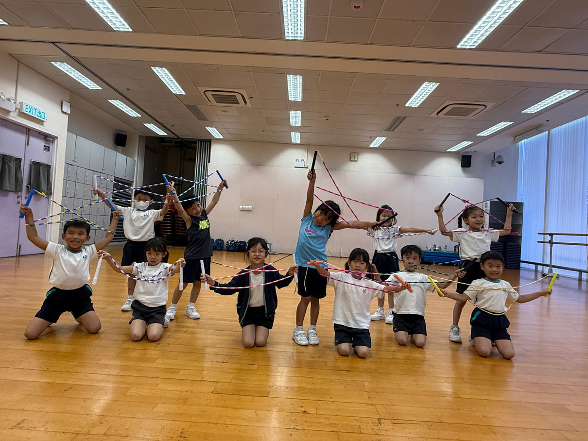
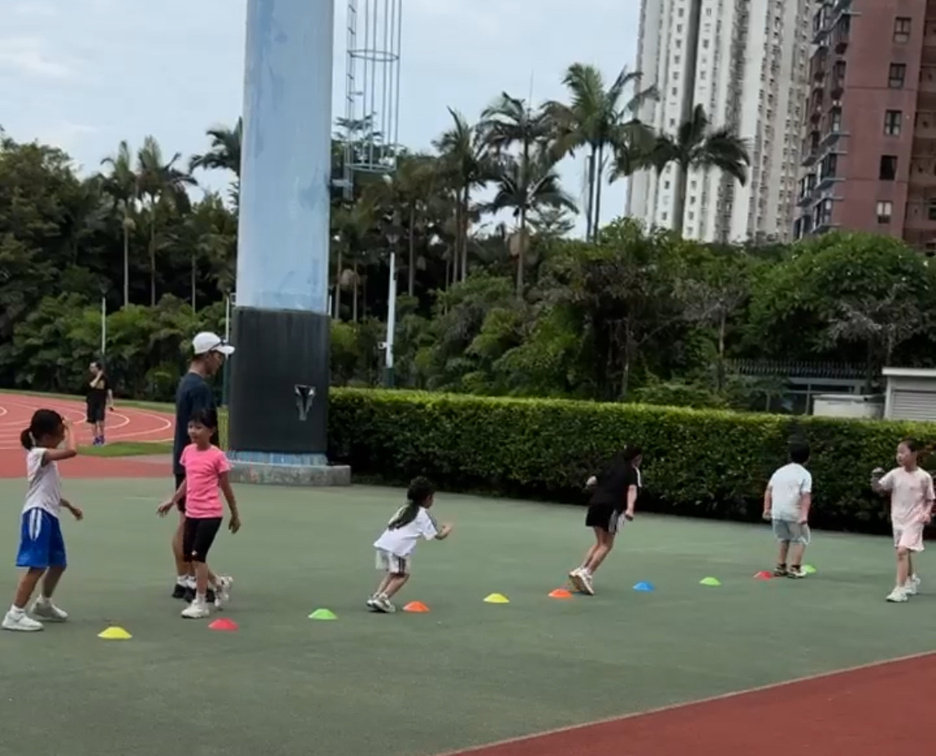

<!DOCTYPE html>
<html lang="zh-HK">
<head>
<meta charset="UTF-8">
<meta name="viewport" content="width=device-width, initial-scale=1.0">
<meta name="apple-mobile-web-app-capable" content="yes">
<meta name="theme-color" content="#0F1A28">
<title>INITIATE SPORTS 香港 Hong Kong｜青衣兒童運動班・暑期班・興趣班（羽毛球・網球・匹克球・花式跳繩）</title>
<meta name="google-site-verification" content="trTeImHefOZWku6Dusw9LDD2toRiQtHQonvoWfpHJkM" />
<meta name="description" content="INITIATE SPORTS 是香港青衣的兒童運動教學團隊（Hong Kong），開辦青衣運動班、暑期班及興趣班，涵蓋羽毛球、網球、匹克球、花式跳繩及多項目體適能小班課程（含小學生課程）。">
<meta name="robots" content="index,follow">
<link rel="canonical" href="https://www.initiatesportshk.com/">
<meta property="og:type" content="website">
<meta property="og:site_name" content="INITIATE SPORTS">
<meta property="og:title" content="INITIATE SPORTS 香港 Hong Kong — 青衣兒童運動班・暑期班・興趣班">
<meta property="og:description" content="香港青衣兒童運動班・暑期班・興趣班：羽毛球・網球・匹克球・花式跳繩・多項目體適能，小班教學。">
<meta property="og:url" content="https://www.initiatesportshk.com/">
<meta property="og:locale" content="zh_HK">
<meta property="og:image" content="https://www.initiatesportshk.com/img/courses/c1.jpg">
<meta property="og:image:width" content="1210">
<meta property="og:image:height" content="908">
<meta property="og:image:alt" content="INITIATE SPORTS 青衣兒童運動班">
<meta name="twitter:card" content="summary_large_image">
<meta name="twitter:image" content="https://www.initiatesportshk.com/img/courses/c1.jpg">
<script type="application/ld+json">{"@context":"https://schema.org","@type":"SportsActivityLocation","name":"INITIATE SPORTS","alternateName":["INITIATE SPORTS Hong Kong","INITIATE SPORTS 香港","INITIATE SPORTS 青衣","青衣運動班","香港兒童運動班"],"description":"INITIATE SPORTS（香港 Hong Kong）青衣兒童運動教學，開辦運動班、暑期班及興趣班：羽毛球、網球、匹克球、花式跳繩、多項目體適能小班課程。","url":"https://www.initiatesportshk.com/","areaServed":"青衣, 香港","address":{"@type":"PostalAddress","addressLocality":"Tsing Yi 青衣","addressRegion":"Hong Kong 香港","addressCountry":"HK"},"keywords":"香港兒童運動班,香港運動班,香港暑期班,Hong Kong kids sports,青衣運動班,青衣暑期班,青衣興趣班,青衣兒童運動,羽毛球,網球,匹克球,花式跳繩,體適能","sport":["Badminton","Tennis","Pickleball","Rope Skipping","Physical Conditioning"]}</script>
<script type="application/ld+json">{"@context":"https://schema.org","@type":"WebSite","name":"INITIATE SPORTS","alternateName":["INITIATE SPORTS Hong Kong","INITIATE SPORTS 香港","INITIATE SPORTS 青衣"],"url":"https://www.initiatesportshk.com/"}</script>
<link rel="preconnect" href="https://fonts.googleapis.com">
<link rel="preconnect" href="https://fonts.gstatic.com" crossorigin>
<link href="https://fonts.googleapis.com/css2?family=Noto+Sans+HK:wght@400;500;700;900&family=Noto+Serif+HK:wght@600;700&family=Archivo:ital,wght@0,600;0,700;0,800;1,800;1,900&display=swap" rel="stylesheet">
<style>
*{box-sizing:border-box}
body{margin:0;background:#0F1A28;font-family:'Noto Sans HK',system-ui,sans-serif;-webkit-font-smoothing:antialiased;color:#fff}
a{color:#3ECFCF;text-decoration:none}a:hover{color:#7FE3E3}
button{font-family:inherit}
@keyframes is-marquee{0%{transform:translateX(0)}100%{transform:translateX(-50%)}}
@keyframes is-glow{0%,100%{opacity:0.5;transform:scale(1)}50%{opacity:1;transform:scale(1.15)}}
@keyframes is-pulse{0%{box-shadow:0 0 0 0 rgba(62,207,207,0.5)}70%{box-shadow:0 0 0 14px rgba(62,207,207,0)}100%{box-shadow:0 0 0 0 rgba(62,207,207,0)}}
@keyframes is-menuIn{0%{transform:translateY(18px);opacity:0}100%{transform:translateY(0);opacity:1}}
@keyframes is-heroIn{0%{transform:translateY(30px);opacity:0}100%{transform:translateY(0);opacity:1}}
::selection{background:rgba(62,207,207,0.35)}
details summary::-webkit-details-marker{display:none}
::-webkit-scrollbar{width:0;height:0}
*{scrollbar-width:none}
[data-reveal]{opacity:0;transform:translateY(26px);transition:opacity .6s ease,transform .6s ease}
[data-reveal].rv-in{opacity:1;transform:translateY(0)}
</style>
</head>
<body>
<div id="app"></div>
<script>
/* ═══════════════════ INITIATE SPORTS 官網 v3（深色運動風）═══════════════════
   由 design_handoff_website_v3 設計稿忠實移植成 vanilla panel 架構。
   保留 SEO meta / JSON-LD / 其他頁面連結（is-enroll 讀 COURSE_DETAIL）。 */

/* ── 課程圖文詳情資料庫（同 is-enroll COURSE_DETAIL 同源，2026-08-31）── */
var COURSE_DETAIL = {"cf":{"summary":"把握 3–6 歲動作發展黃金期，用遊戲為孩子打好一生受用嘅運動根基 —— 移動、穩定、操控三大基礎動作技能。","sections":[{"icon":"🎯","h":"課程理念","p":"3 至 6 歲係兒童基礎動作技能（FMS）發展嘅關鍵窗口，亦係公認嘅「動作學習黃金期」。呢個階段大腦同神經系統對動作刺激特別敏感，今日打好嘅根基，會直接影響孩子日後跑、跳、接、投嘅自信同能力。INITIATE 相信運動要由「成功感」同「開心」開始 —— 我哋以遊戲化教學為核心，唔催谷、唔操練，讓幼兒喺玩樂中自然掌握身體素養（physical literacy），愛上郁動，為將來任何一項運動鋪好路。"},{"icon":"🔬","h":"運動科學根據：點解 3–6 歲唔可以錯過？","list":["動作黃金期：幼兒神經系統髓鞘化快速發展，呢個階段學到嘅動作模式會刻進「肌肉記憶」，事半功倍","FMS 三大類別：國際公認嘅基礎動作技能分為移動（Locomotor）、穩定（Stability）、操控（Manipulative），係所有專項運動嘅共同地基","LTAD 發展模型：長期運動員發展理論指出，6 歲前應以多元、遊戲化嘅動作經驗為主，太早專項化反而窒礙發展","身體素養（Physical Literacy）：及早建立「識郁、想郁、敢郁」嘅能力同自信，係孩子一生保持活躍嘅最強預測因素","窗口一去不返：基礎動作技能若喺童年冇打好，長大後追返嘅難度會大幅增加"]},{"icon":"🧩","h":"學員會學到（FMS 三大類動作，循序漸進）","list":["移動技能 Locomotor：跑、跳、單腳跳、雙腳跳、踏步、閃避、爬行","穩定技能 Stability：靜態與動態平衡、轉身、扭動、伸展、定型","操控技能 Manipulative：拋、接、踢、滾、拍、擲等手腳並用動作","身體與空間覺知：上下左右前後、快慢高低，控制自己身體嘅位置","遊戲中嘅規則感：輪流、等待、聽指令、與人合作","對運動嘅正面情感：覺得郁動係開心、好玩、想再嚟"]},{"icon":"🪜","h":"發展里程碑（依年齡循序推進）","list":["3–4 歲　建立期：穩定站、跑、雙腳原地跳；學識聽從簡單指令，敢於嘗試","4–5 歲　協調期：單腳平衡、連續跳、拋接大球、閃避跑，動作開始有節奏","5–6 歲　整合期：動作組合連貫、手腳並用、接細球、跳過矮障礙，準備銜接專項運動","每位孩子步伐不同，教練按個別發展階段調整，唔比較、唔標籤，只睇自己嘅進步"]},{"icon":"🌱","h":"對孩子嘅三重成長：身・腦・心","list":["身：協調、平衡、敏捷、肌力全面發展，打好運動根基","腦：專注、聽指令、空間感、動作記憶與反應","心：由完成動作建立自信，敢試敢跌、唔怕失敗，享受群體樂趣"]},{"icon":"👤","h":"適合對象","list":["3–6 歲幼兒，有冇運動底子都啱","首次接觸結構化運動嘅小朋友","怕醜、唔夠自信、想建立膽量同專注嘅孩子","精力旺盛、需要正面渠道發揮嘅小朋友"]},{"icon":"⭐","h":"點解揀 INITIATE 幼兒啟蒙","list":["依 FMS 三大類別＋LTAD 原則系統編排，唔係散玩，每個遊戲都有發展目標","師生比例 1:8，4 人成班，教練照顧到每個小朋友嘅發展步伐","PRE & POST 動作發展評估報告，成長用數據睇得見","全程遊戲化設計，孩子玩得開心又自然掌握技能","室內外場地交替，多元環境刺激感官與適應力","唔催谷、唔比較，先建立成功感同運動興趣"]},{"icon":"❓","h":"家長常見問題","list":["我個小朋友坐唔定／好怕醜，得唔得？—— 正正最啱，課程用遊戲降低門檻，教練專門幫慢熱、怕醜嘅孩子慢慢投入。","3 歲會唔會太細？—— 唔會，呢個階段正正係動作黃金期，我哋按年齡設計難度，安全為先。","冇運動底子跟唔跟到？—— 完全零基礎設計，由最基本郁動開始，唔會落後。","會唔會好悶淨係做操？—— 全程遊戲化，孩子當係玩，但每個遊戲背後都有動作發展目標。"]},{"icon":"🏫","h":"一堂係點上嘅？","list":["見面熱身：律動、追逐、關節活動，喚醒身體同專注","移動技能站：跑、跳、閃避等遊戲，練 Locomotor","穩定與操控站：平衡、拋接、踢滾等分站輪流玩","綜合遊戲：把動作串成小挑戰或合作遊戲，鞏固所學","放鬆總結：伸展、平復情緒、鼓勵每個小朋友，設下堂小目標"]},{"icon":"🎬","h":"重點技能點教（以「雙手接球」為例）","list":["動作要領：眼睛望實個球、雙手張開成籃形、球到手時輕輕收緩衝","分解練習：由滾地球接起 → 大球近距離拋接 → 慢慢加距離同縮細個球","常見錯誤 → 糾正：閉埋眼／用身體攔（怕球）→ 先用軟波、大波建立信心，教練近距離慢拋","進階挑戰：邊行邊接、拋高自接、二人互拋、接後即拋出"]},{"icon":"📈","h":"評估與成長追蹤","list":["PRE & POST 動作發展評估：入學與階段後對照移動、穩定、操控三大範疇","觀察式紀錄：教練記低每個孩子嘅專注、參與同動作質素","影片／相片回饋：畀家長睇得見孩子嘅進步","定期成長報告：用數據同觀察，清楚交代孩子喺邊度進步咗"]},{"icon":"🏆","h":"學員成就","list":["一屆屆幼兒由怕醜、唔敢郁，變到主動投入、敢於嘗試","系統化 FMS 訓練，見證孩子動作質素同自信逐步提升","打好基礎後順利銜接跳繩、田徑、球類等專項課程"]},{"icon":"📋","h":"上課安排","list":["師生比例 1:8，4 人成班，小班照顧每個發展步伐","附專屬 PRE & POST 動作發展數據成長報告","室內外場地交替訓練","時間及最新班別歡迎 WhatsApp 6331 7403 查詢"]}]},"c1":{"summary":"由一條繩開始，跳出協調、節奏與自信 —— 香港少數設 14 級章別考核嘅系統化花式跳繩課程。","sections":[{"icon":"🎯","h":"課程理念","p":"花式跳繩門檻低、變化無限，一條繩、一個空間就玩得出千變萬化，係少數可以隨時隨地練習嘅運動。INITIATE SPORTS 相信運動應該由「成功感」開始 —— 以由淺入深嘅花式進程，配合音樂、遊戲同團隊合作，讓孩子喺不知不覺間打好基本功，建立對運動嘅長遠興趣同紀律，愈跳愈有自信。"},{"icon":"🔬","h":"點解跳繩係小朋友嘅黃金運動？","list":["雙側協調：左右手同步搖繩、雙腳規律起跳，強化左右腦連結與神經肌肉控制","高效帶氧：短時間跳繩已達顯著心肺訓練效果，安全又慳位","骨骼發展：規律彈跳刺激骨質密度，正值成長期嘅孩子尤其受用","大腦活化：節奏、計數、動作編排同步進行，訓練專注力、工作記憶與反應","情緒調節：帶氧運動釋放壓力，好動嘅孩子有正面渠道發揮精力"]},{"icon":"🧩","h":"學員會學到（三階段循序漸進）","list":["入門：正確握繩與搖繩節奏、雙腳併跳、連續跳與呼吸配合","基礎：開合跳、前後跳、左右跳、單腳交替等步法變化","花式：交叉跳、回環、側擺等手腳協調動作，逐步串連成套路","速度與耐力：限時計次跳、間歇跳，提升心肺與爆發力","進階挑戰：多重跳（雙搖）、組合連招","團體合作：雙人繩、長繩、交互繩等團隊玩法"]},{"icon":"🌈","h":"彩虹章別成長階梯","p":"課程配合 INITIATE 自家設計嘅 14 級彩虹章別考核制度（Level 1–7 彩虹章 ＋ Level 8–14 進階技術考核）。每一級都有清晰嘅動作與速度指標，孩子睇得見自己嘅進步，學得更有方向同動力；表現出色者更可銜接進階班、參加公開比賽。"},{"icon":"🌱","h":"對孩子嘅三重成長：身・腦・心","list":["身：心肺、肌耐力、協調與敏捷全面提升","腦：專注力、節奏感、反應與動作記憶","心：由克服動作建立自信、堅毅同永不放棄嘅態度"]},{"icon":"👤","h":"適合對象","list":["幼稚園高班至小學階段、想打好運動基礎嘅孩子","好動或精力旺盛、需要正面渠道發揮嘅小朋友","零基礎完全歡迎，由一條繩開始循序漸進"]},{"icon":"⭐","h":"點解揀 INITIATE 花式跳繩","list":["香港少數設 14 級章別考核嘅系統化課程，升級目標清晰","融入 S&C 體能元素，唔止識跳，更打好全身運動根基","PRE & POST 數據化能力評估，成長睇得見","小班教學、4 人成班，教練因材施教","屢獲比賽佳績，備戰有門路","由淺入深、遊戲化教學，先建立成功感"]},{"icon":"❓","h":"家長常見問題","list":["冇任何基礎得唔得？—— 完全冇問題，課程專為零基礎孩子由淺入深設計。","跳繩會唔會傷膝頭？—— 教練會教正確落地與緩衝技巧，並融入體能訓練減低受傷風險。","要唔要自備繩？—— 我哋有專業拍子繩／膠繩，亦可 WhatsApp 查詢選購。","考章係點運作？—— 教練定期評估，達標即可升級，孩子有清晰目標。"]},{"icon":"🏫","h":"一堂係點上嘅？","list":["熱身與繩性遊戲：活動關節、建立節奏感","技術重點：教練示範＋分解，逐個糾正動作","花式進程：由基礎串連到新花式挑戰","體能環節：融入 S&C 力量、速度與協調訓練","放鬆與總結：伸展、覆盤，設定下堂目標"]},{"icon":"🎬","h":"重點動作點教（以「交叉跳」為例）","list":["動作要領：手腕帶動搖繩、交叉點對準身體中線、保持穩定節奏","分解練習：原地擺繩定位 → 慢速交叉 → 連續交叉","常見錯誤 → 糾正：手臂張太開／繩打腳 → 收窄交叉幅度、放慢搖繩再加速","進階串連：交叉與開合、回環組合成花式套路"]},{"icon":"📈","h":"評估與成長追蹤","list":["PRE & POST 能力測試：速度、耐力、花式數據化紀錄","影片回饋：拍低動作，等孩子睇得見、改得快","章別考核：達標即升級，進度一目了然","定期成長報告：家長清楚掌握孩子進步"]},{"icon":"🏆","h":"學員成就","list":["學員屢獲各區及公開賽事佳績","系統化章別制度，見證孩子逐級突破","由「識跳」到考章、參賽，成長路線清晰"]},{"icon":"📋","h":"上課安排","list":["師生比例 1:12，4 人成班","配合彩虹章別考核計劃，定期評估進度","時間及最新班別歡迎 WhatsApp 6331 7403 查詢"]}]},"jump-adv":{"summary":"比賽導向嘅精英深造訓練 —— 由「識跳」邁向「跳得專、跳得精」。","sections":[{"icon":"🎯","h":"課程理念","p":"INITIATE SPORTS 一直致力以專業、系統化嘅方式培養青少年運動員。踏入新學年，我哋喺現有興趣班之上，正式開設花式跳繩進階班，為有志向、有潛質嘅學員提供比賽導向嘅深造訓練，協助佢哋由「識跳」邁向「跳得專、跳得精」。"},{"icon":"🆚","h":"進階班同興趣班有咩分別？","p":"興趣班著重培養興趣同基本功；進階班則係精英路線——訓練強度、動作難度同技術要求都會提升，並以參加公開賽事、爭取佳績為目標。"},{"icon":"🧩","h":"系統鑽研範疇","list":["速度項目：30 秒、3 分鐘耐力速度，強化步頻與節奏","花式串連（Freestyle）：多搖（雙搖、三搖）、交叉變化、開合、轉體等動作組合與編排","交互繩・車輪（Wheel / Interactions）：雙人及團體高階配合技術","力量與體操元素：融入體操、地板及爆發力動作（如俯撐、倒立、翻騰等），提升動作觀賞性與難度分","雙人、團體及花樣大繩（Double Dutch）：培養默契與臨場協作"]},{"icon":"✅","h":"入選要求","list":["確保出席率（若入選後經常請假、未能參與訓練，將會移除名額）","30 秒單車步達 40 下或以上","30 秒前繩跳達 95 下或以上","能做到連續二重跳或更高難度的花式","訓練中展現認真學習態度，遵守課堂規則、尊重隊友","對花式跳繩有熱誠、願意投入額外練習","有意參加公開比賽、追求自我突破"]},{"icon":"⏱","h":"訓練時長","p":"每次訓練 2 小時（後續有機會加至每次 3 小時）。"},{"icon":"📋","h":"報名查詢","list":["2026 年 10 月開始（需技術遴選及教練批准）；師生比例 1:12，4 人成班；名額有限","時間及最新班別歡迎 WhatsApp 6331 7403 查詢"]}]},"c3":{"summary":"綜合體能引擎＋田徑專項＋球類共通根基，一次過打好 —— 力量、速度、敏捷、協調、手眼反應樣樣兼顧，直接對接小學體育科呈分試同各類球類運動。","sections":[{"icon":"🎯","h":"課程理念","p":"好多家長問：「呢個班係打波定跑步？」答案係 —— 樣樣都幫到手。本課程三條腿走：一係跨運動共通嘅「體能引擎」（力量、速度、敏捷、協調、平衡），二係被譽為「運動之母」嘅田徑專項（跑、跳、擲），三係融入唔同球類嘅共通基礎能力（手眼協調、拋接、追蹤來球、腳步移動、反應變向）。底子打得好，孩子學羽毛球、籃球、匹克球、乒乓、網球都快人一步；跑跳擲技術扎實，再加上球類底層根基，喺小學體育堂同新推行嘅體育科呈分試更加得心應手。一個課程，同時顧好通用底子、田徑技術同球類共通能力。"},{"icon":"🔬","h":"運動科學根據","list":["動作 ABC：LTAD 模型指出敏捷（Agility）、平衡（Balance）、協調（Coordination）係 6 歲後身體最適合密集打磨嘅能力，錯過就難補","速度敏捷黃金期：兒童神經系統發展快，呢階段練起步、加速、變向，效率遠高於青春期後","田徑係運動之母：走、跑、跳、擲係幾乎所有運動嘅根基，速度、力量、協調全部由此而來","技能遷移：手眼協調、追蹤來球、腳步變向係跨球類嘅共通底層能力，練好一次，任何一種球類都學得快","唔好太早專項化：先建立全面體能引擎，再談專項，先至行得遠、少受傷","以自身體重為主嘅安全肌力：適齡、循序漸進，建立核心與關節控制，唔傷發育"]},{"icon":"🎓","h":"對接學校體育科（呈分試）","p":"本課程核心係全面提升孩子嘅體能同運動表現 —— 力量、速度、敏捷、協調、耐力。而由 2026/27 學年起，香港中小學體育科被納入校內呈分評估，體育科考核一般圍繞體能同基本運動動作；換言之，孩子喺呢度打好嘅體適能同運動技能，除咗令日常運動表現更出色，同時亦可以應用喺體育科嘅評估同測試之中，令佢更有信心、更揮灑自如。（我哋只按官方公布嘅大方向理解，唔會就分數比重或考核細節作任何假設，一切以學校最新指引為準。）"},{"icon":"🧩","h":"學員會學到（三大板塊，環環相扣）","list":["【綜合體能】力量：自身體重為主嘅安全肌力，建立核心控制","【綜合體能】速度：起步、加速、煞停、變向嘅跑動技巧","【綜合體能】敏捷與協調：快速反應、閃避、手腳並用嘅複合動作","【綜合體能】平衡：靜態與動態平衡，預防受傷","【田徑專項】跑：正確跑姿、擺臂、加速與衝線","【田徑專項】起跑：站立式與蹲踞式起跑，訓練起動爆發","【田徑專項】跳：立定跳遠、跳遠助跑與起跳","【田徑專項】擲：擲球等投擲動作嘅全身發力與協調","【球類基礎】手眼協調：拋接、拍球、目標命中嘅基本控球感","【球類基礎】追蹤來球：判斷來球嘅方向、距離同速度，及早移位","【球類基礎】腳步移動：預備姿勢、側移、上前後撤同變向煞停","【球類基礎】反應變向：聽聲／睇訊號快速起動，模擬球場攻守轉換"]},{"icon":"🏀","h":"球類共通能力（唔被單一運動定義）","list":["唔綁死一種球：我哋唔係專攻某一項球類，而係練好所有球類都用得着嘅底層能力","手眼協調：拋接、拍擊、擋擊等控球感，係打乒乓、羽毛球、網球嘅共通根基","追蹤與判斷來球：訓練眼睛追波、預判落點，反應快人一步","腳步與重心：預備站姿、快速側移、變向煞停 —— 籃球、匹克球、羽毛球都靠呢套","反應與變向：聽訊號起動、急停轉向，模擬真實比賽嘅攻守節奏","學一種通、種種通：打好共通根基，孩子日後揀邊種球類都上手特別快"]},{"icon":"🪜","h":"能力進程（由根基到專項應用）","list":["第一階　動作根基：學識正確嘅跑、跳、落地力學，打好安全底子","第二階　體能引擎：力量、速度、敏捷、協調同步提升，動作更有力更快","第三階　專項技術：把體能轉化落田徑跑跳擲，同球類共通嘅手眼、腳步能力","第四階　實戰應用：計時、量距、球類小遊戲挑戰個人紀錄，對接校隊、體育科呈分試同比賽","進程按個人能力推進，教練針對強弱項調整，唔一刀切"]},{"icon":"🌱","h":"對孩子嘅三重成長：身・腦・心","list":["身：力量、速度、爆發、耐力全面提升，動作質素更佳、受傷更少","腦：反應、判斷、追蹤來球、專注同目標感喺挑戰紀錄中鍛鍊","心：喺突破個人紀錄中培養毅力、自律同永不放棄"]},{"icon":"👤","h":"適合對象","list":["6 歲或以上、想全面打好運動底子嘅孩子","想為小學體育堂同新推行嘅體育科呈分試提早準備嘅學生","想打好各類球類（籃球／羽毛球／匹克球／乒乓／網球）共通底子嘅小朋友","已玩開某項運動、想加強整體體能同速度嘅小朋友","想為校隊或田徑比賽做準備嘅學生"]},{"icon":"⭐","h":"點解揀 INITIATE 綜合運動體能＋田徑","list":["體能引擎＋田徑專項＋球類共通能力三合一，通用底子同運動表現兼得","緊貼體育科呈分試大方向備課，幫孩子喺校內體育評估更有信心","融入 S&C 體能訓練，依 LTAD 發展原則編排，安全為先","PRE & POST 體能數據成長報告，進步睇得見","小班教學，針對每個孩子強弱項調整姿勢","鼓勵表現出色學員參與比賽，實戰中成長","室內外場地交替，貼近實戰"]},{"icon":"❓","h":"家長常見問題","list":["呢個班有冇教跳繩？—— 冇。本課程專注綜合運動體能、田徑同球類共通基礎，唔包括花式跳繩教學；想學跳繩嘅同學，可以報我哋嘅「花式跳繩班」。","同純田徑班有咩分別？—— 我哋除咗教田徑跑跳擲，仲打好背後嘅體能引擎，並融入跨球類嘅手眼、腳步、反應能力，令孩子學任何運動都更快上手、更少受傷。","唔係球類班，點解會練球類？—— 我哋唔專攻單一種球，而係練跨球類共通嘅手眼協調、腳步同反應，令孩子日後學羽毛球、籃球、匹克球等任何一種球都快人一步。","幫唔幫到體育科呈分試？—— 幫到，課程針對體育科核心嘅體適能、跑跳投接同球類基本能力打底；我哋只跟官方大方向，考核細節一律以學校最新指引為準。","細個練肌力會唔會傷身？—— 唔會，全部以自身體重為主、適齡循序漸進，安全第一。","冇運動底子跟唔跟到？—— 課程由基本動作起步，因材施教，零基礎都跟得上。"]},{"icon":"🏫","h":"一堂係點上嘅？","list":["動態熱身：關節活動、跑姿律動，啟動身體","體能環節：力量、速度、敏捷、協調嘅 S&C 訓練","田徑技術：起跑、跑姿、跳躍或投擲，逐個分解糾正","球類共通練習：拋接、追波、腳步變向嘅趣味小遊戲，打好跨球類反應","專項練習或挑戰：計時、量距，鞏固技術","放鬆總結：伸展、覆盤，設定下堂目標"]},{"icon":"🎬","h":"重點動作點教（以「加速跑起動」為例）","list":["動作要領：身體前傾、有力擺臂（手肘約九十度）、前腳掌著地、步步加速","分解練習：原地高抬膝擺臂 → 前傾牆壁推撐 → 短距離起動衝刺","常見錯誤 → 糾正：起跑即挺直身、腳跟落地拖慢速度 → 強調前傾角度同前腳掌著地，用標誌桶做起動距離","進階串連：反應起動（聽聲／睇手勢先起）、變向加速、接力交棒 —— 同樣係球場搶位嘅底層能力"]},{"icon":"📈","h":"評估與成長追蹤","list":["PRE & POST 體能測試：速度、爆發、敏捷、協調數據化紀錄","田徑成績紀錄：短跑計時、立定跳遠量距，對照個人紀錄","球類基礎能力觀察：手眼協調、追球反應、腳步移動嘅進步紀錄","影片回饋：拍低跑跳同控球動作，睇得見、改得快","定期成長報告：家長清楚掌握孩子體能、技術同球類底子進步"]},{"icon":"🏆","h":"學員成就","list":["喺綜合體能、田徑同球類基礎全面打好底子","系統化訓練，見證孩子速度、爆發同動作質素逐步提升","由打好體能底子到對接校隊、體育科呈分試同各類球類，成長路線清晰"]},{"icon":"📋","h":"上課安排","list":["師生比例 1:12，4 人成班","新學員入學前作簡單能力評估","時間及最新班別歡迎 WhatsApp 6331 7403 查詢"]}]},"c2":{"summary":"跑、跳、擲，運動之母 —— 以正確技術同安全為先，為孩子打開一生運動嘅大門。","sections":[{"icon":"🎯","h":"課程理念","p":"田徑被譽為「運動之母」，因為走、跑、跳、擲係幾乎所有運動嘅根基，速度、力量、協調同平衡都由此而來。INITIATE 以正確姿勢同安全為先，用遊戲化嘅訓練讓孩子掌握最核心嘅基本動作 —— 唔止為田徑打底，更為將來各項運動同體育學習奠定扎實根基。跑得快、跳得遠、擲得準唔係天生，而係練得出。"},{"icon":"🔬","h":"運動科學根據","list":["運動之母：跑、跳、擲係人類最基本嘅運動模式，練好呢啲，其他運動都遷移得到","速度與敏捷黃金期：兒童神經發展快，童年練起跑、加速、變向，效率遠高於長大後","爆發力發展：跳躍與投擲訓練刺激快縮肌與神經肌肉協調，建立爆發力","呈分試高度相關：跑、跳項目正正係小學體育課程同呈分試常考內容","安全跑跳落地力學：教正確著地與緩衝，減低生長期關節與軟組織受傷風險"]},{"icon":"🧩","h":"學員會學到（跑・跳・擲三大範疇）","list":["跑嘅技術：正確跑姿、擺臂、加速與衝線","起跑與反應：站立式／蹲踞式起跑，訓練起動爆發","跳嘅項目：立定跳遠、跳遠助跑與起跳","擲嘅項目：擲球等投擲動作嘅發力與全身協調","體能基礎：敏捷、爆發力、核心穩定與步法","障礙與綜合練習：跨越、急停變向"]},{"icon":"🪜","h":"能力進程（由基本動作到項目技術）","list":["第一階　基本動作：掌握正確跑姿、擺臂同安全落地","第二階　項目入門：分別學識起跑、跳遠、投擲嘅基本技術","第三階　技術打磨：改善步伐、節奏同發力細節，動作更有效率","第四階　紀錄挑戰：計時、量距，向個人紀錄同校際／公開比賽進發","進程按個人能力推進，教練細心糾正姿勢，唔追速成"]},{"icon":"🌱","h":"對孩子嘅三重成長：身・腦・心","list":["身：速度、爆發力、肌耐力、協調同平衡全面提升","腦：專注、目標感、節奏與反應喺挑戰紀錄中鍛鍊","心：喺突破個人紀錄中培養毅力、專注同永不放棄"]},{"icon":"👤","h":"適合對象","list":["小一或以上、想打好體能同運動基礎嘅孩子","喜歡跑跳、精力充沛嘅小朋友","想為校隊或體育呈分試做準備嘅學生","零基礎歡迎，由基本跑跳學起"]},{"icon":"⭐","h":"點解揀 INITIATE 田徑","list":["涵蓋跑、跳、擲三大範疇，全面而均衡","由基本動作到項目技術，循序漸進，安全為先","融入 S&C 體能元素，唔止練技術，更打好全身根基","PRE & POST 數據化表現評估，成長睇得見","小班教學，教練細心逐個糾正姿勢","鼓勵表現出色學員參與各區及公開比賽，實戰中成長"]},{"icon":"❓","h":"家長常見問題","list":["冇任何基礎得唔得？—— 完全冇問題，課程由最基本嘅跑跳動作教起。","幫唔幫到呈分試？—— 直接幫到，跑、跳項目正正係呈分試常考內容。","跑跳會唔會容易受傷？—— 教練會教正確落地與緩衝，並融入體能訓練減低受傷風險。","小朋友唔算跑得快，啱唔啱讀？—— 啱，速度係練得出嘅，我哋由技術同體能兩方面幫佢提升。"]},{"icon":"🏫","h":"一堂係點上嘅？","list":["動態熱身：跑姿律動、關節活動，啟動身體","技術重點：起跑、跑姿、跳躍或投擲，教練示範＋分解","分項練習：逐個項目練習，即時糾正動作","體能環節：融入敏捷、爆發、核心嘅 S&C 訓練","挑戰與總結：計時／量距、伸展覆盤，設下堂目標"]},{"icon":"🎬","h":"重點動作點教（以「立定跳遠」為例）","list":["動作要領：屈膝下蹲、雙臂向後擺、蹬地同時用力向前上方擺臂、落地屈膝緩衝","分解練習：原地擺臂預備 → 只練起跳騰空 → 加落地緩衝 → 完整連貫","常見錯誤 → 糾正：唔識用手擺（淨用腳）／落地企直撞膝 → 教「手帶身跳」、落地即屈膝軟著陸，用標誌線做目標","進階挑戰：連續立定跳、加距離目標、接助跑跳遠"]},{"icon":"📈","h":"評估與成長追蹤","list":["PRE & POST 表現測試：短跑計時、立定跳遠量距等數據化紀錄","個人紀錄追蹤：每次量度對照自己過往成績，睇得見進步","影片回饋：拍低跑跳動作，等孩子睇得見、改得快","定期成長報告：家長清楚掌握孩子表現進步"]},{"icon":"🏆","h":"學員成就","list":["由基本跑跳到掌握田徑技術，逐級打好根基","系統化訓練，見證孩子速度、爆發同技術逐級突破","由基本跑跳到對接校隊、呈分試同比賽，路線清晰"]},{"icon":"📋","h":"上課安排","list":["師生比例 1:12，4 人成班","時間及最新班別歡迎 WhatsApp 6331 7403 查詢"]}]},"badminton":{"summary":"節奏明快、攻守全面 —— 由握拍到有來有往嘅對打，以系統化技術進程配合數據化評估，帶小朋友一步步打穩羽毛球根基，愈打愈有信心。","sections":[{"icon":"🎯","h":"課程理念","p":"羽毛球一拍一步都講求協調、判斷同專注，係公認最啱兒童入門嘅球類運動之一。INITIATE SPORTS 相信技術要由「正確」開始 —— 我哋唔急住叫小朋友大力扣殺，而係先打好握拍、揮拍同步法呢啲底層功夫，再循序漸進帶佢哋進入有來有往嘅對打樂趣。當基本功夠紮實，孩子就會自然享受到「接到、打到、贏到」嘅成功感，愈打愈投入。"},{"icon":"🔬","h":"點解羽毛球係小朋友嘅黃金運動？","list":["全身協調：揮拍、跨步、轉腰同蹬地一氣呵成，訓練上下肢與軀幹嘅連動控制","快速反應：羽毛球飛行速度快、球路多變，逼小朋友即時判斷同出手，鍛鍊神經反射","敏捷移位：前後左右不停啟動同煞停，強化腳步、方向轉換同身體控制","心肺耐力：一局波跑跑跳跳，係高效又有趣嘅帶氧運動","空間與判斷力：睇球路、估落點，訓練預判同臨場決策","專注紀律：每一球都要盯實嚟球，長期練習自然培養專注同耐性"]},{"icon":"🧩","h":"學員會學到（三階段循序漸進）","list":["入門：正確握拍（正手／反手轉換）、基本準備姿勢、原地揮拍定型","基礎：正手高遠球、發高遠球與發短球、上網與後退嘅基本步法","進階擊球：吊球、平抽擋、反手過渡，逐步加入落點控制","步法系統：米字步、交叉步、蹬跨步，練到「腳到手到」","多球餵球：教練連續餵球，密集重複同一動作，快速建立擊球手感","實戰對打：一對一與雙打情境，學走位、補位同攻守轉換"]},{"icon":"🪜","h":"技術進程里程碑","p":"羽毛球冇章別制度，但我哋為孩子設定清晰嘅「技術進程里程碑」：由第一階段「握對拍、揮到全揮」，到第二階段「發到高遠球、連續對拉唔失手」，再到第三階段「用得出吊球、平抽，識得打落空位」。每個里程碑都有具體、睇得見嘅動作指標，教練會逐項評估，等小朋友清楚知道自己去到邊、下一步練咩，學得更有方向同動力。"},{"icon":"🌱","h":"對孩子嘅三重成長：身・腦・心","list":["身：手眼協調、敏捷、心肺與全身協調同步提升","腦：判斷球路、預判落點、臨場應變嘅運動智慧","心：由接到一球到贏到一分，建立自信、抗逆同永不放棄"]},{"icon":"👤","h":"適合對象","list":["小學一年級或以上、對羽毛球有興趣嘅孩子","零基礎完全歡迎，由握拍與揮拍第一步開始","已有少少底子、想加強步法同實戰對打嘅學員","想提升反應、協調同專注力嘅小朋友"]},{"icon":"⭐","h":"點解揀 INITIATE 羽毛球","list":["融入 S&C 體能元素，唔止識打波，更打好敏捷、力量同心肺根基","PRE & POST 數據化能力評估，擊球穩定度同體能成長睇得見","多球餵球高密度訓練，同一動作反覆打，手感建立得快","小班教學、4 人成班，教練貼身糾正每個揮拍細節","由正確姿勢入手，減低運動受傷風險","由淺入深、先建立成功感，孩子愈打愈鍾意"]},{"icon":"❓","h":"家長常見問題","list":["完全冇打過得唔得？—— 得，課程專為零基礎設計，由握拍揮拍逐步教起。","打羽毛球會唔會容易受傷？—— 我哋著重正確姿勢同熱身，並融入體能訓練強化關節與落地控制，大幅降低受傷風險。","要唔要自備球拍？—— 建議自備個人球拍；初學可先用場地公用拍，選購歡迎 WhatsApp 查詢建議。","小朋友好怕醜、唔夠反應快得唔得？—— 小班加多球餵球，每個孩子都有足夠練習量，教練按程度調節，慢慢建立信心。"]},{"icon":"🏫","h":"一堂係點上嘅？（每節 120 分鐘）","list":["熱身與步法活化：關節活動、米字步腳步遊戲，開啟身體","技術重點：教練示範＋分解，逐個糾正握拍與揮拍","多球餵球：連續餵球密集練習當堂重點擊球","對打應用：把技術帶入一對一或雙打情境","體能環節：融入 S&C 敏捷、力量與協調訓練","放鬆與總結：伸展、覆盤，設定下堂目標"]},{"icon":"🎬","h":"重點動作點教（以「正手高遠球」為例）","list":["動作要領：側身準備、非持拍手指向嚟球、揮拍時轉腰蹬地、擊球點喺頭頂前上方、擊球後隨勢揮落","分解練習：原地徒手揮拍定型 → 高拋自打感受擊球點 → 教練餵高球連續打","常見錯誤 → 糾正：手臂太僵冇轉腰（球唔夠遠）→ 提醒用腰帶動、放鬆手腕加速；擊球點太低太後 → 提早側身站位、喺頭頂前擊球","進階串連：高遠球接吊球做落點變化，練習「一樣動作、唔同輕重」嘅假動作"]},{"icon":"📈","h":"評估與成長追蹤","list":["PRE & POST 能力測試：擊球穩定度、步法、敏捷與體能數據化紀錄","技術進程里程碑：逐項評估達標情況，進度一目了然","影片回饋：拍低揮拍與步法，等孩子睇得見、改得快","定期成長報告：家長清楚掌握孩子每階段進步"]},{"icon":"🏆","h":"學員成就","list":["學員由零基礎到打得出穩定對拉，實戰信心明顯提升","系統化技術里程碑，見證孩子逐階突破","表現出色者可獲教練推薦銜接進階訓練或校隊備戰"]},{"icon":"📋","h":"上課安排","list":["師生比例 1:6，4 人成班，確保足夠餵球與練習時間","每節 120 分鐘，技術、對打與體能兼備","附技術進程里程碑評估，定期檢視進度","時間及最新班別歡迎 WhatsApp 6331 7403 查詢"]}]},"gym":{"summary":"翻滾、倒立、一字馬 —— 由學識「控制自己身體」開始，用系統化動作進程同數據評估，為孩子打好一生受用嘅運動根基。","sections":[{"icon":"🎯","h":"課程理念","p":"基礎體操係所有運動嘅根 —— 一個識得控制自己身體嘅孩子，之後學任何運動都快人一步。INITIATE SPORTS 相信體操唔係表演雜技，而係最扎實嘅「身體教育」：透過翻滾、倒立、平衡同柔韌訓練，幫孩子建立身體覺知、力量同協調，同時喺一次次挑戰動作嘅過程中，培養專注、耐性同勇氣。安全永遠擺第一，我哋只會喺孩子準備好嘅時候，先帶佢去下一步。"},{"icon":"🔬","h":"點解體操係小朋友嘅黃金運動？","list":["身體覺知：翻滾、倒立逼孩子感受身體喺空間嘅位置，建立本體感覺","核心力量：幾乎每個體操動作都要用核心穩定身體，練出真正嘅「中軸力量」","柔韌度：成長期關節柔軟，係練一字馬、橋式、壓腿嘅黃金時機","平衡與控制：定型、平衡動作訓練神經肌肉控制，動作更穩更靚","安全落地：學識點樣滾、點樣卸力，跌倒識保護自己，係一生受用嘅能力","專注與勇氣：面對倒立、翻滾要克服恐懼，練成一次就多一分自信"]},{"icon":"🧩","h":"學員會學到（三階段循序漸進）","list":["入門：安全落地與滾動、前滾翻、後滾翻、基本身體定型","基礎：側手翻、牆邊倒立、橋式、壓腿與柔韌伸展","控制：平衡木行走、單腳站立、定點支撐與靜態定型","核心與力量：爬行、跳躍、撐體等自身體重訓練","柔韌進程：一字馬、大字馬循序漸進，安全拉開幅度","動作串連：把單一動作組合成流暢嘅體操序列"]},{"icon":"🪜","h":"動作進程","p":"體操冇章別制度，但我哋為每類動作設計咗清晰嘅「動作進程」：以前滾翻為例，由「抱膝滾動感受節奏」→「低頭團身完成前滾翻」→「滾完企返起身唔用手」→「連續前滾翻接其他動作」。倒立、一字馬、側手翻各有自己嘅分階梯級。教練會按孩子實際掌握程度逐級推進，達到一級先解鎖下一級，唔催谷、唔跳步，等每個孩子都喺安全同有成功感嘅前提下進步。"},{"icon":"🌱","h":"對孩子嘅三重成長：身・腦・心","list":["身：柔韌、核心、上下肢力量與平衡全面發展","腦：身體覺知、空間感、動作記憶與專注力","心：克服恐懼、勇於嘗試，建立自信同堅毅"]},{"icon":"👤","h":"適合對象","list":["5 歲或以上、想打好運動基礎嘅孩子","想改善柔韌度、協調或平衡嘅初學者","為其他運動（跳繩、球類、田徑）建立身體底子嘅學員","零基礎完全歡迎，由安全滾動開始學起"]},{"icon":"⭐","h":"點解揀 INITIATE 體操","list":["融入 S&C 體能元素，柔韌之外更練力量與控制","PRE & POST 數據化能力評估，柔韌與核心進步睇得見","清晰動作進程，逐級解鎖，孩子有明確目標","小班教學、4 人成班，教練貼身保護與糾正","安全至上：完善軟墊、保護輔助與分解教學","正面鼓勵、唔催谷，先建立成功感再挑戰難度"]},{"icon":"❓","h":"家長常見問題","list":["做體操會唔會好易受傷？—— 安全係我哋首要考慮，全程有軟墊、保護輔助同教練貼身保護，動作亦會拆細一步步教，準備好先進階。","我小朋友身體好硬、完全劈唔到一字馬得唔得？—— 完全冇問題，柔韌係練返嚟嘅，教練會用安全嘅漸進伸展，逐少拉開，唔會夾硬撳。","幾歲可以開始？—— 5 歲或以上就啱，呢個階段關節柔軟、學動作快，係打底嘅好時機。","冇任何底子得唔得？—— 得，課程由最基本嘅安全滾動同身體定型教起，零基礎完全歡迎。"]},{"icon":"🏫","h":"一堂係點上嘅？","list":["熱身與關節活動：全身活化、柔韌喚醒，預備身體","技術重點：教練示範＋分解，逐個保護同糾正動作","動作進程：由當前級數挑戰下一個梯級","核心與力量：融入 S&C 撐體、爬行、跳躍訓練","柔韌環節：安全漸進伸展，逐少拉開幅度","放鬆與總結：伸展、覆盤，設定下堂目標"]},{"icon":"🎬","h":"重點動作點教（以「前滾翻」為例）","list":["動作要領：蹲低、雙手撐地、低頭收下巴、後腦唔掂地、以後頸到背嘅弧線滾動、抱膝團身順勢企起","分解練習：抱膝前後滾動感受節奏 → 斜墊上完成前滾翻 → 平地前滾翻 → 滾完唔用手企身","常見錯誤 → 糾正：頭頂直接撳落地（頸唔安全）→ 強調收下巴、用後頸滾；身體散唔團身（滾唔起身）→ 提醒抱實膝頭、團緊個身","進階串連：連續前滾翻，或前滾翻接跳起定型，練習動作之間嘅流暢銜接"]},{"icon":"📈","h":"評估與成長追蹤","list":["PRE & POST 能力測試：柔韌度、核心力量、平衡與動作質素數據化紀錄","動作進程評估：逐個動作紀錄達到嘅梯級，進度清晰","影片回饋：拍低動作，等孩子睇得見自己嘅線條同進步","定期成長報告：家長清楚掌握孩子每階段成長"]},{"icon":"🏆","h":"學員成就","list":["學員由怕跌怕倒立，到穩定完成翻滾、倒立與柔韌動作","系統化動作進程，見證孩子逐級突破","紮實嘅身體底子，成為孩子日後學各類運動嘅本錢"]},{"icon":"📋","h":"上課安排","list":["師生比例 1:8，4 人成班，確保安全保護與個別指導","完善軟墊與保護輔助，安全至上","附動作進程評估，定期檢視柔韌與核心進度","時間及最新班別歡迎 WhatsApp 6331 7403 查詢"]}]},"pickleball":{"summary":"羽毛球、乒乓球同網球嘅精華合體 —— 球速慢、規則易上手，小朋友幾堂就對打得起，喺策略同落點之中愈打愈醒目。","sections":[{"icon":"🎯","h":"課程理念","p":"匹克球（Pickleball）用輕巧球拍同帶孔膠球，喺較細嘅場地上進行，球速比網球慢、彈跳可控，係全球增長最快嘅運動之一。INITIATE SPORTS 揀匹克球做入門球類，正正因為佢「低門檻、高天花」—— 孩子唔使好大力氣就打得到波，好快建立成功感；但要打得叻，就要學識控制落點、讀對手、同拍檔走位，係一項「用腦多過用蠻力」嘅運動。我哋由持拍手感開始，循序漸進帶孩子由「掂到波」去到「有來有往嘅對打」，喺樂趣中打好協調、判斷同運動禮儀。"},{"icon":"🔬","h":"點解匹克球適合小朋友？","list":["球速慢、反應窗口長：初學者有足夠時間判斷來球、調整腳步，成功率高，唔易挫敗","手眼協調：追蹤來球、對準拍面、控制力度一氣呵成，強化視覺與神經肌肉連結","細場地、多變向：頻繁嘅起動、煞停、側移訓練敏捷度同下肢控制","策略思維：落點、節奏、廚房區站位涉及即時決策，訓練專注力同判斷","雙打社交：大部分以雙打進行，孩子要同拍檔溝通、補位、輪流上手，培養合作同禮讓"]},{"icon":"🧩","h":"學員會學到（三階段循序漸進）","list":["入門：認識球拍、膠球同場地，掌握基本握拍、拍面控制同「掂到波、送到位」嘅手感","基礎：下手發球與接發球、正手與反手落地擊球、學識「雙彈規則」（發球同接發球各要先落地一次）","控制：截擊（Volley）、輕擋放小球（Dink）、控制落點深淺，開始理解快慢節奏轉換","策略：廚房區（非截擊區，近網約兩米內不可截擊）嘅站位同過渡、雙打分工同補位","實戰：計分對打、模擬比賽情境，學識選擇進攻定過渡、讀對手空位"]},{"icon":"🪜","h":"技術進程里程碑","p":"匹克球冇章別制度，但我哋為孩子設定清晰嘅「技術進程里程碑」：由第一階段「掂到波、穩定送球過網」，到第二階段「發球接發都入界、能連續對打唔失手」，再到第三階段「識得放小球、控落點、識廚房區站位同雙打補位」。每個里程碑都有具體、睇得見嘅指標，教練逐項評估，等孩子清楚知道自己去到邊、下一步練咩，學得更有方向同動力。"},{"icon":"🌱","h":"對孩子嘅三重成長：身・腦・心","list":["身：手眼協調、敏捷、心肺同下肢控制全面提升","腦：落點判斷、節奏掌握、臨場決策同專注力","心：由成功感建立自信，由雙打學識溝通、合作同運動禮儀"]},{"icon":"👤","h":"適合對象","list":["小一或以上、對新興球類有興趣嘅孩子","想試一項易上手、有策略性、又唔會太劇烈嘅運動","零基礎完全歡迎，幾堂內就掌握到基本對打","已玩開羽毛球或乒乓，想擴闊球類技術嘅學員"]},{"icon":"⭐","h":"點解揀 INITIATE 匹克球","list":["專為兒童設計嘅循序進程，由手感到對打逐步建立，唔急功","融入 S&C 體能元素：敏捷、煞停、核心穩定同時練，唔止識打波","PRE & POST 數據化評估，控球、發球、對打表現睇得見進步","小班教學、4 人成班，教練逐個手把手糾正拍面同腳步","重點拆解廚房區等核心規則，孩子唔止識打，仲識點解咁打","以雙打對打為主，趣味互動，建立團隊同社交"]},{"icon":"❓","h":"家長常見問題","list":["完全冇打過波得唔得？—— 得，匹克球正正以易上手見稱，球速慢、場地細，零基礎孩子通常幾堂內就對打得起。","同羽毛球、網球有咩分別？—— 場地更細、球速更慢、用膠球同短拍，規則簡單啲，對力量要求低，特別適合初學嘅小朋友。","要唔要自備球拍？—— 建議自備個人球拍；初學可先用場地公用器材，選購歡迎 WhatsApp 查詢建議。","會唔會好劇烈、容易受傷？—— 匹克球屬中低衝擊運動，加上我哋每堂有熱身同體能環節教正確煞停落地，受傷風險相對低。"]},{"icon":"🏫","h":"一堂係點上嘅？","list":["熱身與敏捷遊戲：活動關節、練起動同煞停，建立球感","技術重點：教練示範＋分解，逐個糾正握拍、拍面同腳步","餵球練習：教練多球餵送，密集練同一動作，快速建立肌肉記憶","規則與策略：帶入廚房區、雙彈規則同走位，喺情境中理解","對打時段：分組雙打或計分小賽，將所學即場運用","放鬆與總結：伸展、覆盤，設定下堂目標"]},{"icon":"🎬","h":"重點動作點教（以「下手發球」為例）","list":["動作要領：接觸點喺腰部以下、拍頭低於手腕，由下而上向斜前方送球，過網並落入對角發球區","分解練習：先定點托球感受拍面 → 慢速下手送球過網 → 加入落點目標（深近底線）","常見錯誤 → 糾正：接觸點過高（犯規）→ 提醒拍頭與手腕位置、放慢確認；力度過大出界 → 收力、用「送」多過「打」，先求穩定過網","進階：控制發球深淺與左右落點，逼對手退後，為之後上網搶廚房區線製造優勢"]},{"icon":"📈","h":"評估與成長追蹤","list":["PRE & POST 能力測試：控球、發球成功率、對打回合數數據化紀錄","影片回饋：拍低動作，等孩子睇得見拍面同腳步問題，改得快","技術進程檢視：發球、正反手、截擊、廚房區走位逐項評估","定期成長報告：家長清楚掌握孩子進步同下階段目標"]},{"icon":"🏆","h":"學員成就","list":["學員由零基礎到能穩定對打，享受一項全新運動嘅樂趣","部分學員將匹克球技術遷移到羽毛球、網球等其他球類","系統化進程，見證孩子由手感到策略逐步突破"]},{"icon":"📋","h":"上課安排","list":["可自組班別・4 人起即可成班（未設固定恆常時段，歡迎組班）","師生比例 1:6，確保足夠觸球同指導時間","由手感、規則到雙打對打，循序漸進，定期評估進度","時間及最新班別歡迎 WhatsApp 6331 7403 查詢"]}]},"tt":{"summary":"公認最鍛鍊大腦同反射神經嘅運動 —— 由握拍到快速來回對打，喺零點幾秒之間練出專注、判斷同手眼協調。","sections":[{"icon":"🎯","h":"課程理念","p":"乒乓球講求瞬間反應，來球速度快、旋轉變化多，係公認最能鍛鍊大腦同反射神經嘅運動之一。INITIATE SPORTS 相信技術要建基於正確動作，所以我哋由握拍、站位同揮拍軌跡開始打好根基，透過大量多球餵球建立穩定手感，再循序漸進帶孩子進入快速來回嘅對打樂趣。喺安全、有趣、由淺入深嘅環境中，孩子唔止學識打波，更練出專注、冷靜同臨場判斷。"},{"icon":"🔬","h":"點解乒乓球係小朋友嘅腦力運動？","list":["極速反應：來球往往喺零點幾秒內到達，逼大腦同神經系統高速處理，係反射神經嘅絕佳訓練","手眼協調：準確追蹤高速兼帶旋轉嘅來球、對準拍面回擊，強化視覺與精細動作連結","專注與短時記憶：連續回合要記住節奏同對手習慣，訓練持續專注同工作記憶","精細動作控制：手腕同前臂嘅細微調節決定旋轉同落點，鍛鍊小肌肉控制","情緒調節：快節奏中保持冷靜、輸波唔急，培養抗逆同自我管理"]},{"icon":"🧩","h":"學員會學到（三階段循序漸進）","list":["入門：直拍／橫拍握法、基本站位同準備姿勢，建立正確揮拍軌跡","基礎：正手攻球、反手推擋，配合多球餵球練穩定命中同節奏","發接球：認識上旋、下旋等基本旋轉，學識發球同判斷來球旋轉去接發","步法：併步、跳步等基本移動，練習到位擊球同重心轉換","控制與變化：控制落點深淺左右、快慢節奏轉換，開始有意識調動對手","實戰：對打與計分練習，學習選擇進攻、相持定過渡，讀對手弱點"]},{"icon":"🪜","h":"技術進程里程碑","p":"乒乓球冇章別制度，但我哋為孩子設定清晰嘅「技術進程里程碑」：由第一階段「握對拍、揮拍定型、正手打得到波」，到第二階段「正手攻同反手推都穩定、能連續對拉唔失手」，再到第三階段「發到旋轉球、接得住發球、識得控落點調動對手」。每個里程碑都有具體、睇得見嘅指標，教練逐項評估，等孩子清楚知道自己去到邊、下一步練咩，學得更有方向同動力。"},{"icon":"🌱","h":"對孩子嘅三重成長：身・腦・心","list":["身：手眼協調、精細動作、敏捷同全身連動","腦：反應速度、專注力、旋轉判斷同臨場決策","心：快節奏中保持冷靜，輸贏之間建立抗逆同自信"]},{"icon":"👤","h":"適合對象","list":["小一或以上、想加強反應同專注力嘅孩子","鍾意快節奏、動腦筋球類運動嘅小朋友","零基礎完全歡迎，由握拍開始學起","想打好正確動作、提升現有水平嘅學員"]},{"icon":"⭐","h":"點解揀 INITIATE 乒乓球","list":["著重正確動作根基，唔求快、先求對，避免積成難改嘅壞習慣","多球餵球高密度訓練，同一動作大量重複，快速建立肌肉記憶","融入 S&C 體能元素：敏捷、核心同下肢穩定同步練","PRE & POST 數據化評估，攻球命中、對打回合睇得見進步","小班教學、4 人成班，教練逐個糾正握拍、揮拍同步法","由淺入深、著重實戰對打，學以致用，培養比賽感覺"]},{"icon":"❓","h":"家長常見問題","list":["完全冇基礎得唔得？—— 得，課程專為零基礎孩子由握拍開始由淺入深設計。","乒乓球會唔會好難、好易灰心？—— 我哋用多球餵球先建立成功命中嘅手感，再慢慢加難度，孩子有成功感先有興趣。","要唔要自備球拍？—— 建議自備個人球拍；初學可先用場地公用器材，選購歡迎 WhatsApp 查詢建議。","細路仔玩乒乓有咩好處？—— 除咗運動，佢對反應、專注同手眼協調嘅鍛鍊尤其突出，對學習專注亦有幫助。"]},{"icon":"🏫","h":"一堂係點上嘅？","list":["熱身與反應遊戲：活動關節、練起動同手眼反應","技術重點：教練示範＋分解，逐個糾正握拍、揮拍同站位","多球餵球：教練連續餵球，密集練同一動作，建立穩定手感","發接球與步法：帶入旋轉判斷同移動，喺練習中理解","對打時段：分組相持或計分小賽，將所學即場運用","放鬆與總結：伸展、覆盤，設定下堂目標"]},{"icon":"🎬","h":"重點動作點教（以「正手攻球」為例）","list":["動作要領：側身站位、重心由右腳轉向左腳，前臂由腰側向前上方揮出，喺來球上升期擊球，觸球一刻收前臂加速","分解練習：徒手揮拍定型 → 定點多球慢速攻固定落點 → 加快節奏同連續回合","常見錯誤 → 糾正：純用手臂唔轉腰（發力散、易失準）→ 提醒轉腰蹬腿帶動；擊球點太遲（打到下降球，出界或落網）→ 提早準備、喺上升期迎球；拍面過開球飛高 → 微微前傾拍面壓住球","進階：加入落點變化同節奏快慢，練習連續正手相持中調動對手，再過渡到正反手轉換"]},{"icon":"📈","h":"評估與成長追蹤","list":["PRE & POST 能力測試：攻球命中率、連續對打回合數數據化紀錄","影片回饋：拍低動作，等孩子睇得見揮拍同步法問題，改得快","技術進程檢視：握拍、攻球、推擋、發接球、步法逐項評估","定期成長報告：家長清楚掌握孩子進步同下階段目標"]},{"icon":"🏆","h":"學員成就","list":["學員由握拍零基礎到能穩定來回對打，享受快節奏樂趣","系統化進程，見證孩子反應同專注力明顯提升","由基本攻推到發接球同步法，成長路線清晰"]},{"icon":"📋","h":"上課安排","list":["可自組班別・4 人起即可成班（未設固定恆常時段，歡迎組班）","師生比例 1:6，確保足夠球檯時間同個別指導","以多球餵球同實戰對打為主，循序漸進，定期評估進度","時間及最新班別歡迎 WhatsApp 6331 7403 查詢"]}]},"basketball":{"summary":"唔止教「點樣入波」—— 由運球、傳球、投籃到防守同團隊戰術，喺比賽情境中學識閱讀球場、同隊友並肩，打好基本功同運動品格。","sections":[{"icon":"🎯","h":"課程理念","p":"籃球係一項結合技術、體能同團隊智慧嘅運動。INITIATE SPORTS 嘅籃球課唔止教孩子「點樣入波」，更著重打好正確基本功 —— 運球、傳接、投籃、防守缺一不可；同時透過大量比賽情境，讓孩子學會閱讀球場、同隊友溝通合作，喺享受運動之餘學識堅持、承擔同尊重對手。我哋深信好嘅基本功同運動品格，比一時嘅勝負更能陪孩子行得遠。"},{"icon":"🔬","h":"點解籃球係小朋友嘅全面運動？","list":["多重協調：運球嘅手、走位嘅腳、觀察嘅眼要同時運作，強化全身協調同神經控制","爆發與敏捷：起動、煞停、轉身、彈跳頻繁交替，訓練下肢爆發力同敏捷度","心肺耐力：攻守往返嘅跑動係天然嘅間歇帶氧訓練，提升心肺同耐力","空間與決策：要即時判斷傳球、切入定投籃，訓練空間感、專注同臨場決策","團隊智慧：籃球係五人運動，孩子要學識補位、掩護、輪流上手，培養溝通、合作同領導"]},{"icon":"🧩","h":"學員會學到（三階段循序漸進）","list":["入門：正確運球姿勢、左右手運球、低運球控制，同基本接球手型","基礎：胸前傳球、地板傳球、傳接時機，正確投籃姿勢（BEEF：平衡、視線、手肘、隨球）","投籃與上籃：定點投籃、罰球姿勢、上籃步法（兩步節奏）同籃下終結","防守基礎：防守站姿、滑步、卡位籃板同一對一防守概念","腳步與身體控制：急停跳投、轉身、變向過人、保護球","戰術意識：透過三對三、五對五小型比賽學走位、掩護、快攻同基本配合"]},{"icon":"🪜","h":"技術進程里程碑","p":"籃球冇章別制度，但我哋為孩子設定清晰嘅「技術進程里程碑」：由第一階段「運到波唔甩、雙手都控到、傳接得穩」，到第二階段「投籃姿勢正確、定點入到波、行到兩步上籃」，再到第三階段「識防守走位、喺三對三五對五中做到掩護同快攻配合」。每個里程碑都有具體、睇得見嘅指標，教練逐項評估，等孩子清楚知道自己去到邊、下一步練咩，學得更有方向同動力。"},{"icon":"🌱","h":"對孩子嘅三重成長：身・腦・心","list":["身：手眼協調、敏捷、爆發力同心肺耐力全面提升","腦：空間感、閱讀球場、臨場判斷同專注","心：團隊合作、溝通、抗逆同承擔，喺勝負中建立品格"]},{"icon":"👤","h":"適合對象","list":["小一或以上、鍾意球類同團體活動嘅孩子","想打好籃球基本功嘅初學者","希望提升體能、協調、專注同社交嘅學員","零基礎完全歡迎，由運球一步步建立"]},{"icon":"⭐","h":"點解揀 INITIATE 籃球","list":["重視基本功多過一時勝負，由分解動作到實戰演練，根基打得穩","融入 S&C 體能元素：爆發、敏捷、核心同落地緩衝同步練，減低受傷風險","PRE & POST 數據化評估，運球、投籃、體能表現睇得見進步","比賽情境教學，喺三對三、五對五中吸收戰術，玩樂中學走位","注重運動精神同紀律，培養溝通、合作同尊重對手","教練分工照顧不同程度，因材施教"]},{"icon":"❓","h":"家長常見問題","list":["完全冇打過籃球得唔得？—— 得，課程由運球等最基本動作開始，零基礎孩子一樣跟得上。","個仔／個女唔夠高，打籃球會唔會蝕底？—— 呢個階段最緊要係基本功、協調同球場意識，高度並非決定因素，反而早打好技術更有優勢。","籃球會唔會好容易撞傷？—— 我哋每堂有熱身同體能環節，教正確煞停、落地同保護動作，並按年齡控制對抗強度，安全為先。","要唔要自備籃球？—— 建議自備個人籃球；初學可先用場地公用球，選購合適球號歡迎 WhatsApp 查詢。"]},{"icon":"🏫","h":"一堂係點上嘅？","list":["熱身與敏捷遊戲：活動關節、練起動煞停同球感","技術重點：教練示範＋分解，逐個糾正運球、傳球或投籃動作","分組操練：運球過樁、傳接、投籃上籃輪流練，密集重複建立肌肉記憶","體能環節：融入 S&C 爆發、敏捷同核心訓練","比賽情境：三對三或五對五小賽，將技術同戰術即場運用","放鬆與總結：伸展、覆盤，設定下堂目標"]},{"icon":"🎬","h":"重點動作點教（以「兩步上籃」為例）","list":["動作要領：以慣用手（右手）為例，運球切入後「右腳、左腳」兩步節奏，最後一步左腳單腳起跳，右手高舉將球輕貼籃板送入籃框","分解練習：原地徒手「右左起跳」定步 → 定點行兩步放籃 → 加運球切入 → 加防守干擾","常見錯誤 → 糾正：起跳步序亂（兩步變走步）→ 慢速數「一、二、跳」定型；用力扔球撞板 → 提醒用「放」多過「掟」，手指柔和撥球；起跳時望地下 → 提醒眼望籃板目標點","進階：加入反手上籃、低手上籃同對抗下終結，練習兩邊手上籃"]},{"icon":"📈","h":"評估與成長追蹤","list":["PRE & POST 能力測試：運球、投籃命中、敏捷同體能數據化紀錄","影片回饋：拍低動作，等孩子睇得見姿勢同腳步問題，改得快","技術進程檢視：運球、傳接、投籃、上籃、防守逐項評估","定期成長報告：家長清楚掌握孩子進步同下階段目標"]},{"icon":"🏆","h":"學員成就","list":["學員由零基礎到能喺小型比賽中運用基本技術同戰術","喺群體運動中建立自信、團隊精神同社交","系統化進程，見證孩子由分解動作到實戰逐步突破"]},{"icon":"📋","h":"上課安排","list":["可自組班別・4 人起即可成班（未設固定恆常時段，歡迎組班）","師生比例 1:12，設固定分組操練確保觸球同練習時間","由基本功到比賽情境，循序漸進，定期評估進度","時間及最新班別歡迎 WhatsApp 6331 7403 查詢"]}]},"tennis":{"summary":"優雅而講求技術 —— 由握拍到有來有往嘅對拉，用系統化技術進程同數據評估，帶孩子喺安全環境打穩網球根基。","sections":[{"icon":"🎯","h":"課程理念","p":"網球係一項優雅而全面嘅運動，一拍一步都講求協調、步法同專注。INITIATE SPORTS 相信網球要由「正確」打起 —— 我哋唔急住叫孩子大力抽擊，而係先打好握拍、揮拍同步法呢啲底層功夫，再循序漸進帶佢哋進入有來有往嘅對拉樂趣。當基本功夠紮實，孩子自然享受到把球穩定打過網、同對手你來我往嘅成功感，愈打愈投入。"},{"icon":"🔬","h":"點解網球係小朋友嘅黃金運動？","list":["全身協調：揮拍、跨步、轉腰同蹬地連成一線，訓練上下肢與軀幹連動","步法移位：網球場大、球路遠，不停啟動、煞停同調整位置，練出敏捷同重心控制","判斷與預判：睇對手拍面同球路估落點，訓練空間感同臨場決策","心肺耐力：跑動加揮拍，係高效又持久嘅帶氧運動","手眼協調：喺移動中準確擊中嚟球，強化追蹤同出手時機","專注與情緒：一分一分咁打，訓練專注、耐性同面對得失嘅心理素質"]},{"icon":"🧩","h":"學員會學到（三階段循序漸進）","list":["入門：正確握拍（正手／反手）、準備姿勢、原地揮拍定型","基礎：正手與反手底線抽擊、把球穩定打過網","發球與截擊：基本發球動作、上網截擊基礎","步法系統：分腿墊步、側併步、調整步，練到「腳到手到」","多球餵球：教練連續餵球，密集重複同一動作，快速建立手感","對拉應用：由定點對拉到移動中對拉，逐步加入落點控制"]},{"icon":"🪜","h":"技術進程里程碑","p":"網球冇章別制度，但我哋為孩子設定清晰嘅「技術進程里程碑」：由第一階段「握對拍、揮到全揮、把球打過網」，到第二階段「正反手都穩定對拉唔失手、發到球入界」，再到第三階段「識得控落點、上網截擊、移動中打」。每個里程碑都有具體、睇得見嘅動作指標，教練逐項評估，等孩子清楚知道自己去到邊、下一步練咩，學得更有方向。"},{"icon":"🌱","h":"對孩子嘅三重成長：身・腦・心","list":["身：手眼協調、敏捷、步法與全身協調同步提升","腦：判斷球路、預判落點、臨場應變嘅運動智慧","心：由把球打過網到贏到一分，建立自信、專注同抗逆"]},{"icon":"👤","h":"適合對象","list":["小學一年級或以上、對網球有興趣嘅孩子","零基礎完全歡迎，由握拍與揮拍第一步開始","已有少少底子、想加強步法同對拉嘅學員","想提升協調、專注同全身運動能力嘅小朋友"]},{"icon":"⭐","h":"點解揀 INITIATE 網球","list":["融入 S&C 體能元素，唔止識打波，更打好步法、敏捷同心肺根基","PRE & POST 數據化能力評估，擊球穩定度同體能成長睇得見","多球餵球高密度訓練，同一動作反覆打，手感建立得快","小班教學，教練貼身糾正每個揮拍與步法細節","由正確姿勢入手，減低運動受傷風險","由淺入深、先建立成功感，孩子愈打愈鍾意"]},{"icon":"❓","h":"家長常見問題","list":["完全冇打過得唔得？—— 得，課程專為零基礎設計，由握拍揮拍逐步教起。","打網球會唔會容易受傷？—— 我哋著重正確姿勢同熱身，並融入體能訓練強化步法與落地控制，大幅降低受傷風險。","要唔要自備球拍？—— 建議自備個人球拍；初學可先用場地公用拍，選購歡迎 WhatsApp 查詢建議。","小朋友體力唔夠、追唔到球得唔得？—— 小班加多球餵球，教練會按程度調整球嘅遠近同節奏，每個孩子都追得到、打得到，慢慢建立信心。"]},{"icon":"🏫","h":"一堂係點上嘅？","list":["熱身與步法活化：關節活動、分腿墊步腳步遊戲，開啟身體","技術重點：教練示範＋分解，逐個糾正握拍與揮拍","多球餵球：連續餵球密集練習當堂重點擊球","對拉應用：把技術帶入定點或移動中對拉","體能環節：融入 S&C 敏捷、步法與協調訓練","放鬆與總結：伸展、覆盤，設定下堂目標"]},{"icon":"🎬","h":"重點動作點教（以「正手抽擊」為例）","list":["動作要領：側身準備、非持拍手指向嚟球、由後向前揮拍、擊球時轉腰蹬地、擊球點喺身體前方腰腹高度、擊球後隨勢揮向對角","分解練習：原地徒手揮拍定型 → 教練近距離手餵慢球 → 定點多球連續打 → 移動中接球打","常見錯誤 → 糾正：淨用手臂唔轉腰（球冇力又易散）→ 提醒用腰帶動、蹬地發力；擊球點太後太貼身 → 提早側身、上前迎球喺身前擊出","進階串連：正手與反手交替對拉，練習落點變化同移動中擊球"]},{"icon":"📈","h":"評估與成長追蹤","list":["PRE & POST 能力測試：擊球穩定度、步法、敏捷與體能數據化紀錄","技術進程里程碑：逐項評估達標情況，進度一目了然","影片回饋：拍低揮拍與步法，等孩子睇得見、改得快","定期成長報告：家長清楚掌握孩子每階段進步"]},{"icon":"🏆","h":"學員成就","list":["學員由零基礎到打得出穩定對拉，實戰信心明顯提升","系統化技術里程碑，見證孩子逐階突破","紮實嘅步法與擊球底子，為日後打得更深行遠鋪路"]},{"icon":"📋","h":"上課安排","list":["2026 年 9–10 月試行班（星期六 18:00–20:00）","師生比例 1:6，4 人成班（場地安排歡迎 WhatsApp 查詢）","以技術、對拉與體能兼備嘅系統化課程編排","附技術進程里程碑評估，定期檢視進度","時間及最新班別歡迎 WhatsApp 6331 7403 查詢"]}]},"fit-adult":{"summary":"科學化肌力配合高效體能循環，成人有系統咁增肌塑形、燃脂減重，附飲食指導，練出力量與健康體態。","sections":[{"icon":"🎯","h":"課程理念","p":"專為成人而設嘅小組體能班。都市人普遍久坐、代謝下降、肌肉悄悄流失，靠亂做 cardio 或跟片練往往練唔到重點又易傷。INITIATE 以科學化肌力訓練配合高效體能循環，由前香港隊運動員、具運動科學背景嘅教練親自帶，有系統咁增肌塑形、燃脂減重，再附上飲食指導，令你嘅努力真正睇到成果。"},{"icon":"🔬","h":"訓練科學根據","list":["漸進式超負荷：逐步增加重量、次數或難度，係肌肉持續生長嘅核心原則","增肌提代謝：肌肉係身體嘅「燃脂引擎」，肌肉量上升，基礎代謝跟住升，躺住都燒得多","阻力訓練對抗肌肉流失：成人約 30 歲後肌肉逐年遞減，規律阻力訓練係最有效嘅逆轉方法","高效體能循環（EPOC）：高強度間歇令運動後仍持續耗能，慳時間又燒脂","動作模式先行：先建立正確發力與姿勢，力量先加得安全、加得上"]},{"icon":"🧩","h":"訓練內容","list":["肌力訓練：深蹲、髖鉸鏈、推、拉、負重行走等基礎動作，漸進加負荷","增肌塑形：針對主要肌群嘅容量安排，練出線條與緊緻感","高強度體能循環：燃脂減重、強化心肺","核心與體態：強化軀幹穩定，改善圓肩寒背等常見都市體態","正確發力與呼吸：減低受傷風險，練得準先練得耐"]},{"icon":"🧭","h":"個人化流程（評估→計劃→訓練→追蹤）","list":["評估：動作篩查、體能與體態基線紀錄，了解你嘅起點與目標","計劃：按增肌／減脂／體態目標，安排訓練量與強度","訓練：小班內按個人狀況微調重量與動作變化，人人有人盯","追蹤：定期重測與體態對比，數據話你知有冇進步"]},{"icon":"🍽","h":"飲食指導","list":["日常飲食大原則：熱量與蛋白質點樣配合增肌或減脂目標","實用建議：外食、返工繁忙點揀先食得啱","訓練與飲食配合：練前練後點食令效果事半功倍","可持續為先：唔靠捱餓極端節食，建立長遠都跟到嘅習慣"]},{"icon":"🌱","h":"你會得到","list":["增肌減脂、體態更緊緻結實","體能、力量與耐力全面提升","改善姿勢、紓緩久坐帶嚟嘅繃緊與痛症風險","精神、睡眠與日常活動質素改善","建立一套可持續嘅運動與飲食習慣"]},{"icon":"👤","h":"適合對象","list":["想增肌減脂、改善體態嘅成人","工作忙、想用最少時間練到最多嘅都市人","久坐少動、想安全重新開始運動嘅初學者","想有人盯住動作、練得準又唔傷嘅人士"]},{"icon":"⭐","h":"點解揀 INITIATE","list":["前香港隊運動員、香港中文大學運動科學背景，訓練有理論根據","持 NASM 國際認證私人教練及 S&C 體能表現教練資格，評估、訓練到飲食一條龍","師生比例 1:8，4 人成班，動作有人盯、練得準","附飲食指導，令訓練事半功倍"]},{"icon":"❓","h":"常見問題","list":["完全零基礎、好耐冇運動得唔得？—— 完全歡迎，教練會由最基本動作與輕負荷開始，循序漸進。","女生練力量會唔會變得好粗壯？—— 唔會，女生天生激素令肌肉難以大幅增大，阻力訓練主要令線條更緊緻結實。","有舊患或關節唔舒服得唔得？—— 得，教練具 NKT × SCS 資格，可即場評估並調整動作，痛症明顯者會建議先求醫。","大約幾耐見效？—— 體能與力量通常 4 至 6 星期已有感覺；體態改變多數 8 至 12 星期較明顯，配合飲食效果更佳。"]},{"icon":"🏫","h":"一堂係點上嘅？","list":["動態熱身：喚醒目標肌群、活動關節","技術教學：講解當堂主要動作嘅要領與發力","主課訓練：漸進式肌力訓練，教練逐個調整重量與姿勢","體能循環：高強度間歇，燃脂兼強心肺","放鬆伸展：緩和身體、覆盤重點，交代練後注意事項"]},{"icon":"🎬","h":"重點訓練示例（以「髖鉸鏈／硬拉」為例）","list":["動作要領：背脊保持中立、以推臀向後帶動軀幹前傾，重量壓喺腳跟中段","分解練習：徒手髖鉸鏈感受發力 → 輕負荷定型 → 逐步加重","常見錯誤 → 糾正：彎腰圓背／用腰硬扯 → 提示「屁股向後坐、胸口向前」，先減重量練對再加","好處：練到臀腿與後鏈力量，改善姿勢，日常搬嘢彎身都更安全"]},{"icon":"📈","h":"評估與進度追蹤","list":["訓練紀錄：定期紀錄力量、重量與次數，睇得見進步","體態對比：定期紀錄，睇得見改變","負荷紀錄：追蹤重量與次數，確保持續漸進","階段回顧：按數據調整訓練與飲食方向"]},{"icon":"📋","h":"上課安排","list":["師生比例 1:8，4 人成班，動作有人盯、練得準","另設 1 對 1 私人訓練，更貼身跟進","附飲食指導，訓練與飲食一齊跟","時間靈活，歡迎 WhatsApp 6331 7403 預約／查詢"]}]}};

/* ── 全站狀態 ── */
var S = { panel:'home', menuOpen:false, ptTab:'kid', post:null, course:null, courseFilter:'全部', certQ:'', certResult:undefined };
function esc(s){return String(s==null?'':s).replace(/[&<>"']/g,function(m){return {'&':'&amp;','<':'&lt;','>':'&gt;','"':'&quot;',"'":'&#39;'}[m];});}
function isDesktop(){return window.matchMedia('(min-width:1024px)').matches;}
function setState(patch){Object.assign(S,patch);render();}
function go(p){S.panel=p;S.menuOpen=false;S.post=null;S.course=null;S.certResult=undefined;render();window.scrollTo(0,0);}
function scrollTop(){window.scrollTo({top:0,behavior:'smooth'});}
var WA='https://wa.me/85263317403';
function waLink(text){return WA+'?text='+encodeURIComponent(text);}

/* ═══════════════════ 資料 ═══════════════════ */
var MENU=[['home','首頁'],['courses','課程介紹'],['pt','私人訓練'],['features','訓練特色'],['ach','學生成就'],['badge','章別考核計劃'],['knowledge','知識分享'],['equipment','器材銷售'],['verify','證書驗證']];
var TITLES={home:'',courses:'課程介紹',pt:'私人訓練',features:'訓練特色',ach:'學生成就',knowledge:'知識分享',equipment:'器材銷售',badge:'章別考核',verify:'證書驗證'};
var STATS=[{value:'6+',label:'運動項目'},{value:'1:6',label:'小班師生比 · 4 人成班'},{value:'14',label:'章別考核等級'},{value:'1%',label:'better each time'}];
var EXPLORE=[
  {title:'課程介紹',desc:'幼兒啟蒙至專項培訓',panel:'courses'},
  {title:'訓練特色',desc:'S&C 體能與數據化評估',panel:'features'},
  {title:'私人訓練',desc:'度身訂造一對一指導',panel:'pt'},
  {title:'學生成就',desc:'學員比賽獎項一覽',panel:'ach'},
  {title:'章別考核計劃',desc:'14 級清晰進階目標',panel:'badge'},
  {title:'知識分享',desc:'運動及訓練小知識',panel:'knowledge'},
  {title:'器材銷售',desc:'IS 專業跳繩及器材',panel:'equipment'},
  {title:'證書驗證',desc:'輸入編號查詢證書',panel:'verify'}];
var WHY=[
  {num:'01',title:'多元全面發展',desc:'跳繩、田徑、體能、球類⋯⋯不被單一項目定義，全面打好孩子的運動根基。'},
  {num:'02',title:'章別考核制度',desc:'14 級清晰分級目標，孩子看得見自己的進步，學得更有方向與動力。'},
  {num:'03',title:'數據化成長報告',desc:'PRE & POST 能力測試，用數據讓家長掌握孩子的成長軌跡。'},
  {num:'04',title:'小班教學',desc:'4 人成班，師生比例低至 1:6，教練因材施教，照顧每一位學員。'}];
var PATH=[
  {num:'01',name:'幼兒動作啟蒙',meta:'3–6 歲 · FMS 基礎',desc:'把握動作大腦黃金期，移動・穩定・操控三大技能。',panel:'courses',line:true},
  {num:'02',name:'專項恆常班',meta:'小一起 · 章別考核',desc:'花式跳繩、田徑專項訓練，持續進步、考級與參賽。',panel:'courses',line:true},
  {num:'03',name:'綜合運動技能',meta:'6 歲起 · S&C 體能',desc:'力量、爆發力與動作控制，為呈分試做好準備。',panel:'courses',line:true},
  {num:'04',name:'私人訓練',meta:'不限年齡 · 1 對 1',desc:'前香港隊運動員親自指導，度身訂造、數據追蹤。',panel:'pt',line:false}];
var STARTS=[
  {num:'1',title:'WhatsApp 查詢',desc:'告訴我們孩子的年齡與興趣，了解合適課程與最新上課時間。'},
  {num:'2',title:'安排試堂',desc:'親身體驗課堂氣氛與教學方式，零壓力先試後決定。'},
  {num:'3',title:'能力評估',desc:'教練了解孩子的起點與需要，建議最適合的班別與階段。'},
  {num:'4',title:'開始訓練',desc:'編入合適班別，配合定期考核與成長報告，穩步進步。'}];
var FAQS=[
  {q:'如何報名或開始上課？',a:'最簡單的方法是 WhatsApp 我們（6331 7403），告訴我們孩子的年齡與興趣，我們會介紹合適課程，並可為你安排試堂。'},
  {q:'幾多人才開班？是小班教學嗎？',a:'所有課程均為小班教學，4 人即可成班，師生比例低至 1:6（視乎課程約 1:6 至 1:12），確保每位學員都得到足夠的關注與指導。'},
  {q:'課程適合甚麼年齡？',a:'由 3 歲幼兒的動作啟蒙，到小學生的專項恆常班與體能訓練，以至成人及樂齡人士的私人訓練，各個年齡與階段都有合適的課程。'},
  {q:'在哪裡上課？',a:'課程主要於青衣及荃灣一帶的場地進行；私人訓練亦可因應需要安排其他地區或上門服務，詳情歡迎 WhatsApp 查詢。'},
  {q:'請假可以補堂嗎？',a:'可以。我們設有完整的網上請假補堂系統，家長可自行於家長專區申請請假及預約補堂，安排靈活方便。'},
  {q:'有沒有考核或證書？',a:'現時花式跳繩設有 14 級章別考核制度，讓孩子有清晰的進階目標；我們亦正陸續為其他課程引入相應的評核機制。此外，教練會定期推薦合適的學員參加各區及公開比賽，讓他們在實戰中累積經驗、建立自信，同時定期進行能力評估並提供成長報告，全方位見證孩子的成長。'},
  {q:'收費如何計算？',a:'課程以按堂收費為主，不同課程與班別收費略有不同。為確保你收到最新、最準確的資料，歡迎 WhatsApp 6331 7403 查詢詳情。'}];
var ALL_COURSES=[
  {cat:'幼兒',name:'幼兒全方位運動啟蒙課程',age:'3–6 歲',tag:'FMS 動作啟蒙',dur:'每節 60 分鐘',img:'',sum:'把握 3–6 歲「動作大腦」黃金期，以國際公認嘅 FMS 框架細拆 24 項核心動作元素，用遊戲為孩子打好一生受用嘅運動根基。',chips:['1:10 小班','PRE & POST 報告','室內外交替'],
    full:'3–6 歲係孩子「動作大腦」發展嘅黃金期 —— 呢階段打好基礎，將來學任何運動都事半功倍。本課程以國際公認嘅 FMS 基礎動作技能（Fundamental Movement Skills）為框架，由淺入深，建立孩子一生受用嘅運動底子。\n\n科學化系統，細拆 24 項核心動作元素：\n• 移動技能 Locomotor — 跑、跳、爬行等空間位移與下肢爆發力\n• 穩定技能 Stability — 平衡、核心控制與本體感覺，減低受傷風險\n• 操控技能 Manipulative — 拋、接、踢、拍等手眼／手腳協調與力量控制\n\n室內外交替訓練 · 師生比例 1:10，每班限 10 人 · 附專屬 PRE & POST 數據成長報告'},
  {cat:'跳繩',name:'花式跳繩班（基礎）',age:'3 歲或以上',tag:'花式跳繩・入門',dur:'每節 60 分鐘',img:'img/courses/c1.jpg',sum:'由一條繩開始，跳出協調、節奏與自信 —— 配合 14 級彩虹章別考核計劃，每階段目標清晰、進度睇得見。',chips:['彩虹章別考核','1:12 · 4 人成班','推薦參賽'],
    full:'由零開始學跳繩，再進階到炫目花式 —— 跳繩唔單止強身健體，更係訓練協調、節奏感同專注力嘅最佳運動之一，亦係少數可以隨時隨地練習嘅技能。\n\n課程重點：\n• 系統化掌握跳繩技巧、節奏感與花式動作\n• 強化全身協調性、平衡感與專注力\n• 培養團隊精神、堅毅與抗壓能力\n• 配合彩虹章別考核計劃，每階段目標清晰\n• 表現優異者推薦參賽，累積舞台經驗與自信\n\n師生比例 1:12，4 人成班'},
  {cat:'跳繩',name:'花式跳繩進階班',age:'比賽導向',tag:'花式跳繩・精英',dur:'每次 2 小時',img:'img/courses/c1.jpg',sum:'精英路線深造訓練 —— 專為章別約 Level 8 或以上嘅學員而設，挑戰高階花式與競技技術，以公開比賽為目標。2026 年 10 月開班。',chips:['需技術遴選','Level 8 或以上','1:12'],
    full:'由「識跳」邁向「跳得專、跳得精」—— 訓練強度、動作難度同技術要求都會提升，並以參加公開賽事、爭取佳績為目標。\n\n系統鑽研範疇：\n• 速度項目：30 秒、3 分鐘耐力速度，強化步頻與節奏\n• 花式串連（Freestyle）：多搖（雙搖／三搖）、交叉變化、轉體等組合與編排\n• 交互繩・車輪（Wheel）等雙人及團體高階配合技術\n• 力量與體操元素（俯撐、倒立、翻騰等），提升動作觀賞性與難度分\n• 雙人、團體及花樣大繩（Double Dutch）\n\n入選要求：\n• 30 秒單車步達 40 下或以上\n• 30 秒前繩跳達 95 下或以上\n• 能做到連續二重跳或更高難度花式\n• 確保出席率、訓練態度認真、有意參加公開比賽\n\n2026 年 10 月開始（需技術遴選及教練批准）· 名額有限'},
  {cat:'田徑・體能',name:'綜合運動體能＋田徑班',age:'6 歲或以上',tag:'S&C 體能',dur:'每節 60 分鐘',img:'',sum:'綜合體能引擎＋田徑專項＋球類共通根基一次過打好 —— 力量、速度、敏捷、協調、手眼反應樣樣兼顧，直接對接小學體育科呈分試。',chips:['S&C 訓練理念','每班最多 8 人','呈分試準備'],
    full:'【綜合運動技能 × 田徑專項】專為孩子打造「運動引擎」嘅體能基礎班，融合田徑專項訓練 —— 唔局限單一運動，訓練跑、跳、投、力量、速度、敏捷、平衡等所有運動共通嘅底層能力。\n\n孩子會練到：\n• 核心穩定與基礎力量 — 動作更穩、發力更有效\n• 協調與神經肌肉控制 — 學新動作快人一步\n• 爆發力與速度 — 跑得快、跳得高\n• 敏捷與平衡 — 轉向、急停、反應更靈活\n• 田徑專項：短跑、跳遠、投擲等正確技術\n\n特別適合：想為小學體育呈分試做好準備、有專項運動想打好底子、或想全面打底嘅孩子。\n\n每班最多 8 人 · 新學員入學前作簡單能力評估'},
  {cat:'田徑・體能',name:'田徑班',age:'小一或以上',tag:'運動之母',dur:'每節 60 分鐘',img:'img/courses/c2.jpg',sum:'跑得快、跳得遠、投得準 ——「運動之母」系統訓練徑賽與田賽技術，融合遊戲與競賽元素，直接幫到小學體育呈分試。',chips:['跑・跳・擲','1:10 · 4 人成班','呈分試相關'],
    full:'田徑被譽為「運動之母」，亦係小學體育呈分試嘅核心項目。本課程系統教授徑賽與田賽技術，融合遊戲與競賽元素，讓孩子喺玩樂中練好速度、爆發力同身體控制。\n\n課程重點：\n• 短跑、跳遠、投擲等正確技術訓練（起跑、擺臂、助跑與起跳）\n• 提升速度、爆發力、敏捷度與協調性\n• 強化身體控制與正確發力模式\n• 定期進度評估，鼓勵參與校際及公開比賽\n\n師生比例 1:10，4 人成班'},
  {cat:'球類',name:'羽毛球班',age:'小一或以上',tag:'球類・羽毛球',dur:'每節 120 分鐘',img:'',sum:'由零開始打好羽毛球根基 —— 多球訓練 × 對打練習，融入 S&C 體能元素，由基礎技術到實戰應變循序漸進。',chips:['1:6 小班','多球訓練','兩小時班'],
    full:'羽毛球唔單止練反應同步法，更係全身協調、爆發力同專注力嘅絕佳運動。按能力水平因材施教，讓孩子愈打愈有信心。\n\n課程重點：\n• 握拍姿勢、正反手擊球、發球技巧與步法運用\n• 多球訓練 × 對打練習，全面提升擊球能力與實戰應變\n• 融入 S&C 體能元素，強化下肢爆發力、敏捷度與協調性\n• 定期能力評估，鼓勵表現優異者參與比賽\n\n師生比例 1:6，小班教學'},
  {cat:'球類',name:'匹克球班',age:'小一或以上',tag:'球類・匹克球',dur:'每節 60–120 分鐘',img:'',sum:'近年全球最快興起嘅運動 —— 結合羽毛球、乒乓球同網球特點，規則簡單、上手快。歡迎組團開班（4 人成班）。',chips:['歡迎組團開班','4 人成班','1:6 小班'],
    full:'匹克球結合羽毛球、乒乓球同網球嘅特點，規則簡單、上手快、老少咸宜。按能力因材施教，由基礎到實戰策略，趣味中打好球感。\n\n課程重點：\n• 握拍、發球、正反手擊球、「廚房區」（非截擊區）規則與策略\n• 多球訓練 × 對打練習，提升控球與比賽應變能力\n• 融入敏捷與反應訓練，鍛鍊全身協調\n\n師生比例 1:6，小班教學'},
  {cat:'球類',name:'乒乓球班',age:'小一或以上',tag:'球類・乒乓球',dur:'每節 60 分鐘',img:'',sum:'快速、鬥智嘅國球運動 —— 訓練手眼協調、反應速度同專注力，教練針對每位學員能力個別指導。',chips:['1:6 小班','多球餵球','個別指導'],
    full:'快速、鬥智嘅國球運動 —— 訓練手眼協調、反應速度同專注力。小班教學，球技與運動熱情同步提升。\n\n課程重點：\n• 握拍、正反手擊球、發球與步法運用\n• 多球餵球 × 對打練習，循序漸進打好基本功\n• 培養專注、反應與臨場判斷\n\n師生比例 1:6，小班教學'},
  {cat:'球類',name:'籃球班',age:'小一或以上',tag:'球類・籃球',dur:'每節 60 分鐘',img:'img/courses/basketball-8362.jpg',gallery:['img/courses/basketball-8361.jpg','img/courses/basketball-8363.jpg','img/courses/basketball-8364.jpg','img/courses/basketball-8365.jpg','img/courses/basketball-8366.jpg'],sum:'最受歡迎嘅團隊運動 —— 練技術，更練團隊合作同比賽意識。由基本功到對抗實戰全面提升。',chips:['1:10','對抗訓練','團隊精神'],
    full:'按能力因材施教，由基本功到對抗實戰全面提升。\n\n課程重點：\n• 運球、傳球、投籃與防守基本動作\n• 小組練習 × 對抗訓練，培養團隊精神與比賽意識\n• 融入體能與敏捷訓練，強化速度與爆發力\n\n師生比例 1:10'},
  {cat:'球類',name:'網球班',age:'小一或以上',tag:'球類・網球',dur:'每節 120 分鐘',img:'',sum:'優雅又講技術嘅球類運動 —— 訓練全身協調、步法同專注力。星期六 18:00–20:00（9–10 月試行）。',chips:['星期六 18:00–20:00','9–10 月試行','小班教學'],
    full:'按能力因材施教，由握拍基礎到底線對拉，循序漸進打好根基。\n\n課程重點：\n• 握拍、正反手擊球、發球與截擊技巧\n• 步法移動、落點控制與對拉練習\n• 融入敏捷與體能訓練，全面提升運動表現\n\n班別：星期六 18:00–20:00（9–10 月試行）· 小班教學，詳情歡迎查詢'},
  {cat:'體操',name:'體操班',age:'5 歲或以上',tag:'體操・柔韌',dur:'每節 60 分鐘',img:'',sum:'翻滾、倒立、一字馬 —— 體操係所有運動嘅根基，全面訓練身體控制、柔韌度同膽量。',chips:['1:6 小班','柔韌訓練','安全至上'],
    full:'按能力水平因材施教，由基礎動作到進階技巧，配合系統化柔韌度訓練，培養協調性、自律性同自信心。\n\n課程重點：\n• 基礎體操動作：翻滾、倒立、一字馬、大字馬等技巧\n• 系統化柔韌度與核心力量訓練，打好身體控制底子\n• 提升平衡、協調與空間感知，減低運動受傷風險\n• 培養專注、紀律與勇於挑戰嘅精神\n\n師生比例 1:6，小班教學'},
  {cat:'成人',name:'成人增肌減脂班',age:'成人',tag:'成人體能',dur:'每節 60 分鐘',img:'',sum:'針對都市人久坐、代謝下降 —— 科學化肌力訓練＋高效體能循環，有系統咁增肌塑形、燃脂減重，附飲食指導。',chips:['小班教學','附飲食指導','另設 1 對 1'],
    full:'專為成人而設嘅小組體能班。\n\n課程重點：\n• 漸進式肌力訓練，增肌塑形、提升基礎代謝\n• 高強度體能循環，燃脂減重、強化心肺\n• 正確動作與發力模式，減低受傷風險\n• 附飲食指導，訓練事半功倍\n\n小班教學 · 另設成人 Gym 私人訓練（1 對 1／1 對 2），教練按個人目標度身訂造'}];
var COURSE_FILTERS=['全部','幼兒','跳繩','田徑・體能','球類','體操','成人'];
var COURSE_DID={'幼兒全方位運動啟蒙課程':'cf','花式跳繩班（基礎）':'c1','花式跳繩進階班':'jump-adv','綜合運動體能＋田徑班':'c3','田徑班':'c2','羽毛球班':'badminton','體操班':'gym','匹克球班':'pickleball','乒乓球班':'tt','籃球班':'basketball','網球班':'tennis','成人增肌減脂班':'fit-adult'};
var SESSION_PHASES=[
  {mins:'10 分鐘',name:'動態熱身',desc:'活動關節、提升心率與體溫，配合動作準備練習，減低受傷風險。'},
  {mins:'20 分鐘',name:'技術教學',desc:'本節課核心技術：示範、分解教學、逐一糾正，確保動作模式正確。'},
  {mins:'15 分鐘',name:'應用練習',desc:'分組操練、遊戲化情境或小型競賽，將技術轉化為實際運用能力。'},
  {mins:'10 分鐘',name:'S&C 體能強化',desc:'針對性力量、爆發力或協調訓練，配合課程進度與評估數據設計。'},
  {mins:'5 分鐘',name:'伸展與總結',desc:'靜態伸展放鬆，回顧課堂重點，交代課後練習目標。'}];
var VENUES=[
  {area:'青衣區',detail:'青衣區體育館及青衣運動場 —— 恆常班、暑期班及體能訓練主要場地。'},
  {area:'荃灣區',detail:'荃灣區室內場地 —— 恆常班及私人訓練場地，交通便利。'},
  {area:'其他地區',detail:'私人訓練可按需要安排屋苑會所或上門服務，詳情歡迎 WhatsApp 查詢。'}];
var COURSE_NOTES=[
  {label:'成班安排',text:'所有課程 4 人成班，師生比例 1:6 至 1:12（視乎課程），確保教學質素。'},
  {label:'收費方式',text:'課程以按堂收費為主，最新收費及開班時間請 WhatsApp 6331 7403 查詢。'},
  {label:'請假補堂',text:'設網上請假補堂系統，家長可自行申請請假及預約補堂，安排靈活。'},
  {label:'惡劣天氣',text:'八號或以上風球、黑色暴雨警告生效期間課堂暫停，受影響課堂將另行安排補堂。'},
  {label:'保險安排',text:'所有課堂均由持認可資格教練任教，上課期間設有相關保險保障。'}];
/* ── 私人訓練 ── */
var PT_GOALS_KID=[
  {label:'運動基礎',value:'建立運動員式身體素養（Athletic Foundation）'},
  {label:'全面體能',value:'強化全身性體能，為日後任何運動專項打好基礎'},
  {label:'動作效率',value:'優化動作效率與學習能力，提升自信與紀律'},
  {label:'長遠發展',value:'培養長期運動習慣與成長型思維'},
  {label:'進度追蹤',value:'定期能力測試與成效分析，協助掌握進度'},
  {label:'度身訂造',value:'按學員個人需要和運動目標制定訓練計劃'}];
var PT_GOALS_ADULT=[
  {label:'肌力訓練',value:'預防肌肉流失、提升日常生活功能與體態'},
  {label:'增肌減脂',value:'改善身形與體脂，建立健康可持續的體能'},
  {label:'運動表現',value:'提升力量、速度與耐力，突破運動樽頸'},
  {label:'壓力舒緩',value:'透過運動釋放生活與工作壓力，改善睡眠'},
  {label:'痛症處理',value:'以徒手治療技術處理簡單痛症及姿勢問題'},
  {label:'飲食指導',value:'附設飲食指導服務，助你更有效達成目標'}];
var PT_SECOND=[
  {label:'運動初學者',value:'零基礎都啱，由低衝擊動作開始，安全建立習慣'},
  {label:'在職人士',value:'想改善身形、體能或紓解久坐痛症的上班族'},
  {label:'樂齡人士',value:'希望保持活動能力、強化肌力與平衡力的長者'},
  {label:'運動愛好者',value:'想提升專項運動表現、突破個人紀錄的人士'},
  {label:'流程 1–2：評估與計劃',value:'體能評估了解身體狀況與目標 → 制定個人化訓練及飲食方案'},
  {label:'流程 3–4：指導與檢討',value:'教練全程貼身指導 → 定期檢視成效，按需要調整方向'}];
var PT_PLANS_KID=[
  {sessions:'1 堂',total:'$600',per:'$600 / 堂',expiry:'靈活安排',badge:'',feat:false},
  {sessions:'5 堂',total:'$2,750',per:'$550 / 堂',expiry:'2 個月使用限期',badge:'',feat:false},
  {sessions:'10 堂',total:'$5,000',per:'$500 / 堂',expiry:'4 個月使用限期',badge:'最受歡迎',feat:true},
  {sessions:'20 堂',total:'$9,000',per:'$450 / 堂',expiry:'8 個月使用限期',badge:'最高性價比',feat:true}];
var PT_PLANS_ADULT=[
  {sessions:'10 堂',total:'$6,500',per:'$650 / 堂',expiry:'4 個月使用限期',badge:'',feat:false},
  {sessions:'20 堂',total:'$12,000',per:'$600 / 堂',expiry:'6 個月使用限期',badge:'',feat:false},
  {sessions:'30 堂',total:'$16,500',per:'$550 / 堂',expiry:'9 個月使用限期',badge:'最受歡迎',feat:true},
  {sessions:'50 堂',total:'$25,000',per:'$500 / 堂',expiry:'1 年使用限期',badge:'最高性價比',feat:true}];
var COACH_CREDS=[
  {label:'學歷',value:'香港中文大學 Physical Education, Exercise Science and Health'},
  {label:'國際認證',value:'Certified International Personal Trainer — NASM（美國國家運動醫學學院）'},
  {label:'體能專項',value:'S&C Performance Coach（肌力與體能教練）'},
  {label:'神經肌肉',value:'NKT NeuroKinetic Therapy（神經動能療法）'},
  {label:'徒手治療',value:'SCS Strain Counterstrain（拮抗鬆弛術）'},
  {label:'實戰經驗',value:'前香港隊運動員 · 逾 10 年運動員經驗及 5 年教學經驗'},
  {label:'兒童訓練',value:'專長兒童及青少年運動發展，了解不同年齡的成長需要'},
  {label:'教學理念',value:'注重安全、興趣與正確動作模式，讓小朋友愛上運動'}];
/* ── 訓練特色 ── */
var SC_PILLARS=['力量','爆發力','耐力','協調性','靈活度'];
var REPORT_ITEMS=[
  {num:'01',text:'該次各項體能指標表現'},
  {num:'02',text:'跟上期相比的進步幅度'},
  {num:'03',text:'學員的強項及需要努力的方向'},
  {num:'04',text:'數據對下期訓練的建議方向'}];
var METRICS=['30秒前繩','30秒單車步','二重跳','交叉開','握力（左／右）','立定跳高 CMJ','立定跳遠','RSI','2分鐘單車步','2分鐘前繩跳','閉目單腳站立','坐地前伸'];
/* ── 知識分享 ── */
var POSTS=[
  {id:'k1',tag:'運動・健康',title:'健康新觀念：不只「沒生病」而已！',image:'img/knowledge/k1.jpg',summary:'世界衛生組織重新定義健康 —— 不只是「沒有疾病」，而是身體＋心理＋社會適應的「完全安適狀態」。',body:'世界衛生組織（WHO）重新定義健康：不只是「沒有疾病」，而是身體＋心理＋社會適應的「完全安適狀態」。運動，正是串聯三大層面的黃金習慣。\n\n【各年齡運動處方・WHO 建議】\n• 兒童青少年（5–17歲）：每天至少 60 分鐘中高強度運動；每週 3 天加入肌肉與骨骼強化活動。\n• 成年人（18–64歲）：每週 150–300 分鐘中等強度，或 75–150 分鐘高強度有氧 ＋ 每週 2 天肌力訓練。\n\n【香港運動現況】\n• 超過 90% 學童達不到 WHO 建議運動量。\n• 成年人中等強度運動達標率僅 19.2%，肌力訓練達標率僅 8.5%。\n• 辦公室職員日均久坐 9.3 小時。\n\n【運動的雙世代禮物】\n給孩子：大腦開發提升 20% 學習專注力、從團隊運動學溝通與抗挫力、降低成年後肥胖機率 67%。\n給大人：降低 35% 心血管疾病風險、增肌減脂對抗每年 1% 肌肉流失、運動後工作效率提升 40%。\n\n【運動強度・說話測試】\n• 中等強度：能說話但無法唱歌（50–70% 最大心率），如親子騎車、羽球雙打。\n• 高強度：喘到無法說完整句子（70–85% 最大心率），如跳繩挑戰、HIIT。\n• 最大心率 ≈ 220 − 年齡。\n\n⚠ 高強度運動前熱身 10 分鐘；長輩／慢性病患者建議先諮詢醫師。'},
  {id:'k2',tag:'營養・飲食',title:'健身飲食懶人包 — 掌握 TDEE，打造理想體態',image:'img/knowledge/k2.jpg',summary:'碳水、蛋白、脂肪、膳食纖維點樣配？教你 3 步算出自己嘅 TDEE，附手掌份量法與飲食實戰技巧。',body:'上次分享了運動的重要性，今次講健康生活 Part 2 —— 飲食。\n\n【四大引擎・巨量營養素與膳食纖維】\n• 碳水化合物（每克 4 卡）：主要能量來源；優選低 GI 原型食物（糙米、燕麥、蕃薯、藜麥）。\n• 蛋白質（每克 4 卡）：修復肌肉、合成激素；雞胸肉、牛肉、雞蛋、黃豆製品；每日每公斤體重 1.2–1.7 克。\n• 脂肪（每克 9 卡）：保護器官、吸收脂溶性維生素；三文魚、堅果、牛油果、冷壓橄欖油；避開反式脂肪。\n• 膳食纖維：促進腸道健康＋延緩飢餓；每日 25–35g。\n\n【3 步算 TDEE】\n1. BMR：男＝10×體重＋6.25×身高−5×年齡＋5；女＝−161。\n2. ×活動係數（久坐 1.2／每週 3–5 次運動 1.55）。\n3. 設定目標：減脂 TDEE−500 大卡（每週減 0.5kg）；增肌 TDEE＋500 大卡（每週增 0.5kg）。\n\n【飲食實戰技巧】\n• 熱量追蹤：MyFitnessPal（可掃條碼，設香港地區）。\n• 手掌份量法：一掌蛋白、一拳蔬菜、一拇指脂肪、一捧碳水。\n• 減脂期提高蛋白質至 35%、減少精緻糖；增肌期訓練後 30 分鐘補「碳水＋蛋白質」。'},
  {id:'k3',tag:'訓練心法',title:'從影片出發，讓孩子大腦也在練跳繩',image:'img/knowledge/k3.jpg',summary:'點解我哋會幫學生影跳繩片？背後係 4 大學習理論 × 意象訓練 —— 等孩子落堂之後，大腦都繼續「練緊」。',body:'運用 4 大學習理論 ＋ 意象訓練，讓孩子落堂後大腦也在練跳繩。\n\n① 視覺回饋（Visual Feedback）\n看到自己跳的樣子，大腦先知道點改進。影片讓孩子知道動作偏差（手擺太高、起跳角度不足），提升自我察覺。\n\n② 觀察學習（Observational Learning）\n學動作唔一定要自己做，睇人做都學得到。觀察同學的節奏、手腳協調、身體姿勢，內化「什麼是做得好」。\n\n③ 錯誤導向學習（Error-Based Learning）\n錯誤唔係失敗，而係學習動作最強的燃料。讓孩子自己睇懂錯喺邊，比老師直接講更有效。\n\n④ 意象訓練（Motor Imagery）\n動作仲未做，大腦已經喺度練。閉眼喺腦中模擬跳繩 2–3 分鐘，活化與實際運動相同的腦區；舞者、體操、滑雪選手都用緊。\n\n【課後學習策略】\n✅ 看自己影片：找出哪裡跳得不順 → 建立動作意識\n✅ 看同學影片：比較節奏流暢度 → 找改進方向\n✅ 意象訓練：閉眼模擬 2–3 分鐘 → 強化記憶與動作一致性\n✅ 親子提問：「今天跳繩哪裡最順？為什麼？」→ 提升覺察與動機'},
  {id:'k4',tag:'營養・成長',title:'兒童飲食與健康增重指南',image:'img/knowledge/k4.jpg',summary:'孩子「食極都唔肥」可能係問題。健康增重唔係吃多，而係吃對 —— 附每日份量、運動前後補充與家長檢視工具。',body:'幫助孩子「吃得下、吸收好、長得高」。健康體重對成長發育至關重要。\n\n【為什麼瘦弱可能是問題】\n體力不足影響運動表現、免疫力下降易生病、生長發育遲緩、學習注意力不集中。\n\n【健康增重三大原則】\n1. 質量勝於數量：唔係「吃多」，而係「吃對」—— 營養密度比純熱量更重要。\n2. 均衡飲食：蛋白質＋碳水＋健康脂肪＋維生素＋礦物質，缺一不可。\n3. 規律進餐：三餐定時＋2–3 次健康小食，避免長時間空腹。\n\n【每日建議份量（6–12歲・中等活動量）】\n主食 4–6 份｜蔬菜 3–5 份｜水果 2–3 份｜蛋白質 3–5 份｜奶類 2 份｜健康脂肪 2–3 茶匙。\n\n【跳繩運動員特別建議】\n運動前 1–2 小時：輕便小食（香蕉、小份三明治）。\n運動後 30 分鐘內（黃金補充期）：蛋白質＋碳水 —— 巧克力牛奶／酸奶＋水果／雞蛋三明治。\n\n【常見家長誤區】\n✗ 靠垃圾食品增重　✗ 強迫餵食反降食慾　✗ 忽略運動只長脂肪　✗ 過度依賴補品。\n\n📌 與其追求快速「長肉」，更重要是打造強壯體魄＋良好免疫力，這才是成長與運動表現的基石。'}];
/* ── 器材 ── */
var EQUIPMENT=[
  {name:'專業硬珠拍子繩',price:'HK$100 / 條・連繩袋',img:'img/gear/beadrope.jpg',desc:'硬珠節設計，甩繩軌跡清晰、落地聲脆；防滑坑紋手柄，長度可自行調節，新手到進階皆宜。十三色任揀。'},
  {name:'鋼絲速度繩',price:'HK$100 / 條',img:'img/gear/wirerope.jpg',desc:'鋼絲繩芯，轉速極快、軌跡穩定，速度訓練、雙搖三搖首選。八色任揀，替換繩芯 $30/條。'},
  {name:'速度膠繩',price:'HK$80 / 條',img:'img/gear/speedrope.jpg',desc:'輕身膠繩，起動快、控制易，速度訓練同日常練習皆宜。繩柄繩芯顏色自由配搭，替換繩芯 $30/條。'},
  {name:'帆布跳繩袋',price:'HK$20 / 個・3 個 $50',img:'img/gear/canvasbag.jpg',desc:'厚身帆布，雙層容量 —— 跳繩、豆袋、章別手冊一袋收齊。拉鏈開合、可手提，米白／深藍兩色。'},
  {name:'匹克球拍套裝',price:'HK$120 / 套',img:'img/gear/pickleset.jpg',desc:'USA Pickleball Approved 認證拍面，防滑吸汗纏柄。套裝含球拍 ×1、匹克球 ×2、球拍包 ×1，即買即玩。'},
  {name:'隊制運動服',price:'HK$100 / 件・全套 $180',img:'img/gear/uniform.jpg',desc:'深藍漸變隊制設計，正面繡印品牌標誌、背面 INITIATE SPORTS 字樣。輕身透氣，練習比賽皆宜（尺碼 7XS–XS）。'}];
/* ── 章別 ── */
var RAINBOW_COLORS=['#E5484D','#F5A524','#F2D024','#0F9D6B','#3B82D6','#6455C7','#9A4FC7'];
var RAINBOW_NAMES=['紅色章','橙色章','黃色章','綠色章','藍色章','靛色章','紫色章'];
var RAINBOW_DESCS=[
  '連續前繩跳×10、前後開合跳、左右開合跳、滑雪跳、連續單車步×5、側擺開跳、假掌上壓跳、功夫繩',
  '連續前繩跳×30、兩彈單重跳×10、後繩跳×5、肯肯跳、單車步×10、交叉開×5、全轉跳、鬥牛勇士跳、木乃伊收繩',
  '連續前繩跳×50、慢快拍子、後繩跳×10、提叉提放、單車步×20、跨下一式、前轉後後轉前跳、釣魚跳收繩',
  '連續前繩跳×100、單車步×25、後繩跳×20、跨下二式跳、敬禮跳、交叉轉換跳、身後交叉跳、二重跳×5',
  '單車步×30、跨下三式／四式、身後交叉跳、膝後交叉跳、上下手交叉跳、連續二重跳×10、二重側擺交叉',
  '單車步×35、後繩跨下一式／二式、連續二重跳×20、全轉二重跳、二重前轉後後轉前、二重敬禮跳',
  '單車步×40、連續二重跳×30、多種二重組合、後繩二重跳×5、跨下三四一二跳、三重側擺交叉、任意四個三重花式'];
var PLANETS=['Mercury','Venus','Mars','Jupiter','Saturn','Uranus','Neptune'];
var PLANET_ZH=['水星章','金星章','火星章','木星章','土星章','天王星章','海王星章'];
var PLANET_SKILLS=['花式套路系列考核 —— 完成彩虹章別 Level 1–7 後方可報考','進階技術能力考核','進階技術能力考核','進階技術能力考核','進階技術能力考核','進階技術能力考核','進階技術能力考核 —— 最高等級'];
var BADGE_GOALS=[
  {en:'GOAL-ORIENTED',title:'目標導向學習',desc:'每個等級均有清晰動作清單與達標準則，學員知道自己「下一步要練什麼」，練習更有方向。'},
  {en:'SYSTEMATIC PROGRESSION',title:'系統化進階',desc:'14 級由淺入深、環環相扣，參照運動技能發展階段設計，確保每級能力紮實才進入下一級。'},
  {en:'CONFIDENCE & MOTIVATION',title:'建立自信與動力',desc:'考核成功的成就感，配合實體章別與證書的肯定，推動孩子持續投入、挑戰更高目標。'}];
var BADGE_RULES=[
  {num:'01',label:'動作完成度',text:'考核動作須按等級指引連續完成，中斷或失誤可即場重試，每個動作最多三次機會。'},
  {num:'02',label:'合格準則',text:'該等級所有指定動作全部達標方為合格；速度類動作須達到指定次數要求。'},
  {num:'03',label:'循級報考',text:'章別考核須循級遞進，不可跳級；Level 8 或以上須先完成全部彩虹章別（Level 1–7）。'},
  {num:'04',label:'評核安排',text:'考核由總教練親自評核，於恆常課堂或指定考核日進行，設獨立評分紀錄。'},
  {num:'05',label:'重考安排',text:'未能通過的學員可於下一考核期重考，教練會就未達標動作提供針對性訓練建議。'}];
var BADGE_FLOW=[
  {num:'1',title:'課堂備考',desc:'教練按學員現時等級，於恆常課堂中有系統地教授及操練該級考核動作。'},
  {num:'2',title:'教練評估',desc:'學員動作成熟後，由教練評估並建議報考，確保學員在最佳狀態應考。'},
  {num:'3',title:'正式考核',desc:'於課堂或指定考核日進行，總教練按評分標準逐項評核並記錄成績。'},
  {num:'4',title:'頒發章別',desc:'通過後獲頒實體章別及官方證書（附唯一編號），並開始準備下一等級。'}];
/* ── 成就 ── */
var ACH=[
  {comp:'無限盃跳繩比賽 2026',sub:'小學組・F4 組',items:[
    {names:['孔善盈'],group:'',event:'30秒單車步',medal:2},{names:['孔善盈'],group:'',event:'30秒提放跳',medal:3},{names:['孔善盈'],group:'',event:'30秒二重跳',medal:3},{names:['孔善盈'],group:'',event:'30秒交叉繩開合跳',medal:4}]},
  {comp:'UJR 2026 世界跳繩系列賽（中國香港站）',sub:'',items:[
    {names:['鄧可澄'],group:'7歲或以下女子組',event:'30秒二重速度賽',medal:1},{names:['梁正宇'],group:'8歲男子組',event:'30秒前繩速度賽',medal:2},{names:['鄧幗恩'],group:'8歲女子組',event:'30秒交叉跳速度賽',medal:3}]},
  {comp:'第八屆全港學界跳繩比賽',sub:'',items:[
    {names:['羅君信'],group:'南區小學男子初級組',event:'30秒前繩速度賽',medal:3},{names:['周莉晶'],group:'葵青區小學女子初級組',event:'30秒前繩速度賽',medal:4}]},
  {comp:'獅子會盃全港跳繩挑戰賽 2026',sub:'新界區初賽',items:[
    {names:['陳曉瑩'],group:'11歲女子組',event:'30秒前繩速度賽',medal:1},{names:['陳曉瑩'],group:'11歲女子組',event:'30秒二重跳速度賽',medal:3}]},
  {comp:'葵青區跳繩錦標賽 2026',sub:'個人・30秒前繩速度挑戰賽',items:[
    {names:['陳曉瑩'],group:'11歲女子組',event:'',medal:1},{names:['鄧可澄'],group:'07歲女子組',event:'',medal:1},{names:['文柏升'],group:'06歲或以下男子組',event:'',medal:1},{names:['梁正宇'],group:'8歲男子組',event:'電子速度賽',medal:1},{names:['古卓謙'],group:'06歲或以下男子組',event:'',medal:2},{names:['吳瑋軒'],group:'11歲男子組',event:'',medal:2},{names:['郭可昕'],group:'10歲女子組',event:'',medal:2},{names:['黃玥晴'],group:'07歲女子組',event:'',medal:2},{names:['張雅堯'],group:'06歲或以下女子組',event:'',medal:2},{names:['黎柏言'],group:'07歲男子組',event:'',medal:3},{names:['黎柏希'],group:'10歲男子組',event:'',medal:3},{names:['許思溢'],group:'11歲男子組',event:'',medal:3},{names:['陳柏睎'],group:'06歲或以下男子組',event:'',medal:3},{names:['孔善盈'],group:'09歲女子組',event:'',medal:3},{names:['梁德瑜'],group:'06歲或以下女子組',event:'',medal:3}]},
  {comp:'葵青區跳繩錦標賽 2026',sub:'雙人・30秒單側迴旋速度賽',items:[
    {names:['黎柏希','吳瑋軒'],group:'09-11歲男子組',event:'',medal:1},{names:['梁正宇','黎柏言'],group:'08歲或以下男子組',event:'',medal:1},{names:['許思溢','郭栩澄'],group:'09-11歲混合組',event:'',medal:1},{names:['梁心朗','鄭宇喬'],group:'09-11歲混合組',event:'',medal:3},{names:['黃朗程','黃玥晴'],group:'08歲或以下混合組',event:'',medal:3},{names:['古卓謙','文柏升'],group:'08歲或以下男子組',event:'',medal:3},{names:['羅靖誼','顧舒然'],group:'08歲或以下女子組',event:'',medal:3}]},
  {comp:'葵青區跳繩錦標賽 2026',sub:'團體・4×30 單車接力速度賽',items:[
    {names:['陳曉瑩','郭可昕','黎柏希','吳瑋軒'],group:'09-11歲混合組',event:'',medal:1},{names:['羅靖誼','顧舒然','梁正宇','黎柏言'],group:'08歲或以下混合組',event:'',medal:1},{names:['鄧可澄','鄧幗恩','周莉晶','黃玥晴'],group:'8歲或以下女子組',event:'',medal:1},{names:['孔善盈','蔡芷彤','許思溢','古詩詠'],group:'09-11歲混合組',event:'',medal:2},{names:['張爾淳','黃梓昕','陳焯棋','張雅堯'],group:'8歲或以下女子組',event:'',medal:2}]},
  {comp:'南區跳繩比賽 2025/26',sub:'',items:[
    {names:['陳曉瑩'],group:'11歲女子青少年組',event:'30秒前繩跳',medal:1},{names:['陳曉瑩'],group:'11歲女子青少年組',event:'30秒二重跳',medal:2},{names:['陳曉瑩'],group:'11歲女子青少年組',event:'30秒單車步',medal:4},{names:['梁正宇'],group:'8歲男子兒童組',event:'30秒二重跳',medal:2}]}];
var MEDAL_NAME={1:'冠軍',2:'亞軍',3:'季軍',4:'殿軍'};
var MEDAL_COLOR={1:'#F2C233',2:'#C7CFDA',3:'#C98A4B',4:'#8B97A8'};
var AWARDS=[
  {en:'ATHLETE OF THE YEAR',title:'年度躍卓大獎',names:['陳曉瑩','孔善盈']},
  {en:'MOST IMPROVED AWARD',title:'飛躍進步獎',names:['余悅','郭栩澄','黃梓昕','曾愛斯','何芯蕾']},
  {en:'EXCELLENCE AWARD',title:'躍動優異獎',names:['陳思允','周莉晶','胡苡晨','鄧可澄','羅靖誼','梁正宇','方鎮浩','吳瑋軒','劉鎮碩','郭可昕']}];
var CERTS=[
  {no:'IS-MSLC3',name:'陳曉瑩',nameEn:'Chan Hiu Ying',title:'年度躍卓大獎',titleEn:'Athlete of the Year',program:'2025-2026 年度獎學金計劃',year:'2026'},
  {no:'IS-DMX7Y',name:'孔善盈',nameEn:'Hung Sin Ying',title:'年度躍卓大獎',titleEn:'Athlete of the Year',program:'2025-2026 年度獎學金計劃',year:'2026'},
  {no:'IS-ERUZN',name:'余悅',nameEn:'Yu Yuet',title:'飛躍進步獎',titleEn:'Most Improved Award',program:'2025-2026 年度獎學金計劃',year:'2026'},
  {no:'IS-Q3TRE',name:'郭栩澄',nameEn:'Kwok Hui Ching',title:'飛躍進步獎',titleEn:'Most Improved Award',program:'2025-2026 年度獎學金計劃',year:'2026'},
  {no:'IS-E823Q',name:'黃梓昕',nameEn:'Wong Tsz Yan',title:'飛躍進步獎',titleEn:'Most Improved Award',program:'2025-2026 年度獎學金計劃',year:'2026'},
  {no:'IS-4396C',name:'曾愛斯',nameEn:'Tsang Oi Sze',title:'飛躍進步獎',titleEn:'Most Improved Award',program:'2025-2026 年度獎學金計劃',year:'2026'},
  {no:'IS-YGHJT',name:'何芯蕾',nameEn:'Ho Sum Lui',title:'飛躍進步獎',titleEn:'Most Improved Award',program:'2025-2026 年度獎學金計劃',year:'2026'},
  {no:'IS-RSY9H',name:'陳思允',nameEn:'Chan Sze Wan',title:'躍動優異獎',titleEn:'Excellence Award',program:'2025-2026 年度獎學金計劃',year:'2026'},
  {no:'IS-MTAYE',name:'周莉晶',nameEn:'Chau Li Jing',title:'躍動優異獎',titleEn:'Excellence Award',program:'2025-2026 年度獎學金計劃',year:'2026'},
  {no:'IS-9Z5FY',name:'胡苡晨',nameEn:'Wu Yee Sun',title:'躍動優異獎',titleEn:'Excellence Award',program:'2025-2026 年度獎學金計劃',year:'2026'},
  {no:'IS-W72XQ',name:'鄧可澄',nameEn:'Tang Ho Ching',title:'躍動優異獎',titleEn:'Excellence Award',program:'2025-2026 年度獎學金計劃',year:'2026'},
  {no:'IS-3CTT3',name:'羅靖誼',nameEn:'Law Ching Yi',title:'躍動優異獎',titleEn:'Excellence Award',program:'2025-2026 年度獎學金計劃',year:'2026'},
  {no:'IS-N33QU',name:'梁正宇',nameEn:'Leung Ching Yu',title:'躍動優異獎',titleEn:'Excellence Award',program:'2025-2026 年度獎學金計劃',year:'2026'},
  {no:'IS-5S2FJ',name:'方鎮浩',nameEn:'Fong Chun Ho',title:'躍動優異獎',titleEn:'Excellence Award',program:'2025-2026 年度獎學金計劃',year:'2026'},
  {no:'IS-A7GQ2',name:'吳瑋軒',nameEn:'Ng Wai Hin',title:'躍動優異獎',titleEn:'Excellence Award',program:'2025-2026 年度獎學金計劃',year:'2026'},
  {no:'IS-HH8J8',name:'劉鎮碩',nameEn:'Lau Chun Shek',title:'躍動優異獎',titleEn:'Excellence Award',program:'2025-2026 年度獎學金計劃',year:'2026'},
  {no:'IS-AT6TG',name:'郭可昕',nameEn:'Kwok Ho Yan',title:'躍動優異獎',titleEn:'Excellence Award',program:'2025-2026 年度獎學金計劃',year:'2026'}];

/* ═══════════════════ RENDER HELPERS ═══════════════════ */
var C={bg:'#0F1A28',teal:'#3ECFCF',gold:'#C9A15C'};
var chipSkew='transform:skewX(-6deg);display:inline-block';
function skewIn(t){return '<span style="display:inline-block;transform:skewX(6deg)">'+t+'</span>';}
function eyebrow(t){return '<div style="font-family:Archivo,sans-serif;font-weight:700;font-size:11px;color:#C9A15C;letter-spacing:0.32em">'+t+'</div>';}
function h1(t){return '<h1 style="font-family:Archivo,\'Noto Sans HK\',sans-serif;font-weight:900;font-size:clamp(40px,6vw,58px);letter-spacing:0.01em;line-height:1.15;margin:12px 0 0">'+t+'</h1>';}
function h2(t){return '<h2 style="font-family:Archivo,\'Noto Sans HK\',sans-serif;font-weight:900;font-size:clamp(26px,3.4vw,34px);letter-spacing:0.01em;margin:44px 0 0">'+t+'</h2>';}
function h2s(t){return '<h2 style="font-family:Archivo,\'Noto Sans HK\',sans-serif;font-weight:900;font-size:22px;letter-spacing:0.01em;margin:36px 0 0">'+t+'</h2>';}
function lead(t){return '<p style="font-size:15px;color:rgba(255,255,255,0.6);margin:14px 0 0;line-height:2;max-width:720px">'+t+'</p>';}
function chip(t){return '<span style="border:1px solid rgba(62,207,207,0.3);color:#3ECFCF;font-size:11px;font-weight:700;padding:3px 10px">'+esc(t)+'</span>';}
function tagChip(t){return '<span style="background:#3ECFCF;color:#0F1A28;font-size:11px;font-weight:900;padding:4px 10px;'+chipSkew+'">'+skewIn(esc(t))+'</span>';}

/* ═══════════════════ PANELS ═══════════════════ */
function tHome(){
  var stats=STATS.map(function(st){return '<div style="background:#0F1A28;padding:18px 18px"><div style="font-family:Archivo,sans-serif;font-weight:900;font-size:32px;color:#3ECFCF">'+esc(st.value)+'</div><div style="font-size:11.5px;color:rgba(255,255,255,0.5);margin-top:2px">'+esc(st.label)+'</div></div>';}).join('');
  var heroTags=['章別考核制度','數據化評估','比賽屢獲佳績','小班教學'].map(function(t){return '<span style="border:1px solid rgba(255,255,255,0.2);color:rgba(255,255,255,0.75);font-size:11.5px;font-weight:700;padding:6px 13px">'+t+'</span>';}).join('');
  var why=WHY.map(function(w){return '<div style="background:rgba(255,255,255,0.04);border:1px solid rgba(255,255,255,0.08);border-left:3px solid #3ECFCF;padding:20px 20px"><div style="display:flex;align-items:baseline;gap:12px"><span style="font-family:Archivo,sans-serif;font-weight:900;font-style:italic;font-size:24px;color:rgba(62,207,207,0.5)">'+w.num+'</span><span style="font-size:16.5px;font-weight:900">'+w.title+'</span></div><div style="font-size:13px;line-height:1.75;color:rgba(255,255,255,0.55);margin-top:8px">'+w.desc+'</div></div>';}).join('');
  var path=PATH.map(function(p){return '<button onclick="go(\''+p.panel+'\')" style="display:flex;gap:14px;background:none;border:none;cursor:pointer;font-family:inherit;padding:0;text-align:left;color:#fff"><span style="display:flex;flex-direction:column;align-items:center;flex-shrink:0;width:44px"><span style="width:38px;height:38px;border-radius:50%;background:'+(p.line?'rgba(62,207,207,0.15)':'#3ECFCF')+';color:'+(p.line?'#3ECFCF':'#0F1A28')+';display:flex;align-items:center;justify-content:center;font-family:Archivo,sans-serif;font-weight:900;font-style:italic;font-size:15px">'+p.num+'</span>'+(p.line?'<span style="width:2px;flex:1;min-height:26px;background:rgba(62,207,207,0.3);margin-top:6px"></span>':'')+'</span><span style="flex:1;padding-bottom:20px;text-align:left"><span style="display:block;font-size:16.5px;font-weight:900;color:#fff">'+p.name+' <span style="font-size:11.5px;font-weight:700;color:#3ECFCF;margin-left:6px">'+p.meta+'</span></span><span style="display:block;font-size:12.5px;line-height:1.7;color:rgba(255,255,255,0.55);margin-top:6px">'+p.desc+'</span><span style="display:inline-block;font-size:12.5px;font-weight:900;color:#3ECFCF;margin-top:8px">了解課程 →</span></span></button>';}).join('');
  var starts=STARTS.map(function(s){return '<div style="border:1px solid rgba(255,255,255,0.1);padding:22px 18px 18px;position:relative"><div style="position:absolute;top:-12px;left:16px;background:#3ECFCF;color:#0F1A28;font-family:Archivo,sans-serif;font-weight:900;font-style:italic;font-size:13px;padding:3px 11px;'+chipSkew+'">'+skewIn('STEP '+s.num)+'</div><div style="font-size:15.5px;font-weight:900;margin-top:6px">'+s.title+'</div><div style="font-size:12.5px;line-height:1.75;color:rgba(255,255,255,0.55);margin-top:6px">'+s.desc+'</div></div>';}).join('');
  var explore=EXPLORE.map(function(ec,i){return '<button onclick="go(\''+ec.panel+'\')" style="background:rgba(255,255,255,0.04);border:1px solid rgba(255,255,255,0.08);border-top:3px solid #3ECFCF;cursor:pointer;font-family:inherit;color:#fff;padding:18px 16px;text-align:left"><span style="display:block;font-family:Archivo,sans-serif;font-weight:900;font-style:italic;font-size:13px;color:rgba(62,207,207,0.55)">'+String(i+1).padStart(2,'0')+'</span><span style="display:block;font-size:15.5px;font-weight:900;margin-top:8px">'+ec.title+'</span><span style="display:block;font-size:11.5px;line-height:1.6;color:rgba(255,255,255,0.5);margin-top:4px">'+ec.desc+'</span><span style="display:block;font-size:12px;font-weight:900;color:#3ECFCF;margin-top:10px">→</span></button>';}).join('');
  var faqs=FAQS.map(function(f){return '<details style="border-bottom:1px solid rgba(255,255,255,0.1)"><summary style="cursor:pointer;padding:17px 2px;font-size:14.5px;font-weight:700;list-style:none;display:flex;justify-content:space-between;align-items:center;gap:12px"><span>'+f.q+'</span><span style="color:#3ECFCF;font-family:Archivo,sans-serif;font-weight:900;flex-shrink:0">＋</span></summary><div style="padding:0 2px 18px;font-size:13.5px;line-height:1.85;color:rgba(255,255,255,0.6)">'+f.a+'</div></details>';}).join('');
  var marq='&nbsp;&nbsp;花式跳繩&nbsp;&nbsp;✕&nbsp;&nbsp;田徑&nbsp;&nbsp;✕&nbsp;&nbsp;匹克球&nbsp;&nbsp;✕&nbsp;&nbsp;S&amp;C 體能&nbsp;&nbsp;✕&nbsp;&nbsp;幼兒啟蒙&nbsp;&nbsp;✕&nbsp;&nbsp;私人訓練&nbsp;&nbsp;';
  var desk=isDesktop();
  var glows='<div style="position:absolute;right:-60px;top:-40px;width:280px;height:280px;border-radius:50%;background:radial-gradient(circle,rgba(62,207,207,0.22),transparent 65%);animation:is-glow 5s ease-in-out infinite;pointer-events:none"></div><div style="position:absolute;left:-80px;bottom:60px;width:240px;height:240px;border-radius:50%;background:radial-gradient(circle,rgba(201,161,92,0.14),transparent 65%);animation:is-glow 7s ease-in-out 1.5s infinite;pointer-events:none"></div>';
  var heroText='<div style="font-family:Archivo,sans-serif;font-weight:700;font-size:11px;color:#C9A15C;letter-spacing:0.34em;animation:is-heroIn 0.5s both">KIDS &amp; YOUTH SPORTS TRAINING</div>'
    +'<h1 style="font-family:Archivo,\'Noto Sans HK\',sans-serif;font-weight:900;font-style:italic;font-size:clamp(44px,'+(desk?'5.6vw':'13vw')+',96px);line-height:0.98;margin:14px 0 0;letter-spacing:-0.01em;animation:is-heroIn 0.6s 0.08s both">AIM HIGH<br><span style="color:#3ECFCF">JUMP HIGH</span></h1>'
    +'<p style="font-size:'+(desk?'16px':'15px')+';line-height:1.9;color:rgba(255,255,255,0.65);margin:18px 0 0;max-width:560px;animation:is-heroIn 0.6s 0.16s both">專注兒童及青少年運動培訓 — 花式跳繩、田徑、匹克球及多項目體適能。以運動科學 S&amp;C 訓練與數據化評估，訓練一個<b style="color:#fff">全面的運動員</b>，而不只是教一項運動。</p>'
    +'<div style="display:flex;gap:12px;margin-top:26px;max-width:520px;animation:is-heroIn 0.6s 0.24s both"><button onclick="go(\'courses\')" style="flex:1;background:#3ECFCF;color:#0F1A28;border:none;cursor:pointer;padding:15px 10px;font-weight:900;font-size:15px;font-family:inherit;'+chipSkew+';box-shadow:0 10px 28px rgba(62,207,207,0.3)">'+skewIn('探索課程 →')+'</button><a href="'+WA+'" target="_blank" rel="noopener" style="flex:1;border:2px solid rgba(255,255,255,0.3);color:#fff;padding:13px 10px;font-weight:800;font-size:15px;'+chipSkew+';text-align:center">'+skewIn('預約試堂')+'</a></div>'
    +'<div style="display:flex;gap:8px;flex-wrap:wrap;margin-top:22px;animation:is-heroIn 0.6s 0.32s both">'+heroTags+'</div>';
  var statsGrid='<div style="display:grid;grid-template-columns:repeat(auto-fit,minmax(160px,1fr));gap:1px;background:rgba(255,255,255,0.1);border:1px solid rgba(255,255,255,0.1);margin-top:'+(desk?'40px':'28px')+';animation:is-heroIn 0.6s 0.4s both">'+stats+'</div>';
  var heroBlock,banner;
  if(desk){
    var heroPhoto='<div style="position:relative;align-self:stretch;min-height:480px;overflow:hidden;border:1px solid rgba(255,255,255,0.1);animation:is-heroIn 0.7s 0.2s both"><div style="position:absolute;inset:0;background:linear-gradient(115deg,#0F1A28 0%,rgba(15,26,40,0.35) 42%,transparent 100%)"></div><div style="position:absolute;left:22px;bottom:16px;font-family:Archivo,sans-serif;font-weight:700;font-size:10.5px;letter-spacing:0.32em;color:rgba(255,255,255,0.9)">TRAIN WITH PURPOSE</div><div style="position:absolute;right:22px;top:16px;font-family:Archivo,sans-serif;font-weight:700;font-size:10.5px;letter-spacing:0.32em;color:#C9A15C">1% BETTER EACH TIME</div></div>';
    heroBlock='<div style="position:relative;overflow:hidden;padding:56px 24px 48px;background:#0F1A28">'+glows+'<div style="display:grid;grid-template-columns:1.05fr 0.95fr;gap:44px;align-items:stretch"><div style="display:flex;flex-direction:column;justify-content:center">'+heroText+'</div>'+heroPhoto+'</div>'+statsGrid+'</div>';
    banner='';
  } else {
    heroBlock='<div style="position:relative;overflow:hidden;padding:52px 24px 40px;background:#0F1A28">'+glows+heroText+statsGrid+'</div>';
    banner='<div style="position:relative"><div style="position:absolute;inset:0;background:linear-gradient(180deg,#0F1A28 0%,rgba(15,26,40,0.12) 32%,rgba(15,26,40,0.12) 68%,#0F1A28 100%)"></div><div style="position:absolute;left:24px;bottom:16px;font-family:Archivo,sans-serif;font-weight:700;font-size:10.5px;letter-spacing:0.32em;color:rgba(255,255,255,0.9)">TRAIN WITH PURPOSE</div><div style="position:absolute;right:24px;bottom:16px;font-family:Archivo,sans-serif;font-weight:700;font-size:10.5px;letter-spacing:0.32em;color:#C9A15C">1% BETTER EACH TIME</div></div>';
  }
  return '<div>'
  +heroBlock
  +banner
  +'<div style="background:rgba(255,255,255,0.02);border-top:1px solid rgba(255,255,255,0.08);border-bottom:1px solid rgba(255,255,255,0.08);padding:12px 0;overflow:hidden;white-space:nowrap"><div style="display:inline-block;animation:is-marquee 26s linear infinite;font-family:Archivo,sans-serif;font-weight:700;font-size:12px;color:#C9A15C;letter-spacing:0.2em">'+marq+marq+'</div></div>'
  +'<div data-reveal style="padding:44px 24px 0">'+eyebrow('OUR STORY / 品牌故事')+'<h2 style="font-family:Archivo,\'Noto Sans HK\',sans-serif;font-weight:900;font-size:28px;letter-spacing:0.01em;margin:10px 0 0">從初心開始，<span style="color:#3ECFCF">啟動</span>運動人生</h2><p style="font-size:14px;line-height:1.9;color:rgba(255,255,255,0.6);margin:14px 0 0">INITIATE，意思是「啟動」，亦代表「初心」。我們叫 <b style="color:#fff">INITIATE SPORTS</b>，而不是 INITIATE ROPE SKIPPING —— 因為我們相信人需要全面發展，運動不應被單一項目定義。</p><p style="font-size:14px;line-height:1.9;color:rgba(255,255,255,0.6);margin:12px 0 0">跳繩、田徑、體能訓練、球類運動⋯⋯每一種運動都有它的價值，都能令身體更強、更靈活、更有信心。我們同時為<b style="color:#fff">小朋友</b>與<b style="color:#fff">大人</b>設計課程 —— 運動無分年齡，成長亦無界線。</p><div style="position:relative;margin-top:20px"><div style="position:absolute;left:-6px;bottom:-10px;background:#3ECFCF;color:#0F1A28;padding:9px 16px;font-family:Archivo,sans-serif;font-weight:900;font-style:italic;font-size:12px;'+chipSkew+'">'+skewIn('START WITH PURPOSE. MOVE WITH MEANING.')+'</div></div><div style="display:grid;grid-template-columns:repeat(auto-fit,minmax(240px,1fr));gap:10px;margin-top:24px"><div style="background:rgba(62,207,207,0.08);border:1px solid rgba(62,207,207,0.2);padding:16px 18px"><div style="font-family:Archivo,sans-serif;font-weight:900;font-style:italic;font-size:14px;color:#3ECFCF">SPORT IS MEDICINE</div><div style="font-size:12.5px;color:rgba(255,255,255,0.55);margin-top:5px;line-height:1.7">運動是照顧身體最直接、最長遠的方法。</div></div><div style="background:rgba(62,207,207,0.08);border:1px solid rgba(62,207,207,0.2);padding:16px 18px"><div style="font-family:Archivo,sans-serif;font-weight:900;font-style:italic;font-size:14px;color:#3ECFCF">PHYSICAL LITERACY IS FOR LIFE</div><div style="font-size:12.5px;color:rgba(255,255,255,0.55);margin-top:5px;line-height:1.7">良好的身體素養，讓孩子健康成長，也讓大人保持狀態。</div></div></div></div>'
  +'<div data-reveal style="padding:44px 24px 0"><h2 style="font-family:Archivo,\'Noto Sans HK\',sans-serif;font-weight:900;font-size:28px;letter-spacing:0.01em;margin:0">家長選擇我們 <span style="color:#3ECFCF">/ WHY IS</span></h2><div style="display:grid;grid-template-columns:repeat(auto-fit,minmax(250px,1fr));gap:12px;margin-top:20px">'+why+'</div></div>'
  +'<div data-reveal style="padding:44px 24px 0"><h2 style="font-family:Archivo,\'Noto Sans HK\',sans-serif;font-weight:900;font-size:28px;letter-spacing:0.01em;margin:0">訓練階梯 <span style="color:#3ECFCF">/ PATHWAY</span></h2><p style="font-size:13.5px;color:rgba(255,255,255,0.5);margin:10px 0 0;line-height:1.8">我們相信運動發展應該<b style="color:#fff">循序漸進</b>。由幼兒的<b style="color:#fff">動作啟蒙</b>，到專項<b style="color:#fff">恆常班</b>，再到<b style="color:#fff">體能強化</b>與<b style="color:#fff">個人化訓練</b> —— 每個階段都為下一步打好基礎。</p><div style="display:flex;flex-direction:column;gap:0;margin-top:20px">'+path+'</div></div>'
  +'<div data-reveal style="margin:44px 0 0;background:#13202E;padding:36px 24px">'+eyebrow('OUR APPROACH / 訓練理念')+'<h3 style="font-size:23px;font-weight:900;margin:10px 0 0;line-height:1.45">不只學一項運動，<br>而是訓練一個全面的運動員</h3><p style="font-size:13.5px;line-height:1.85;color:rgba(255,255,255,0.55);margin:12px 0 0">S&amp;C 體能強化訓練融入每一個課程，配合定期體能評估與個人進度報告 —— 孩子的進步，看得見、數得出。</p><div style="position:relative;margin-top:18px"></div><div style="display:flex;gap:7px;flex-wrap:wrap;margin-top:16px">'+SC_PILLARS.map(function(p){return '<span style="border:1px solid rgba(62,207,207,0.35);color:#3ECFCF;font-size:12px;font-weight:700;padding:5px 13px">'+p+'</span>';}).join('')+'</div><button onclick="go(\'features\')" style="background:none;border:none;cursor:pointer;padding:0;margin-top:16px;color:#3ECFCF;font-weight:900;font-size:13.5px;font-family:inherit">了解訓練特色 →</button></div>'
  +'<div data-reveal style="padding:44px 24px 0"><h2 style="font-family:Archivo,\'Noto Sans HK\',sans-serif;font-weight:900;font-size:28px;letter-spacing:0.01em;margin:0">如何開始 <span style="color:#3ECFCF">/ GET STARTED</span></h2><div style="display:grid;grid-template-columns:repeat(auto-fit,minmax(250px,1fr));gap:20px 12px;margin-top:28px">'+starts+'</div></div>'
  +'<div data-reveal style="padding:44px 24px 0"><h2 style="font-family:Archivo,\'Noto Sans HK\',sans-serif;font-weight:900;font-size:28px;letter-spacing:0.01em;margin:0">探索 INITIATE SPORTS <span style="color:#3ECFCF">/ EXPLORE</span></h2><p style="font-size:13.5px;color:rgba(255,255,255,0.5);margin:10px 0 0;line-height:1.8">課程資訊、訓練特色與學生成就，一站式了解我們的訓練理念與成果。</p><div style="display:grid;grid-template-columns:repeat(auto-fit,minmax(150px,1fr));gap:10px;margin-top:20px">'+explore+'</div></div>'
  +'<div data-reveal style="padding:44px 24px 8px"><h2 style="font-family:Archivo,\'Noto Sans HK\',sans-serif;font-weight:900;font-size:28px;letter-spacing:0.01em;margin:0 0 16px">常見問題 <span style="color:#3ECFCF">/ FAQ</span></h2>'+faqs+'</div>'
  +'</div>';
}

function courseImgHtml(c,h){
  if(c.img) return '<div style="width:100%;height:'+h+';background:url(\''+c.img+'\') center/cover no-repeat #16243A"></div>';
  return '<div style="width:100%;height:'+h+';background:linear-gradient(135deg,#16243A,#0F1A28);display:flex;align-items:center;justify-content:center;border-bottom:1px solid rgba(62,207,207,0.15)"><span style="font-family:Archivo,sans-serif;font-weight:900;font-style:italic;font-size:15px;color:rgba(62,207,207,0.6);letter-spacing:0.04em;text-align:center;padding:0 16px">'+esc(c.tag)+'</span></div>';
}
function tCourses(){
  var filters=COURSE_FILTERS.map(function(f){var on=(S.courseFilter===f);return '<button onclick="setState({courseFilter:\''+f+'\'})" style="background:'+(on?'#3ECFCF':'rgba(255,255,255,0.05)')+';color:'+(on?'#0F1A28':'rgba(255,255,255,0.7)')+';border:1px solid '+(on?'#3ECFCF':'rgba(255,255,255,0.15)')+';cursor:pointer;padding:8px 16px;font-weight:900;font-size:12.5px;font-family:inherit">'+f+'</button>';}).join('');
  var shown=(S.courseFilter==='全部')?ALL_COURSES:ALL_COURSES.filter(function(c){return c.cat===S.courseFilter;});
  var cards=shown.map(function(c){var idx=ALL_COURSES.indexOf(c);var chips=c.chips.map(chip).join('');
    return '<div style="background:rgba(255,255,255,0.04);border:1px solid rgba(255,255,255,0.08);overflow:hidden;display:flex;flex-direction:column">'
      +'<div style="position:relative;height:170px">'+courseImgHtml(c,'170px')+'</div>'
      +'<div style="padding:20px 20px 18px;flex:1;display:flex;flex-direction:column">'
      +'<div style="display:flex;align-items:center;gap:10px;flex-wrap:wrap">'+tagChip(c.tag)+'<span style="font-size:12px;font-weight:700;color:rgba(255,255,255,0.5)">'+esc(c.age)+' · '+esc(c.dur)+'</span></div>'
      +'<div style="font-size:18px;font-weight:900;margin-top:10px">'+esc(c.name)+'</div>'
      +'<div style="font-size:13px;line-height:1.8;color:rgba(255,255,255,0.55);margin-top:6px;flex:1">'+esc(c.sum)+'</div>'
      +'<div style="display:flex;gap:6px;flex-wrap:wrap;margin-top:12px">'+chips+'</div>'
      +'<div style="display:flex;gap:8px;margin-top:14px"><button onclick="openCourse('+idx+')" style="flex:1;background:#3ECFCF;color:#0F1A28;border:none;cursor:pointer;font-family:inherit;padding:11px;font-weight:900;font-size:13px">課程詳情 →</button><a href="'+waLink('你好，我想查詢「'+c.name+'」詳情')+'" target="_blank" rel="noopener" style="flex:1;display:block;text-align:center;border:1.5px solid rgba(62,207,207,0.45);color:#3ECFCF;padding:9.5px;font-weight:900;font-size:13px">WhatsApp 查詢</a></div>'
      +'</div></div>';
  }).join('');
  var phases=SESSION_PHASES.map(function(sp){return '<div style="display:flex;gap:14px;align-items:center;background:rgba(255,255,255,0.04);border:1px solid rgba(255,255,255,0.08);padding:14px 16px"><span style="flex-shrink:0;width:58px;font-family:Archivo,sans-serif;font-weight:900;font-style:italic;font-size:15px;color:#3ECFCF;text-align:center">'+sp.mins+'</span><span style="width:1px;align-self:stretch;background:rgba(62,207,207,0.25);flex-shrink:0"></span><span><span style="display:block;font-size:14.5px;font-weight:900">'+sp.name+'</span><span style="display:block;font-size:12px;line-height:1.7;color:rgba(255,255,255,0.55);margin-top:3px">'+sp.desc+'</span></span></div>';}).join('');
  var venues=VENUES.map(function(v){return '<div style="background:rgba(255,255,255,0.04);border:1px solid rgba(255,255,255,0.08);border-top:3px solid #3ECFCF;padding:16px 18px"><div style="font-size:14.5px;font-weight:900">'+v.area+'</div><div style="font-size:12.5px;line-height:1.75;color:rgba(255,255,255,0.55);margin-top:5px">'+v.detail+'</div></div>';}).join('');
  var notes=COURSE_NOTES.map(function(cn){return '<div style="display:flex;gap:12px;align-items:baseline;border-bottom:1px solid rgba(255,255,255,0.08);padding:13px 2px"><span style="color:#3ECFCF;font-weight:900;flex-shrink:0">·</span><span style="font-size:13px;line-height:1.8;color:rgba(255,255,255,0.65)"><b style="color:#fff">'+cn.label+'</b>　'+cn.text+'</span></div>';}).join('');
  return '<div style="padding:40px 24px 8px">'+eyebrow('COURSES')+h1('課程介紹')
    +'<p style="font-size:15px;color:rgba(255,255,255,0.6);margin:14px 0 0;line-height:2;max-width:720px">幼兒啟蒙 · 花式跳繩 · 田徑體能 · 球類（羽毛球／匹克球／乒乓球／籃球／網球）· 體操 · 成人體能 · 私人訓練。全部課程 <b style="color:#fff">4 人成班・小班教學</b>，配合定期數據評估與章別考核計劃。</p>'
    +'<div style="display:flex;gap:8px;flex-wrap:wrap;margin-top:20px;position:sticky;top:60px;z-index:40;background:rgba(15,26,40,0.96);backdrop-filter:blur(10px);padding:10px 0">'+filters+'</div>'
    +'<div style="display:grid;grid-template-columns:repeat(auto-fit,minmax(300px,1fr));gap:14px;margin-top:14px">'+cards+'</div>'
    +h2('標準課堂結構 <span style="color:#3ECFCF">/ SESSION STRUCTURE</span>')+'<p style="font-size:13px;color:rgba(255,255,255,0.5);margin:8px 0 0;line-height:1.8">每節課堂均按運動科學原則設計，確保訓練安全、有效、有系統。以 60 分鐘課堂為例：</p><div style="display:flex;flex-direction:column;gap:8px;margin-top:16px">'+phases+'</div>'
    +h2s('上課地點 <span style="color:#3ECFCF">/ VENUES</span>')+'<div style="display:grid;grid-template-columns:repeat(auto-fit,minmax(240px,1fr));gap:10px;margin-top:16px">'+venues+'</div>'
    +h2s('報名及上課須知 <span style="color:#3ECFCF">/ NOTES</span>')+'<div style="display:flex;flex-direction:column;gap:0;margin-top:14px">'+notes+'</div>'
    +'</div>';
}

function tCourseDetail(){
  var c=ALL_COURSES.find(function(x){return x.name===S.course;});
  if(!c) return '';
  var gal=(c.gallery||[]);
  var det=COURSE_DETAIL[COURSE_DID[c.name]]||null;
  var heroImg=c.img||(gal[0]||'');
  var hasImg=!!(c.img||gal.length);
  var chips=c.chips.map(chip).join('');
  var head=hasImg
    ? '<div style="margin:16px 0 0;position:relative"><div style="width:100%;aspect-ratio:16/9;background:url(\''+heroImg+'\') center 30%/cover no-repeat"></div><div style="position:absolute;inset:0;background:linear-gradient(180deg,rgba(15,26,40,0.25) 0%,transparent 40%,rgba(15,26,40,0.85) 100%)"></div><div style="position:absolute;left:24px;bottom:18px;right:24px">'+tagChip(c.tag)+'<h1 style="font-family:Archivo,\'Noto Sans HK\',sans-serif;font-weight:900;font-size:clamp(36px,5.5vw,54px);letter-spacing:0.01em;line-height:1.15;margin:12px 0 0">'+esc(c.name)+'</h1></div></div>'
    : '<div style="padding:24px 24px 0">'+tagChip(c.tag)+'<h1 style="font-family:Archivo,\'Noto Sans HK\',sans-serif;font-weight:900;font-size:clamp(36px,5.5vw,54px);letter-spacing:0.01em;line-height:1.15;margin:12px 0 0">'+esc(c.name)+'</h1></div>';
  var body;
  if(det){
    var secs=det.sections;
    var photos=c.img?gal:gal.slice(1);
    var gap=photos.length?Math.max(2,Math.ceil(secs.length/(photos.length+1))):0;
    var blocks='';var pi=0;
    secs.forEach(function(sec,idx){
      var listHtml=(sec.list&&sec.list.length)?'<div style="display:flex;flex-direction:column;gap:10px;margin-top:14px">'+sec.list.map(function(li){return '<div style="display:flex;gap:12px;font-size:14.5px;line-height:1.95;color:rgba(255,255,255,0.7)"><span style="color:#3ECFCF;flex-shrink:0;font-weight:900;transform:translateY(1px)">◆</span><span>'+esc(li)+'</span></div>';}).join('')+'</div>':'';
      var pHtml=sec.p?'<p style="font-size:15px;line-height:2.1;color:rgba(255,255,255,0.7);margin:14px 0 0">'+esc(sec.p)+'</p>':'';
      blocks+='<div style="margin-top:40px"><h2 style="font-family:Archivo,\'Noto Sans HK\',sans-serif;font-weight:900;font-size:clamp(22px,3vw,28px);letter-spacing:0.01em;margin:0;display:flex;align-items:center;gap:11px"><span style="font-size:21px">'+(sec.icon||'')+'</span>'+esc(sec.h)+'</h2>'+pHtml+listHtml+'</div>';
      if(gap&&(idx+1)%gap===0&&pi<photos.length&&idx<secs.length-1){
        blocks+='<div style="margin:44px -24px 4px;position:relative"><div style="width:100%;aspect-ratio:16/9;background:url(\''+photos[pi++]+'\') center/cover no-repeat #16243A"></div><div style="position:absolute;inset:0;background:linear-gradient(180deg,rgba(15,26,40,0.18),transparent 30%,transparent 72%,rgba(15,26,40,0.5))"></div><div style="position:absolute;left:24px;bottom:12px;font-family:Archivo,sans-serif;font-weight:700;font-size:10px;letter-spacing:0.3em;color:rgba(255,255,255,0.85)">INITIATE SPORTS · 課堂實況</div></div>';
      }
    });
    while(pi<photos.length){blocks+='<div style="margin:44px -24px 4px;position:relative"><div style="width:100%;aspect-ratio:16/9;background:url(\''+photos[pi++]+'\') center/cover no-repeat #16243A"></div><div style="position:absolute;inset:0;background:linear-gradient(180deg,rgba(15,26,40,0.18),transparent 30%,transparent 72%,rgba(15,26,40,0.5))"></div><div style="position:absolute;left:24px;bottom:12px;font-family:Archivo,sans-serif;font-weight:700;font-size:10px;letter-spacing:0.3em;color:rgba(255,255,255,0.85)">INITIATE SPORTS · 課堂實況</div></div>';}
    body='<p style="font-family:\'Noto Serif HK\',serif;font-weight:600;font-size:clamp(19px,2.6vw,24px);line-height:1.9;color:rgba(255,255,255,0.9);margin:28px 0 0;border-left:3px solid #C9A15C;padding-left:20px">'+esc(det.summary)+'</p><div style="margin-top:12px">'+blocks+'</div>';
  } else {
    body='<div style="margin-top:20px">'+c.full.split('\n\n').map(function(t){return '<p style="font-size:15px;line-height:2.1;color:rgba(255,255,255,0.72);margin:0 0 18px;white-space:pre-line">'+esc(t)+'</p>';}).join('')+'</div>';
    if(gal.length){body+='<h2 style="font-family:Archivo,\'Noto Sans HK\',sans-serif;font-weight:900;font-size:22px;letter-spacing:0.01em;margin:28px 0 0">課堂實況 <span style="color:#3ECFCF">/ GALLERY</span></h2><div style="display:grid;grid-template-columns:repeat(auto-fill,minmax(240px,1fr));gap:10px;margin-top:16px">'+gal.map(function(src){return '<div style="background:url(\''+src+'\') center/cover no-repeat;aspect-ratio:4/5;border:1px solid rgba(255,255,255,0.1)"></div>';}).join('')+'</div>';}
  }
  return '<div style="max-width:860px;margin:0 auto">'
    +'<div style="padding:18px 24px 0"><button onclick="closeCourse()" style="background:none;border:none;cursor:pointer;font-family:inherit;color:#3ECFCF;font-size:13px;font-weight:900;padding:0">← 返回課程一覽</button></div>'
    +head
    +'<div style="padding:0 24px"><div style="display:flex;gap:18px;flex-wrap:wrap;margin-top:16px;border-top:1px solid rgba(255,255,255,0.08);border-bottom:1px solid rgba(255,255,255,0.08);padding:13px 0"><span style="font-size:12.5px;color:rgba(255,255,255,0.55)"><b style="color:#C9A15C">對象</b>　'+esc(c.age)+'</span><span style="font-size:12.5px;color:rgba(255,255,255,0.55)"><b style="color:#C9A15C">時長</b>　'+esc(c.dur)+'</span><span style="font-size:12.5px;color:rgba(255,255,255,0.55)"><b style="color:#C9A15C">類別</b>　'+esc(c.cat)+'</span></div>'
    +'<div style="display:flex;gap:6px;flex-wrap:wrap;margin-top:14px">'+chips+'</div>'
    +body
    +'<div style="margin:32px 0 48px;background:rgba(62,207,207,0.08);border:1px solid rgba(62,207,207,0.25);padding:24px;text-align:center"><div style="font-size:16px;font-weight:900">有興趣報名或安排試堂？</div><div style="font-size:12.5px;color:rgba(255,255,255,0.55);margin-top:6px">WhatsApp 我們，教練會為你安排合適班別</div><a href="'+waLink('你好，我想查詢「'+c.name+'」')+'" target="_blank" rel="noopener" style="display:inline-block;background:#3ECFCF;color:#0F1A28;padding:12px 30px;font-weight:900;font-size:13.5px;margin-top:14px">WhatsApp 查詢此課程</a><div style="margin-top:14px"><button onclick="closeCourse()" style="background:none;border:none;cursor:pointer;font-family:inherit;color:rgba(255,255,255,0.5);font-size:12.5px;font-weight:700;padding:0">← 返回課程一覽</button></div></div>'
    +'</div></div>';
}

function tPt(){
  var kid=(S.ptTab==='kid');
  var goals=(kid?PT_GOALS_KID:PT_GOALS_ADULT).map(function(g){return '<div style="background:rgba(255,255,255,0.04);border:1px solid rgba(255,255,255,0.08);padding:16px 18px"><div style="font-size:12.5px;font-weight:900;color:#3ECFCF">'+g.label+'</div><div style="font-size:12.5px;line-height:1.7;color:rgba(255,255,255,0.65);margin-top:5px">'+g.value+'</div></div>';}).join('');
  var plans=(kid?PT_PLANS_KID:PT_PLANS_ADULT).map(function(p){return '<div style="'+(p.feat?'background:rgba(62,207,207,0.08);border:1px solid rgba(62,207,207,0.4)':'background:rgba(255,255,255,0.04);border:1px solid rgba(255,255,255,0.08)')+';padding:16px 16px"><div style="font-size:10.5px;font-weight:900;color:#3ECFCF;letter-spacing:0.06em;min-height:14px">'+p.badge+'</div><div style="font-family:Archivo,sans-serif;font-weight:900;font-style:italic;font-size:15px;color:rgba(255,255,255,0.6);margin-top:4px">'+p.sessions+'</div><div style="font-family:Archivo,sans-serif;font-weight:900;font-style:italic;font-size:28px;color:#fff;margin-top:2px">'+p.total+'</div><div style="font-size:12px;font-weight:700;color:#3ECFCF;margin-top:3px">'+p.per+'</div><div style="font-size:11px;color:rgba(255,255,255,0.45);margin-top:6px">'+p.expiry+'</div></div>';}).join('');
  var creds=COACH_CREDS.map(function(c){return '<div style="background:rgba(255,255,255,0.04);border:1px solid rgba(255,255,255,0.08);padding:15px 17px"><div style="font-size:12px;font-weight:900;color:#3ECFCF">'+c.label+'</div><div style="font-size:12.5px;line-height:1.7;color:rgba(255,255,255,0.65);margin-top:5px">'+c.value+'</div></div>';}).join('');
  var second='';
  if(!kid){second='<div>'+h2('適合對象與訓練流程 <span style="color:#3ECFCF">/ WHO & HOW</span>')+'<div style="display:grid;grid-template-columns:repeat(auto-fit,minmax(250px,1fr));gap:10px;margin-top:16px">'+PT_SECOND.map(function(g){return '<div style="background:rgba(255,255,255,0.04);border:1px solid rgba(255,255,255,0.08);padding:16px 18px"><div style="font-size:12.5px;font-weight:900;color:#3ECFCF">'+g.label+'</div><div style="font-size:12.5px;line-height:1.7;color:rgba(255,255,255,0.65);margin-top:5px">'+g.value+'</div></div>';}).join('')+'</div></div>';}
  var ptKidBtn='<button onclick="setState({ptTab:\'kid\'})" style="flex:1;'+(kid?'background:#3ECFCF;color:#0F1A28;border:none':'background:none;color:rgba(255,255,255,0.7);border:1px solid rgba(255,255,255,0.25)')+';cursor:pointer;padding:12px 8px;font-weight:900;font-size:14px;font-family:inherit;'+chipSkew+'">'+skewIn('兒童 / 青少年')+'</button>';
  var ptAdultBtn='<button onclick="setState({ptTab:\'adult\'})" style="flex:1;'+(!kid?'background:#3ECFCF;color:#0F1A28;border:none':'background:none;color:rgba(255,255,255,0.7);border:1px solid rgba(255,255,255,0.25)')+';cursor:pointer;padding:12px 8px;font-weight:900;font-size:14px;font-family:inherit;'+chipSkew+'">'+skewIn('成人 &amp; 樂齡')+'</button>';
  var introTitle=kid?'課程特色與訓練內容':'訓練方向';
  var intro=kid?'課程融合最新的體育教育研究成果，重點訓練以下能力：\n✔ 基礎力量與核心穩定性（Strength & Core Stability）\n✔ 動作控制與神經肌肉協調（Motor Control & Coordination）\n✔ 爆發力與速度訓練（Power & Speed Development）\n✔ 靈敏度與平衡力發展（Agility & Balance）\n✔ 跑、跳、投等基本動作技能強化（FMS）\n\n課程特別設計讓學員能將所學技能靈活應用於各類球類運動及其他運動。':'以運動科學為本，針對成人與樂齡人士度身訂造，由評估、訓練到飲食指導一條龍跟進，安全有效達成目標。';
  var goalsTitle=kid?'訓練目標 <span style="color:#3ECFCF">/ GOALS</span>':'訓練方向 <span style="color:#3ECFCF">/ FOCUS</span>';
  var trial=kid?'試堂 $450 · 首次試堂優惠（正價 $600 / 堂）':'試堂 $600 · 1 對 1 個人化訓練體驗';
  var venueNote=kid?'以上價錢適用於青衣區／荃灣區（已包場租）· 其他地區及上門服務請 WhatsApp 查詢':'大學生享學生優惠 · 可分期付款 · 1 對 2 及 3 人或以上小組請 WhatsApp 查詢';
  return '<div style="padding:40px 24px 8px">'+eyebrow('PERSONAL TRAINING')+h1('私人訓練')
    +'<p style="font-size:15px;color:rgba(255,255,255,0.6);margin:14px 0 0;line-height:2;max-width:720px">由<b style="color:#fff">前香港隊運動員</b>、運動科學背景教練親自指導。1 對 1 度身訂造 —— 由兒童青少年運動發展，到成人及樂齡人士體能健康。</p>'
    +'<div style="display:flex;gap:10px;margin-top:24px">'+ptKidBtn+ptAdultBtn+'</div>'
    +'<div style="margin-top:20px;background:rgba(255,255,255,0.04);border:1px solid rgba(255,255,255,0.08);padding:20px 22px"><div style="font-size:14px;font-weight:900;color:#3ECFCF">'+introTitle+'</div><div style="font-size:13px;line-height:2;color:rgba(255,255,255,0.65);margin-top:8px;white-space:pre-line">'+intro+'</div></div>'
    +h2(goalsTitle)+'<div style="display:grid;grid-template-columns:repeat(auto-fit,minmax(250px,1fr));gap:10px;margin-top:16px">'+goals+'</div>'
    +second
    +'<div style="margin-top:32px;background:rgba(62,207,207,0.07);border:1px solid rgba(62,207,207,0.2);padding:22px 22px"><div style="font-family:Archivo,\'Noto Sans HK\',sans-serif;font-weight:900;font-style:italic;font-size:16px;color:#3ECFCF">獨家賣點：NKT × SCS 動作矯正</div><p style="font-size:13px;line-height:1.85;color:rgba(255,255,255,0.65);margin:10px 0 0">教練同時具備 <b style="color:#fff">NKT 神經動能療法</b>與 <b style="color:#fff">SCS 拮抗鬆弛術</b>兩項專業徒手治療資格 —— 一般私人教練罕有嘅組合。</p><p style="font-size:13px;line-height:1.85;color:rgba(255,255,255,0.65);margin:8px 0 0"><b style="color:#fff">NKT</b>：從神經與大腦控制層面，找出動作代償與肌肉失衡的「真正源頭」，而非只處理表面酸痛。</p><p style="font-size:13px;line-height:1.85;color:rgba(255,255,255,0.65);margin:8px 0 0"><b style="color:#fff">SCS</b>：以溫和的徒手手法，即時放鬆繃緊肌肉、紓緩痛點，安全適合各年齡。</p><p style="font-size:13px;line-height:1.85;color:rgba(255,255,255,0.65);margin:8px 0 0">訓練中如遇姿勢問題、舊患、動作代償或簡單痛症，教練可即場評估及處理，令訓練更安全、更見效。</p></div>'
    +h2('課程套餐 <span style="color:#3ECFCF">/ PACKAGES</span>')+'<div style="margin-top:14px;background:#3ECFCF;color:#0F1A28;display:inline-block;padding:10px 20px;font-weight:900;font-size:14px;'+chipSkew+'">'+skewIn(trial)+'</div><div style="display:grid;grid-template-columns:repeat(auto-fit,minmax(150px,1fr));gap:10px;margin-top:16px">'+plans+'</div>'
    +'<div style="margin-top:18px;border:1px solid rgba(255,255,255,0.1);padding:16px 18px;font-size:12.5px;line-height:2;color:rgba(255,255,255,0.6)">'+venueNote+'<br>1 對 2 訓練價格請 WhatsApp 查詢 · 大學生享學生優惠 · 可分期付款 · 為確保質素，小組建議不超過 3 人</div>'
    +h2('關於教練 <span style="color:#3ECFCF">/ COACH</span>')+'<div style="display:grid;grid-template-columns:repeat(auto-fit,minmax(250px,1fr));gap:10px;margin-top:16px">'+creds+'</div>'
    +'</div>';
}

function tFeatures(){
  var pillars=SC_PILLARS.map(function(p){return '<div style="border:1px solid rgba(62,207,207,0.3);padding:14px 0;text-align:center"><div style="font-family:Archivo,\'Noto Sans HK\',sans-serif;font-weight:900;font-style:italic;font-size:14px;color:#3ECFCF">'+p+'</div></div>';}).join('');
  var reports=REPORT_ITEMS.map(function(r){return '<div style="display:flex;gap:12px;align-items:flex-start;border:1px solid rgba(255,255,255,0.08);padding:13px 15px"><span style="color:#3ECFCF;font-family:Archivo,sans-serif;font-weight:900;font-style:italic;flex-shrink:0">'+r.num+'</span><span style="font-size:12.5px;line-height:1.7;color:rgba(255,255,255,0.7)">'+r.text+'</span></div>';}).join('');
  var metrics=METRICS.map(function(m){return '<span style="background:rgba(255,255,255,0.05);border:1px solid rgba(255,255,255,0.12);color:rgba(255,255,255,0.75);font-size:12px;font-weight:700;padding:6px 13px">'+m+'</span>';}).join('');
  return '<div style="padding:40px 24px 8px">'+eyebrow('OUR APPROACH')+h1('訓練特色')
    +'<p style="font-size:15px;color:rgba(255,255,255,0.6);margin:14px 0 0;line-height:2;max-width:720px">為了令每位學員得到更科學化、更全面的訓練，我們將 S&amp;C 體能訓練與數據化評估融入<b style="color:#fff">每一個課程</b> —— 從根本提升學員的運動表現。</p>'
    +'<div style="margin-top:28px;background:rgba(255,255,255,0.04);border:1px solid rgba(255,255,255,0.08);border-left:4px solid #3ECFCF;padding:24px 24px"><div style="font-size:11px;font-weight:900;color:#3ECFCF;letter-spacing:0.12em">訓練核心 · 適用於所有課程</div><h2 style="font-size:21px;font-weight:900;margin:8px 0 0">S&amp;C 體能強化訓練</h2><p style="font-size:13px;line-height:1.9;color:rgba(255,255,255,0.6);margin:12px 0 0">S&amp;C（Strength &amp; Conditioning）即「體能強化訓練」—— 運動員日常專項訓練必不可少的基礎。核心理念是透過科學化方法，有系統地提升力量、爆發力、耐力、協調性及靈活度。當身體素質提升，學員無論在跳繩、田徑、球類或任何運動項目中，都可以做得更準確、控制更好，同時大大減少受傷風險。</p><div style="margin-top:16px;background:#3ECFCF;color:#0F1A28;display:inline-block;padding:9px 18px;font-family:Archivo,\'Noto Sans HK\',sans-serif;font-weight:900;font-style:italic;font-size:13px;'+chipSkew+'">'+skewIn('不只學一項運動，而是訓練一個全面的運動員')+'</div></div>'
    +'<div style="display:grid;grid-template-columns:repeat(auto-fit,minmax(100px,1fr));gap:8px;margin-top:14px">'+pillars+'</div>'
    +'<div style="margin-top:14px;background:rgba(255,255,255,0.04);border:1px solid rgba(255,255,255,0.08);border-left:4px solid #3ECFCF;padding:24px 24px"><div style="font-size:11px;font-weight:900;color:#3ECFCF;letter-spacing:0.12em">數據化評估 · 全課程適用</div><h2 style="font-size:21px;font-weight:900;margin:8px 0 0">定期體能評估＋個人進度報告</h2><p style="font-size:13px;line-height:1.9;color:rgba(255,255,255,0.6);margin:12px 0 0">我們定期為每位學員進行一系列測試，測量爆發力、協調性、耐力等表現，並整理成<b style="color:#fff">個人進度報告</b>，讓家長清楚了解學習進度。</p><div style="display:grid;grid-template-columns:1fr;gap:8px;margin-top:16px">'+reports+'</div><p style="font-size:13px;line-height:1.85;color:rgba(255,255,255,0.5);margin:16px 0 0;font-style:italic">「我們相信，運動的進步應該是看得見、數得出的。家長不再需要猜，教練也有詳細數據設計訓練方向。」</p></div>'
    +h2('評估測試項目 <span style="color:#3ECFCF">/ METRICS</span>')+'<div style="display:flex;gap:7px;flex-wrap:wrap;margin-top:14px">'+metrics+'</div>'
    +'</div>';
}

function tAch(){
  var awards=AWARDS.map(function(a){return '<div style="background:rgba(255,255,255,0.04);border:1px solid rgba(255,255,255,0.08);border-top:3px solid #3ECFCF;padding:18px 18px"><div style="font-family:Archivo,sans-serif;font-weight:900;font-style:italic;font-size:11.5px;color:#3ECFCF;letter-spacing:0.06em">'+a.en+'</div><div style="font-size:17px;font-weight:900;margin-top:4px">'+a.title+'</div><div style="display:flex;gap:6px;flex-wrap:wrap;margin-top:12px">'+a.names.map(function(n){return '<span style="border:1px solid rgba(255,255,255,0.15);font-size:12.5px;font-weight:700;padding:4px 11px">'+n+'</span>';}).join('')+'</div></div>';}).join('');
  var comps=ACH.map(function(b){var items=b.items.map(function(it){var detail=[it.group,it.event].filter(Boolean).join(' · ');return '<div style="display:flex;gap:10px;align-items:baseline;border:1px solid rgba(255,255,255,0.07);padding:9px 12px;flex-wrap:wrap"><span style="font-size:11.5px;font-weight:900;color:'+MEDAL_COLOR[it.medal]+';flex-shrink:0;min-width:30px">'+MEDAL_NAME[it.medal]+'</span><span style="font-size:12.5px;font-weight:700">'+it.names.join('、')+'</span><span style="font-size:11.5px;color:rgba(255,255,255,0.5)">'+detail+'</span></div>';}).join('');
    return '<div style="background:rgba(255,255,255,0.04);border:1px solid rgba(255,255,255,0.08)"><div style="padding:16px 18px;display:flex;justify-content:space-between;align-items:center;gap:10px"><span><span style="display:block;font-size:15px;font-weight:900">'+b.comp+'</span>'+(b.sub?'<span style="display:block;font-size:11.5px;font-weight:700;color:#3ECFCF;margin-top:2px">'+b.sub+'</span>':'')+'</span><span style="flex-shrink:0;font-size:11.5px;font-weight:900;color:rgba(255,255,255,0.5)">'+b.items.length+' 項</span></div><div style="display:flex;flex-direction:column;gap:6px;padding:0 18px 16px">'+items+'</div></div>';}).join('');
  return '<div style="padding:40px 24px 8px">'+eyebrow('ACHIEVEMENTS')+h1('學生成就')
    +'<p style="font-size:15px;color:rgba(255,255,255,0.6);margin:14px 0 0;line-height:2;max-width:720px">恭喜各位學員在比賽中屢創佳績 · AIM HIGH JUMP HIGH</p>'
    +h2('2025–2026 年度獎學金 <span style="color:#3ECFCF">/ SCHOLARSHIP</span>')+'<div style="display:grid;grid-template-columns:repeat(auto-fit,minmax(250px,1fr));gap:10px;margin-top:16px">'+awards+'</div>'
    +h2('比賽成績 <span style="color:#3ECFCF">/ COMPETITIONS</span>')+'<div style="display:flex;flex-direction:column;gap:12px;margin-top:16px">'+comps+'</div>'
    +'</div>';
}

function tKnowledge(){
  if(S.post){
    var p=POSTS.find(function(x){return x.id===S.post;});
    if(!p) return '';
    var paras=p.body.split('\n\n').map(function(t){return '<p style="font-size:14px;line-height:2;color:rgba(255,255,255,0.7);margin:14px 0 0;white-space:pre-line">'+esc(t)+'</p>';}).join('');
    return '<div style="padding:40px 24px 8px">'+eyebrow('KNOWLEDGE 101')+h1('知識分享')
      +'<div style="margin-top:22px"><button onclick="closePost()" style="background:none;border:1px solid rgba(255,255,255,0.2);color:rgba(255,255,255,0.7);cursor:pointer;padding:8px 16px;font-family:inherit;font-size:12.5px;font-weight:700">← 返回文章列表</button>'
      +'<div style="position:relative;height:210px;margin-top:18px;background:url(\''+p.image+'\') center/cover no-repeat #16243A"></div>'
      +'<div style="margin-top:18px">'+tagChip(p.tag)+'</div><h2 style="font-size:25px;font-weight:900;margin:12px 0 0;line-height:1.45">'+esc(p.title)+'</h2>'+paras
      +'<button onclick="closePost()" style="margin-top:24px;background:none;border:1px solid rgba(62,207,207,0.4);color:#3ECFCF;cursor:pointer;padding:10px 20px;font-family:inherit;font-size:13px;font-weight:900">← 返回文章列表</button></div></div>';
  }
  var cards=POSTS.map(function(k){var mins=Math.max(2,Math.round(k.body.length/420));
    return '<button onclick="openPost(\''+k.id+'\')" style="background:rgba(255,255,255,0.04);border:1px solid rgba(255,255,255,0.08);padding:0;cursor:pointer;text-align:left;font-family:inherit;color:#fff;overflow:hidden"><span style="display:block;position:relative;height:180px;background:url(\''+k.image+'\') center/cover no-repeat #16243A"></span><span style="display:block;padding:18px 20px 20px">'+tagChip(k.tag)+'<span style="display:block;font-size:17px;font-weight:900;margin-top:10px;line-height:1.5">'+esc(k.title)+'</span><span style="display:block;font-size:12.5px;line-height:1.8;color:rgba(255,255,255,0.55);margin-top:6px">'+esc(k.summary)+'</span><span style="display:block;font-size:12.5px;font-weight:900;color:#3ECFCF;margin-top:12px">閱讀全文 → <span style="color:rgba(255,255,255,0.4);font-weight:700">約 '+mins+' 分鐘</span></span></span></button>';}).join('');
  return '<div style="padding:40px 24px 8px">'+eyebrow('KNOWLEDGE 101')+h1('知識分享')
    +'<p style="font-size:15px;color:rgba(255,255,255,0.6);margin:14px 0 0;line-height:2;max-width:720px">運動科學・營養飲食・訓練心法 —— 由教練團隊整理，陪伴家長一同了解孩子的成長需要。</p>'
    +'<div style="display:grid;grid-template-columns:repeat(auto-fit,minmax(280px,1fr));gap:14px;margin-top:24px">'+cards+'</div></div>';
}

function tEquipment(){
  var cards=EQUIPMENT.map(function(e){return '<div style="background:rgba(255,255,255,0.04);border:1px solid rgba(255,255,255,0.08);padding:16px 16px;display:flex;flex-direction:column"><div style="width:100%;aspect-ratio:4/5;background:url(\''+e.img+'\') center/cover no-repeat #F2F0EA"></div><div style="font-size:14.5px;font-weight:900;margin-top:12px">'+esc(e.name)+'</div><div style="font-family:Archivo,sans-serif;font-weight:900;font-style:italic;font-size:21px;color:#3ECFCF;margin-top:2px">'+esc(e.price)+'</div><div style="font-size:11.5px;line-height:1.65;color:rgba(255,255,255,0.55);margin-top:6px;flex:1">'+esc(e.desc)+'</div><a href="'+waLink('你好，我想購買「'+e.name+'」')+'" target="_blank" rel="noopener" style="margin-top:12px;display:block;text-align:center;border:1.5px solid rgba(62,207,207,0.45);color:#3ECFCF;padding:9px;font-weight:900;font-size:12px">WhatsApp 購買</a></div>';}).join('');
  return '<div style="padding:40px 24px 8px">'+eyebrow('EQUIPMENT')+h1('器材銷售')
    +'<p style="font-size:15px;color:rgba(255,255,255,0.6);margin:14px 0 0;line-height:2;max-width:720px">IS 專業跳繩及訓練器材 —— 學員專用，品質保證。</p>'
    +'<div style="display:grid;grid-template-columns:repeat(auto-fit,minmax(230px,1fr));gap:12px;margin-top:24px">'+cards+'</div></div>';
}

function tBadge(){
  var rainbowBar=RAINBOW_COLORS.map(function(c){return '<span style="flex:1;background:'+c+'"></span>';}).join('')+PLANETS.map(function(){return '<span style="flex:1;background:rgba(62,207,207,0.25);border:1px solid rgba(62,207,207,0.4)"></span>';}).join('');
  var goals=BADGE_GOALS.map(function(bg){return '<div style="background:rgba(255,255,255,0.04);border:1px solid rgba(255,255,255,0.08);border-top:3px solid #3ECFCF;padding:18px 18px"><div style="font-family:Archivo,sans-serif;font-weight:900;font-style:italic;font-size:11.5px;color:#3ECFCF;letter-spacing:0.06em">'+bg.en+'</div><div style="font-size:15.5px;font-weight:900;margin-top:4px">'+bg.title+'</div><div style="font-size:12.5px;line-height:1.75;color:rgba(255,255,255,0.55);margin-top:6px">'+bg.desc+'</div></div>';}).join('');
  var rules=BADGE_RULES.map(function(br){return '<div style="display:flex;gap:12px;align-items:baseline;border-bottom:1px solid rgba(255,255,255,0.08);padding:13px 2px"><span style="font-family:Archivo,sans-serif;font-weight:900;font-style:italic;font-size:13px;color:rgba(62,207,207,0.6);flex-shrink:0;min-width:26px">'+br.num+'</span><span style="font-size:13px;line-height:1.8;color:rgba(255,255,255,0.65)"><b style="color:#fff">'+br.label+'</b>　'+br.text+'</span></div>';}).join('');
  var flow=BADGE_FLOW.map(function(bf){return '<div style="border:1px solid rgba(255,255,255,0.1);padding:22px 18px 18px;position:relative"><div style="position:absolute;top:-12px;left:16px;background:#3ECFCF;color:#0F1A28;font-family:Archivo,sans-serif;font-weight:900;font-style:italic;font-size:13px;padding:3px 11px;'+chipSkew+'">'+skewIn('STEP '+bf.num)+'</div><div style="font-size:15px;font-weight:900;margin-top:6px">'+bf.title+'</div><div style="font-size:12.5px;line-height:1.75;color:rgba(255,255,255,0.55);margin-top:6px">'+bf.desc+'</div></div>';}).join('');
  var rainbow=RAINBOW_DESCS.map(function(desc,i){return '<details style="background:rgba(255,255,255,0.04);border:1px solid rgba(255,255,255,0.08)"><summary style="cursor:pointer;list-style:none;padding:14px 16px;display:flex;gap:14px;align-items:center"><span style="width:38px;height:38px;flex-shrink:0;border-radius:50%;background:'+RAINBOW_COLORS[i]+';display:flex;align-items:center;justify-content:center;font-family:Archivo,sans-serif;font-weight:900;font-style:italic;font-size:14px;color:#0F1A28">'+(i+1)+'</span><span style="font-size:14.5px;font-weight:900;flex:1">Level '+(i+1)+' · '+RAINBOW_NAMES[i]+'</span><span style="color:#3ECFCF;font-weight:900">＋</span></summary><div style="font-size:12.5px;line-height:1.8;color:rgba(255,255,255,0.6);padding:0 16px 14px 68px">'+desc+'</div></details>';}).join('');
  var planets=PLANETS.map(function(planet,i){return '<div style="background:rgba(255,255,255,0.04);border:1px solid rgba(62,207,207,0.25);padding:16px 12px;text-align:center;display:flex;flex-direction:column"><div style="font-family:Archivo,sans-serif;font-weight:900;font-style:italic;font-size:19px;color:#3ECFCF">'+(i+8)+'</div><div style="font-size:12.5px;font-weight:900;margin-top:4px">'+planet+' · '+PLANET_ZH[i]+'</div><div style="font-size:10.5px;color:rgba(255,255,255,0.5);margin-top:6px;line-height:1.6">速度基準<br><b style="color:rgba(255,255,255,0.75)">30秒單車步 '+(50+i*5)+' 下</b></div><div style="font-size:10.5px;color:rgba(255,255,255,0.5);margin-top:6px;line-height:1.6;border-top:1px solid rgba(255,255,255,0.08);padding-top:6px">'+PLANET_SKILLS[i]+'</div></div>';}).join('');
  return '<div style="padding:40px 24px 8px">'+eyebrow('BADGE SYSTEM')+h1('章別考核計劃')
    +'<p style="font-size:15px;color:rgba(255,255,255,0.6);margin:14px 0 0;line-height:2;max-width:720px">INITIATE SPORTS 花式跳繩技術考核 · 共 14 個等級 —— 彩虹章別（Level 1–7）＋ 進階技術能力考核（Level 8–14）。</p>'
    +'<p style="font-size:13px;color:rgba(255,255,255,0.5);margin:10px 0 0;line-height:1.85">隨著花式跳繩在香港社會逐漸普及，為推進運動發展、提升學員學習能力，特此設立花式跳繩技術考核評估計劃。透過一系列等級動作指引，讓學員更有目標及系統地提升個人技術。</p>'
    +'<div style="display:flex;gap:4px;margin-top:22px;height:10px">'+rainbowBar+'</div>'
    +h2('計劃宗旨 <span style="color:#3ECFCF">/ OBJECTIVES</span>')+'<div style="display:grid;grid-template-columns:repeat(auto-fit,minmax(240px,1fr));gap:10px;margin-top:16px">'+goals+'</div>'
    +h2s('考核制度架構 <span style="color:#3ECFCF">/ STRUCTURE</span>')+'<div style="display:grid;grid-template-columns:repeat(auto-fit,minmax(280px,1fr));gap:10px;margin-top:16px"><div style="background:rgba(255,255,255,0.04);border:1px solid rgba(255,255,255,0.08);padding:20px 20px"><div style="display:flex;gap:3px;height:6px;max-width:140px">'+RAINBOW_COLORS.map(function(c){return '<span style="flex:1;background:'+c+'"></span>';}).join('')+'</div><div style="font-size:16px;font-weight:900;margin-top:12px">彩虹章別 <span style="font-size:12px;color:#3ECFCF">LEVEL 1–7</span></div><div style="font-size:12.5px;line-height:1.8;color:rgba(255,255,255,0.55);margin-top:6px">以彩虹七色命名，由基礎前繩跳到二重跳、三重花式入門。動作由淺入深，涵蓋速度、協調與花式技術，為進階考核奠定全面基礎。</div></div><div style="background:rgba(255,255,255,0.04);border:1px solid rgba(62,207,207,0.3);padding:20px 20px"><div style="display:flex;gap:3px;height:6px;max-width:140px"><span style="flex:1;background:rgba(62,207,207,0.35)"></span><span style="flex:1;background:rgba(62,207,207,0.45)"></span><span style="flex:1;background:rgba(62,207,207,0.55)"></span><span style="flex:1;background:rgba(62,207,207,0.65)"></span><span style="flex:1;background:rgba(62,207,207,0.75)"></span><span style="flex:1;background:rgba(62,207,207,0.88)"></span><span style="flex:1;background:#3ECFCF"></span></div><div style="font-size:16px;font-weight:900;margin-top:12px">進階技術能力考核 <span style="font-size:12px;color:#3ECFCF">LEVEL 8–14</span></div><div style="font-size:12.5px;line-height:1.8;color:rgba(255,255,255,0.55);margin-top:6px">以太陽系行星命名，須完成全部彩虹章別後方可報考。除速度基準外，加入多重花式組合與自選套路演示，向競賽水平進發。</div></div></div>'
    +h2s('考核規則及評分標準 <span style="color:#3ECFCF">/ RULES</span>')+'<div style="display:flex;flex-direction:column;gap:0;margin-top:14px">'+rules+'</div>'
    +h2s('考核流程 <span style="color:#3ECFCF">/ HOW IT WORKS</span>')+'<div style="display:grid;grid-template-columns:repeat(auto-fit,minmax(220px,1fr));gap:20px 12px;margin-top:26px">'+flow+'</div>'
    +h2s('彩虹章別 <span style="color:#3ECFCF">/ LEVEL 1–7</span>')+'<div style="display:flex;flex-direction:column;gap:8px;margin-top:16px">'+rainbow+'</div>'
    +h2s('進階技術能力考核 <span style="color:#3ECFCF">/ LEVEL 8–14</span>')+'<p style="font-size:12.5px;color:rgba(255,255,255,0.5);margin:8px 0 0">以行星命名 · 完成彩虹章別 Level 1–7 後方可報考</p><div style="display:grid;grid-template-columns:repeat(auto-fit,minmax(150px,1fr));gap:8px;margin-top:16px">'+planets+'</div>'
    +'<div style="margin-top:32px;background:rgba(62,207,207,0.07);border:1px solid rgba(62,207,207,0.2);padding:22px 22px"><div style="font-family:Archivo,\'Noto Sans HK\',sans-serif;font-weight:900;font-style:italic;font-size:16px;color:#3ECFCF">頒發與認證 / CERTIFICATION</div><p style="font-size:13px;line-height:1.85;color:rgba(255,255,255,0.65);margin:10px 0 0">通過考核的學員將獲頒<b style="color:#fff">實體章別</b>及<b style="color:#fff">官方證書</b>。每張證書均附有唯一編號及二維碼，家長及院校可隨時於本網站核實證書真偽。</p><button onclick="go(\'verify\')" style="margin-top:14px;background:#3ECFCF;color:#0F1A28;border:none;cursor:pointer;padding:11px 22px;font-weight:900;font-size:13px;font-family:inherit;'+chipSkew+'">'+skewIn('前往證書驗證 →')+'</button></div>'
    +'</div>';
}

function tVerify(){
  var cr=S.certResult;
  var result='';
  if(cr){result='<div style="margin-top:20px;background:rgba(62,207,207,0.07);border:1px solid rgba(62,207,207,0.3);padding:22px 22px;animation:is-menuIn 0.35s both"><div style="font-family:Archivo,sans-serif;font-weight:900;font-style:italic;font-size:12px;color:#3ECFCF;letter-spacing:0.08em">VERIFIED ✓ '+esc(cr.no)+'</div><div style="font-size:21px;font-weight:900;margin-top:8px">'+esc(cr.name)+' <span style="font-size:13px;font-weight:700;color:rgba(255,255,255,0.5)">'+esc(cr.nameEn)+'</span></div><div style="font-size:15px;font-weight:900;color:#3ECFCF;margin-top:6px">'+esc(cr.title)+' · '+esc(cr.titleEn)+'</div><div style="font-size:12.5px;color:rgba(255,255,255,0.6);margin-top:5px">'+esc(cr.program)+' · '+esc(cr.year)+'</div></div>';}
  else if(cr===false){result='<div style="margin-top:20px;border:1px solid rgba(229,72,77,0.4);background:rgba(229,72,77,0.08);padding:18px 20px;font-size:13.5px;color:rgba(255,255,255,0.7)">查無此證書編號，請核對後再試。如有疑問請 WhatsApp 6331 7403 查詢。</div>';}
  return '<div style="padding:40px 24px 8px">'+eyebrow('CERTIFICATE VERIFICATION')+h1('證書驗證')
    +'<p style="font-size:15px;color:rgba(255,255,255,0.6);margin:14px 0 0;line-height:2;max-width:720px">輸入證書上的編號，查看該學員在 INITIATE SPORTS 獲頒的所有證書。編號印於證書右下角二維碼下方，可掃描二維碼直接查詢。</p>'
    +'<div style="display:flex;gap:10px;margin-top:24px"><input id="certIn" value="'+esc(S.certQ)+'" oninput="S.certQ=this.value" onkeydown="if(event.key===\'Enter\')doVerify()" placeholder="例：IS-XXXXX" style="flex:1;min-width:0;background:rgba(255,255,255,0.05);border:1px solid rgba(62,207,207,0.3);color:#fff;padding:14px 16px;font-size:15px;font-family:inherit;outline:none"><button onclick="doVerify()" style="background:#3ECFCF;color:#0F1A28;border:none;cursor:pointer;padding:0 26px;font-weight:900;font-size:14px;font-family:inherit;'+chipSkew+';flex-shrink:0">'+skewIn('驗證')+'</button></div>'
    +result+'</div>';
}
function doVerify(){var q=(S.certQ||'').trim().toUpperCase();if(!q)return;S.certResult=CERTS.find(function(c){return c.no===q;})||false;render();}

function openCourse(idx){S.course=ALL_COURSES[idx].name;render();window.scrollTo(0,0);}
function closeCourse(){S.course=null;render();window.scrollTo(0,0);}
function openPost(id){S.post=id;render();window.scrollTo(0,0);}
function closePost(){S.post=null;render();window.scrollTo(0,0);}
function toggleMenu(){S.menuOpen=!S.menuOpen;render();}

/* ═══════════════════ SHELL (nav / footer / render) ═══════════════════ */
function bodyForPanel(){
  if(S.panel==='home')return tHome();
  if(S.panel==='courses')return S.course?tCourseDetail():tCourses();
  if(S.panel==='pt')return tPt();
  if(S.panel==='features')return tFeatures();
  if(S.panel==='ach')return tAch();
  if(S.panel==='knowledge')return tKnowledge();
  if(S.panel==='equipment')return tEquipment();
  if(S.panel==='badge')return tBadge();
  if(S.panel==='verify')return tVerify();
  return tHome();
}
function logoMark(){
  return '<div style="display:flex;align-items:center;gap:10px;cursor:pointer;min-width:0" onclick="go(\'home\')"><div style="background:#3ECFCF;color:#0F1A28;font-family:Archivo,sans-serif;font-weight:900;font-style:italic;font-size:15px;width:34px;height:34px;display:flex;align-items:center;justify-content:center;flex-shrink:0;'+chipSkew+'">'+skewIn('IS')+'</div><div style="white-space:nowrap"><div style="font-family:Archivo,sans-serif;font-weight:900;font-style:italic;font-size:14px;letter-spacing:0.02em">INITIATE <span style="color:#3ECFCF">SPORTS</span></div><div style="font-family:Archivo,sans-serif;font-weight:700;font-size:8.5px;letter-spacing:0.32em;color:rgba(255,255,255,0.55);margin-top:1px">HONG KONG</div></div></div>';
}
function render(){
  var desk=isDesktop();
  var app=document.getElementById('app');
  var topRight;
  if(desk){
    var nav=MENU.map(function(m){var id=m[0],label=m[1];var lbl=(id==='home')?'首頁':(label==='章別考核計劃'?'章別考核':label);var on=(S.panel===id);return '<button onclick="go(\''+id+'\')" style="background:none;border:none;border-bottom:2px solid '+(on?'#3ECFCF':'transparent')+';color:'+(on?'#3ECFCF':'rgba(255,255,255,0.75)')+';cursor:pointer;font-family:inherit;font-weight:800;font-size:13px;padding:8px 7px;white-space:nowrap;flex-shrink:0">'+lbl+'</button>';}).join('');
    topRight='<div style="display:flex;align-items:center;gap:2px;overflow-x:auto">'+nav+'<a href="'+WA+'" target="_blank" rel="noopener" style="margin-left:12px;background:#3ECFCF;color:#0F1A28;padding:8px 14px;font-weight:900;font-size:12.5px;white-space:nowrap;'+chipSkew+';flex-shrink:0">'+skewIn('WhatsApp 查詢')+'</a></div>';
  } else {
    var b1='display:block;width:18px;height:2px;background:#3ECFCF;transition:transform 0.25s,opacity 0.25s;transform:'+(S.menuOpen?'translateY(7px) rotate(45deg)':'none');
    var b2='display:block;width:18px;height:2px;background:#3ECFCF;transition:transform 0.25s,opacity 0.25s;opacity:'+(S.menuOpen?'0':'1');
    var b3='display:block;width:18px;height:2px;background:#3ECFCF;transition:transform 0.25s,opacity 0.25s;transform:'+(S.menuOpen?'translateY(-7px) rotate(-45deg)':'none');
    topRight='<div style="display:flex;align-items:center;gap:8px"><div style="font-size:11px;font-weight:900;color:#3ECFCF;letter-spacing:0.08em;white-space:nowrap">'+(TITLES[S.panel]||'')+'</div><button onclick="toggleMenu()" aria-label="menu" style="width:42px;height:42px;background:rgba(62,207,207,0.12);border:1px solid rgba(62,207,207,0.3);cursor:pointer;display:flex;flex-direction:column;gap:5px;align-items:center;justify-content:center;padding:0"><span style="'+b1+'"></span><span style="'+b2+'"></span><span style="'+b3+'"></span></button></div>';
  }
  var topbar='<div style="position:sticky;top:0;z-index:60;display:flex;align-items:center;justify-content:space-between;gap:8px;padding:0 16px;height:60px;background:rgba(15,26,40,0.94);backdrop-filter:blur(12px);border-bottom:1px solid rgba(62,207,207,0.18)">'+logoMark()+topRight+'</div>';
  var tabStrip='';
  if(!desk){var tabs=MENU.map(function(m){var id=m[0],label=m[1];var lbl=(id==='home')?'首頁':label;var on=(S.panel===id);return '<button onclick="go(\''+id+'\')" style="flex-shrink:0;white-space:nowrap;background:'+(on?'#3ECFCF':'rgba(255,255,255,0.05)')+';color:'+(on?'#0F1A28':'rgba(255,255,255,0.72)')+';border:1px solid '+(on?'#3ECFCF':'rgba(255,255,255,0.14)')+';cursor:pointer;padding:7px 14px;font-weight:900;font-size:12.5px;font-family:inherit">'+lbl+'</button>';}).join('');
    tabStrip='<div style="position:sticky;top:60px;z-index:57;display:flex;gap:6px;overflow-x:auto;padding:10px 16px;background:rgba(15,26,40,0.94);backdrop-filter:blur(12px);border-bottom:1px solid rgba(255,255,255,0.08)">'+tabs+'</div>';}
  var menu='';
  if(!desk&&S.menuOpen){var items=MENU.map(function(m,i){var id=m[0],label=m[1];var on=(S.panel===id);return '<button onclick="go(\''+id+'\')" style="display:flex;align-items:center;gap:10px;background:none;border:none;border-bottom:1px solid rgba(255,255,255,0.08);cursor:pointer;font-family:inherit;text-align:left;padding:15px 2px;font-size:19px;font-weight:900;color:'+(on?'#3ECFCF':'#fff')+';animation:is-menuIn 0.35s '+(0.04*i)+'s both"><span style="font-family:Archivo,sans-serif;font-weight:900;font-style:italic;font-size:13px;color:rgba(62,207,207,0.55);width:34px;flex-shrink:0">'+String(i+1).padStart(2,'0')+'</span><span>'+label+'</span><span style="margin-left:auto;color:#3ECFCF;font-weight:900">→</span></button>';}).join('');
    menu='<div style="position:fixed;inset:0;z-index:55;background:rgba(11,20,32,0.98);backdrop-filter:blur(14px);padding:84px 26px 90px;overflow:auto"><div style="font-family:Archivo,sans-serif;font-weight:700;font-size:11px;color:#C9A15C;letter-spacing:0.34em;animation:is-menuIn 0.3s both">MENU</div><div style="display:flex;flex-direction:column;margin-top:14px">'+items+'</div><a href="'+WA+'" target="_blank" rel="noopener" style="display:block;margin-top:22px;background:#3ECFCF;color:#0F1A28;text-align:center;padding:16px;font-weight:900;font-size:16px;animation:is-menuIn 0.3s 0.5s both">WhatsApp 6331 7403</a></div>';}
  var footer='<div style="margin-top:44px;background:#3ECFCF;padding:32px 24px"><div style="max-width:1140px;margin:0 auto"><h2 style="font-family:Archivo,\'Noto Sans HK\',sans-serif;font-weight:900;font-style:italic;font-size:26px;color:#0F1A28;margin:0">READY?<br>預約試堂，即刻起動。</h2><a href="'+WA+'" target="_blank" rel="noopener" style="display:block;max-width:420px;margin-top:18px;background:#0F1A28;color:#3ECFCF;padding:15px;font-weight:900;font-size:15px;text-align:center;'+chipSkew+'">'+skewIn('WhatsApp 6331 7403')+'</a></div></div>'
    +'<div style="padding:28px 24px;background:#0B1420"><div style="max-width:1140px;margin:0 auto"><div style="font-family:Archivo,sans-serif;font-weight:900;font-style:italic;font-size:14px">INITIATE <span style="color:#3ECFCF">SPORTS</span></div><div style="font-size:11.5px;color:rgba(255,255,255,0.4);margin-top:6px;line-height:1.9">兒童及青少年運動培訓 · AIM HIGH JUMP HIGH<br>© 2023 Initiate Sports · All rights reserved.</div><div style="display:flex;gap:16px;margin-top:14px;flex-wrap:wrap;font-size:12.5px"><a href="'+WA+'" target="_blank" rel="noopener" style="color:rgba(255,255,255,0.65)">WhatsApp</a><a href="https://www.facebook.com/InitiateSport" target="_blank" rel="noopener" style="color:rgba(255,255,255,0.65)">Facebook</a><a href="https://www.instagram.com/initiate_sports.2023" target="_blank" rel="noopener" style="color:rgba(255,255,255,0.65)">Instagram</a></div></div></div>';
  var bottomBar='';
  if(!desk){bottomBar='<div style="position:fixed;left:0;right:0;bottom:0;z-index:58;display:flex;gap:1px;background:rgba(62,207,207,0.3);border-top:1px solid rgba(62,207,207,0.3);backdrop-filter:blur(12px)"><button onclick="go(\'courses\')" style="flex:1;background:rgba(15,26,40,0.96);border:none;cursor:pointer;padding:14px 4px;font-family:inherit;color:#fff;font-size:12.5px;font-weight:900">📚 課程</button><a href="'+WA+'" target="_blank" rel="noopener" style="flex:1.4;background:#3ECFCF;color:#0F1A28;padding:14px 4px;font-size:13px;font-weight:900;text-align:center;animation:is-pulse 2.6s infinite">WhatsApp 查詢</a><button onclick="scrollTop()" style="flex:0.6;background:rgba(15,26,40,0.96);border:none;cursor:pointer;padding:14px 4px;font-family:inherit;color:#3ECFCF;font-size:13px;font-weight:900">↑ 頂部</button></div>';}
  var content='<div style="max-width:1140px;margin:0 auto;width:100%;box-sizing:border-box">'+bodyForPanel()+'</div>';
  app.innerHTML='<div style="min-height:100vh;background:#0F1A28;color:#fff;padding-bottom:'+(desk?'0':'76px')+'">'+topbar+tabStrip+menu+content+footer+bottomBar+'</div>';
  requestAnimationFrame(revealScan);
}
function revealScan(){var vh=window.innerHeight;document.querySelectorAll('[data-reveal]').forEach(function(el){if(el.getBoundingClientRect().top<vh*0.94)el.classList.add('rv-in');});}
window.addEventListener('scroll',function(){if(window._rvraf)return;window._rvraf=requestAnimationFrame(function(){window._rvraf=null;revealScan();});},{passive:true});
var _mq=window.matchMedia('(min-width:1024px)');_mq.addEventListener('change',render);
/* ── #11 CMS 動態載入：證書驗證(cert_registry) + 學生成就(achievements) + 知識分享(knowledge_posts)（老闆 2026-08-31；器材/課程做法2進行中，seed #11+改admin後再接）──
   格式同 v3 CERTS / ACH 一致（已核實）；#11 有資料就覆寫內建預設，令教練端 admin 新增證書/成就即時反映、證書驗證唔會凍結。*/
var CMS_API='https://script.google.com/macros/s/AKfycbxzzac6FfgGka9220y26AqbCkN4AIMsFwCqB_G-X6tN0-5gzcBIQ60mAU4j-8npduEB/exec';
function _cmsArr(map,k){ var v=map[k]; if(typeof v==='string'){ try{ v=JSON.parse(v); }catch(e){ return null; } } return Array.isArray(v)?v:null; }
function cmsApply(settings){
  var map={}; (settings||[]).forEach(function(r){ if(r&&r.key!==undefined) map[r.key]=r.value; });
  var cr=_cmsArr(map,'cert_registry');
  if(cr&&cr.length){
    CERTS=cr;
    // 由 scholarship 證書按 title 分組 derive 獎學金 AWARDS → 新增得獎生自動出
    var byT={},order=[];
    cr.forEach(function(c){ if((c.type==='scholarship'||!c.type)&&c.title){ if(!byT[c.title]){byT[c.title]={en:String(c.titleEn||'').toUpperCase(),title:c.title,names:[]};order.push(c.title);} if(byT[c.title].names.indexOf(c.name)<0) byT[c.title].names.push(c.name); } });
    var d=order.map(function(t){return byT[t];});
    if(d.length) AWARDS=d;
  }
  var ac=_cmsArr(map,'achievements'); if(ac&&ac.length) ACH=ac;
  // 知識分享（#11 knowledge_posts；欄位兼容 v3 POSTS，正規化後覆寫，有值先覆蓋）——老闆 2026-08-31 做法2
  var kp=_cmsArr(map,'knowledge_posts');
  if(kp&&kp.length){ POSTS=kp.filter(function(p){return p&&(p.title||p.body);}).map(function(p){
    return {id:String(p.id||('k'+(p.title||'').length)), tag:String(p.tag||''), title:String(p.title||''),
      image:String(p.image||p.img||''), summary:String(p.summary||''), body:String(p.body||'')}; }); }
  // 器材銷售（#11 equipment_items；隱藏缺貨(inStock===false)，有貨先覆寫）——老闆 2026-08-31 做法2
  var ei=_cmsArr(map,'equipment_items');
  if(ei&&ei.length){ var ev=ei.filter(function(e){return e&&e.name&&e.inStock!==false;}).map(function(e){
    return {name:String(e.name||''), price:String(e.price||''), img:String(e.img||e.image||''), desc:String(e.desc||'')}; });
    if(ev.length) EQUIPMENT=ev; }
  // 課程介紹（#11 course_items→卡片, course_detail→了解更多, course_did→名對照；filters 由 cat 自動 derive）——老闆 2026-08-31 做法2
  var ci=_cmsArr(map,'course_items');
  if(ci&&ci.length){ ALL_COURSES=ci.filter(function(c){return c&&c.name;});
    var cats=[]; ALL_COURSES.forEach(function(c){ if(c.cat&&cats.indexOf(c.cat)<0) cats.push(c.cat); });
    if(cats.length) COURSE_FILTERS=['全部'].concat(cats); }
  var cdd=map['course_detail']; if(typeof cdd==='string'){ try{cdd=JSON.parse(cdd);}catch(e){cdd=null;} }
  if(cdd&&typeof cdd==='object'&&!Array.isArray(cdd)&&Object.keys(cdd).length) COURSE_DETAIL=cdd;
  var cid=map['course_did']; if(typeof cid==='string'){ try{cid=JSON.parse(cid);}catch(e){cid=null;} }
  if(cid&&typeof cid==='object'&&!Array.isArray(cid)&&Object.keys(cid).length) COURSE_DID=cid;
}
function cmsLoad(){
  try{ fetch(CMS_API+'?action=home&_='+Date.now(),{cache:'no-store'}).then(function(r){return r.json();}).then(function(d){ try{ cmsApply((d&&d.settings)||[]); render(); }catch(e){} }).catch(function(){}); }catch(e){}
}
render();
cmsLoad();
</script>
</body>
</html>
